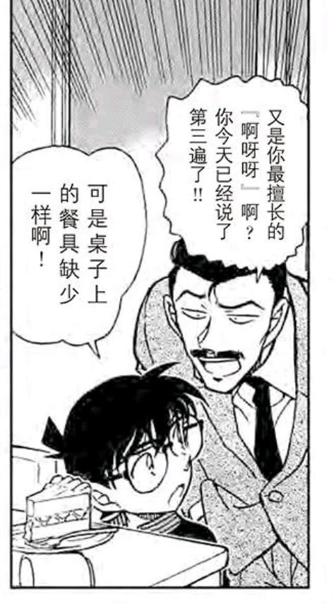
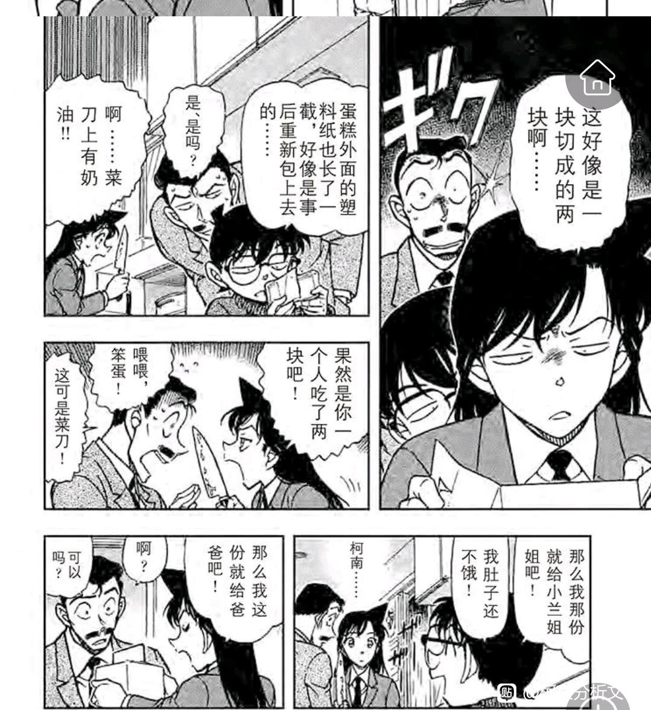
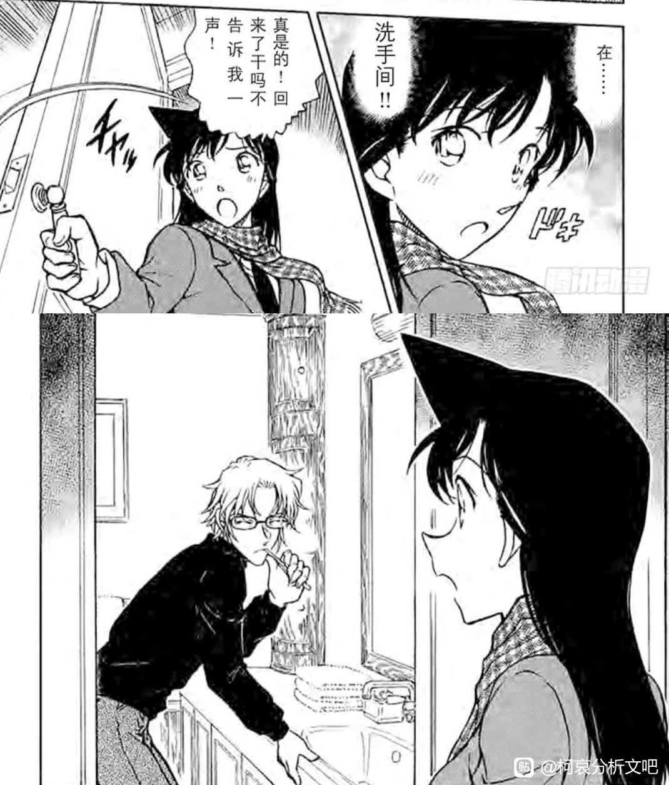
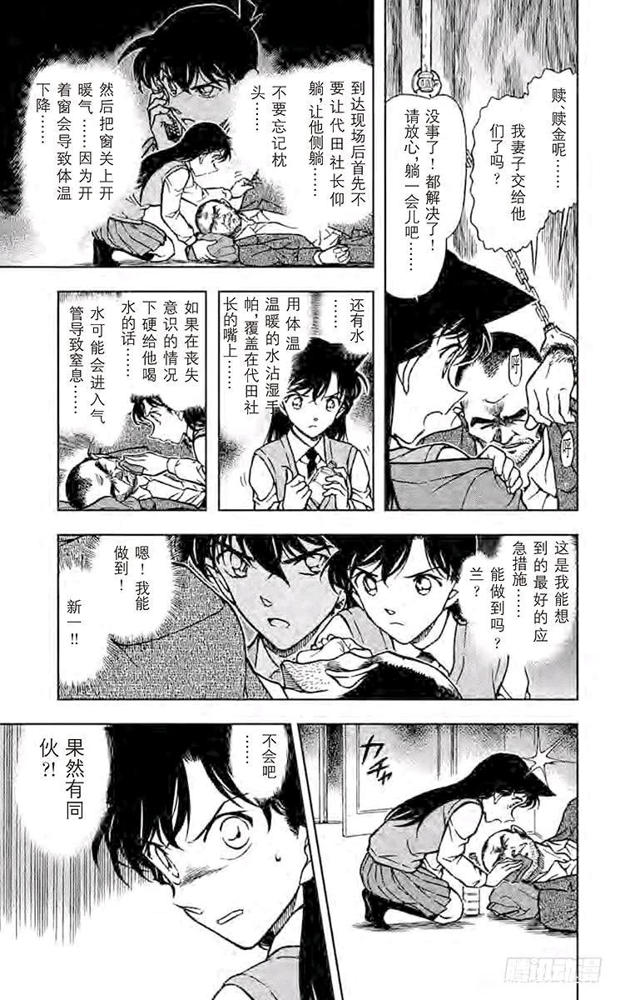
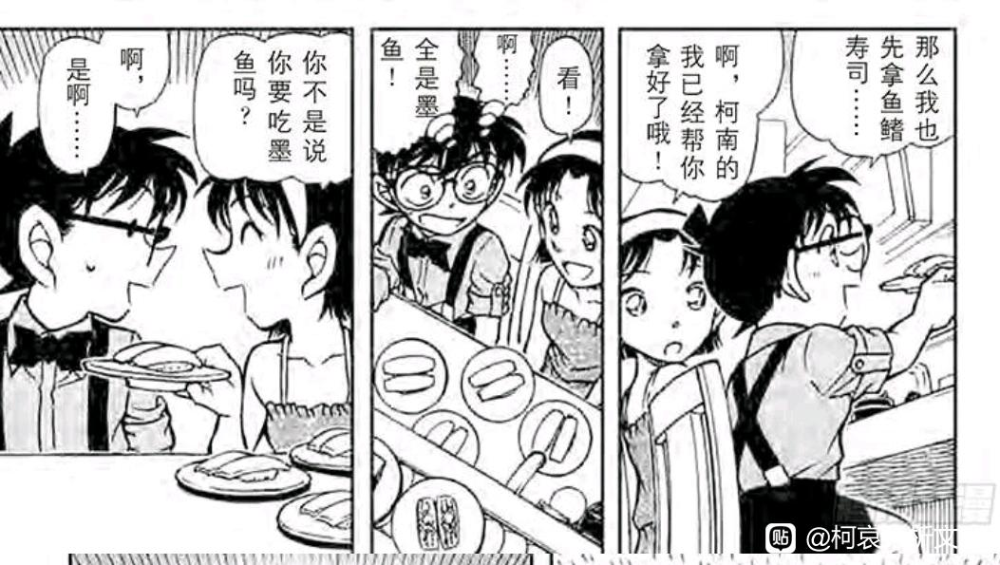
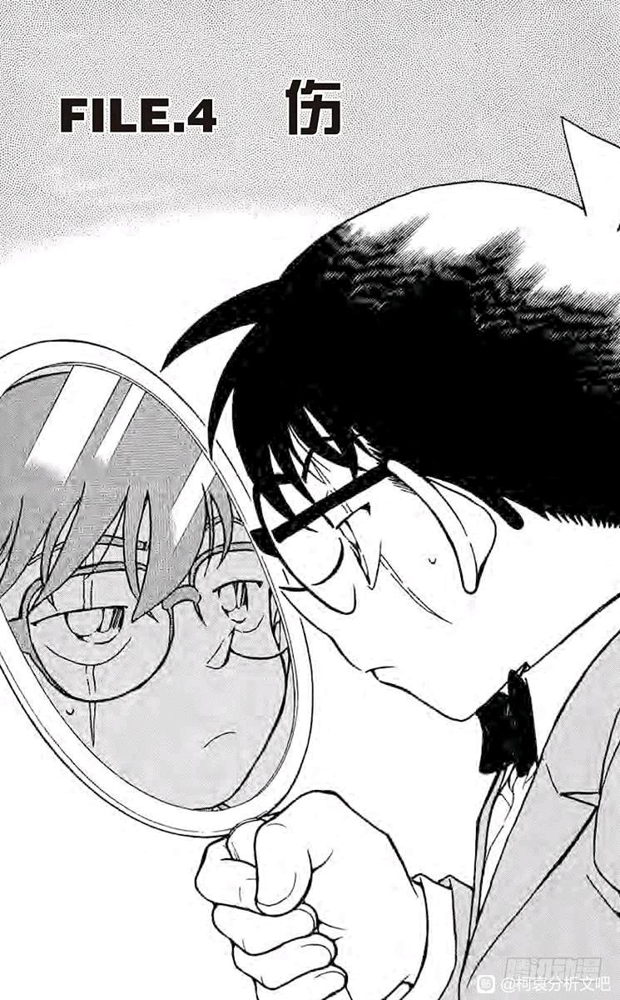
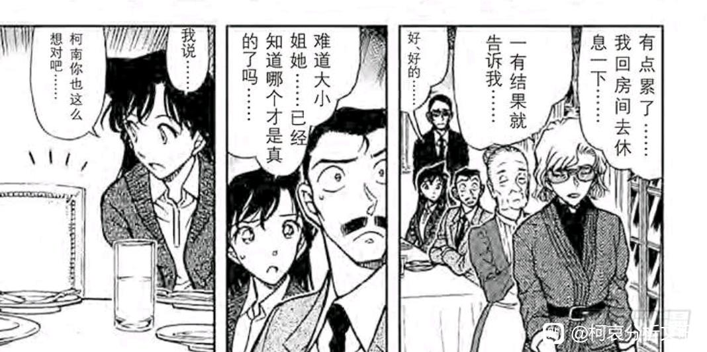
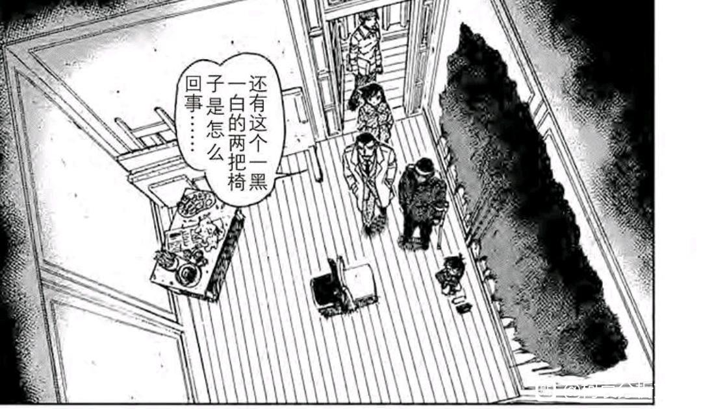

本贴涵盖内容从第182天【红白黄案】开始，至第196天【赤壁案】结束，小时间线持续两周，而死罗神恰好位于两周中间。
一直以来，死罗神篇都被称为“转折”，仿佛死罗神之后新兰和柯哀就发生了极大逆转，但我的看法有所不同，与其说死罗神导致了逆转，倒不如说逆转早已发生，死罗神只是将这一点彻底暴露公开罢了。
为什么会产生“死罗神是逆转”的错觉？也许是因为这个阶段相当一部分漫画读者，并不会按顺序看完全部的漫画篇章，而只是重点关注死罗神本案（极端一点连死罗神后篇都不看，只看假新一的前篇），这样死罗神的新兰就令人失望，仿佛新一一下子就转向柯哀，形成了所谓“新兰柯哀的转折”。
但柯南是第一次在兰哀选择中偏向哀吗？他早在【神社鸟居】就已经发生了改变。
【折叠的时刻•陆】手机篇柯哀的峰回路转
而整个红黑篇又是佑兰主场，柯南甚至在“对瑛佑吃醋”和“同情瑛佑”中选择了后者，如果不是瑛佑使用话术刺激柯南，他甚至都对佑兰线豪不防备。但柯南接下来却要对秀一进行严防死守，对小哀的占有欲十分夸张。
【折叠的时空•柒】青山的婚姻，瑛佑的告白，柯哀的寤寐思服
当然，柯南的倾向远不止以上两点，他粘着小哀已经是众所周知的事情，步美连续两案打破了柯哀的“悄悄话”，柯南动不动就对小哀wink，开屏，“战友情”早已变质，死罗神并非柯哀感情线的重启或什么新兰柯哀的转折，它更像是柯哀发展到一定程度的必然结果。（正如M26也不是转折而是发展的结果）
如果我们再放宽视野，就会发现死罗神前后的几乎所有篇章都与死罗神有着紧密联系，死罗神前用冲矢昴纸飞机案临时强化新兰（不然根本打不过柯哀），为了纸飞机案，先设置蓝色火花让柯哀吵一架；为了让柯哀吵一架，放出秀一吓唬小哀。同理，死罗神后开始连续出少侦案件，柯哀出场竟然达到新兰的两倍，夺回高佐场，侵入敢由场，完全是为了强调死罗神后极速增长的柯哀关系，同时利用一角岩，赤壁案，消除秀一吓唬的不良影响（后期甚至用若狭让小哀找回场子），死罗神前后是一个整体，单看死罗神是会失去很多乐趣的。
本文与日常案件评分贴同步缓慢更新。
【折叠的时空•壹】全日常案件的角色贡献分数
一直以来，死罗神篇都被称为“转折”，仿佛死罗神之后新兰和柯哀就发生了极大逆转，但我的看法有所不同，与其说死罗神导致了逆转，倒不如说逆转早已发生，死罗神只是将这一点彻底暴露公开罢了。
为什么会产生“死罗神是逆转”的错觉？也许是因为这个阶段相当一部分漫画读者，并不会按顺序看完全部的漫画篇章，而只是重点关注死罗神本案（极端一点连死罗神后篇都不看，只看假新一的前篇），这样死罗神的新兰就令人失望，仿佛新一一下子就转向柯哀，形成了所谓“新兰柯哀的转折”。
但柯南是第一次在兰哀选择中偏向哀吗？他早在【神社鸟居】就已经发生了改变。
【折叠的时刻•陆】手机篇柯哀的峰回路转
而整个红黑篇又是佑兰主场，柯南甚至在“对瑛佑吃醋”和“同情瑛佑”中选择了后者，如果不是瑛佑使用话术刺激柯南，他甚至都对佑兰线豪不防备。但柯南接下来却要对秀一进行严防死守，对小哀的占有欲十分夸张。
【折叠的时空•柒】青山的婚姻，瑛佑的告白，柯哀的寤寐思服
当然，柯南的倾向远不止以上两点，他粘着小哀已经是众所周知的事情，步美连续两案打破了柯哀的“悄悄话”，柯南动不动就对小哀wink，开屏，“战友情”早已变质，死罗神并非柯哀感情线的重启或什么新兰柯哀的转折，它更像是柯哀发展到一定程度的必然结果。（正如M26也不是转折而是发展的结果）
如果我们再放宽视野，就会发现死罗神前后的几乎所有篇章都与死罗神有着紧密联系，死罗神前用冲矢昴纸飞机案临时强化新兰（不然根本打不过柯哀），为了纸飞机案，先设置蓝色火花让柯哀吵一架；为了让柯哀吵一架，放出秀一吓唬小哀。同理，死罗神后开始连续出少侦案件，柯哀出场竟然达到新兰的两倍，夺回高佐场，侵入敢由场，完全是为了强调死罗神后极速增长的柯哀关系，同时利用一角岩，赤壁案，消除秀一吓唬的不良影响（后期甚至用若狭让小哀找回场子），死罗神前后是一个整体，单看死罗神是会失去很多乐趣的。
本文与日常案件评分贴同步缓慢更新。
【折叠的时空•壹】全日常案件的角色贡献分数
前排占坑
前排
直播
cy
这一章极其不正常
cy
cy
cy
cy
来喽
一、再论秀哀关系：红白黄案
如前所述，死罗神的前置是纸飞机，纸飞机的前置是蓝色火花，而蓝色火花的前置自然就是红白黄案，柯南再次向小哀隔绝了秀一相关的消息，我们可以和之前柯南隔绝瑛佑消息做一个比较，隔绝瑛佑是因为当时柯南对瑛佑缺乏调查，当柯南调查出一定头绪时自然就和小哀说清楚了。
但隔绝秀一不同，根本没有隐瞒小哀的必要，柯南这么做完全是出于私心，自己心理就是不想让秀一和小哀接触。甚至柯南和朱蒂打电话都要悄悄说（无非害怕提及秀一，被小哀听见），柯南这种小动作应该从满月结束时就开始了，红黑篇小哀对秀一很感兴趣但柯南就是不说，也没什么正经理由，小哀问起来就开始扯谎，扯谎技术又不高明。
（话说柯南已经开始上手了吗？柯哀鼻子又快碰到一起了，又当场被步美逮住，和蓝色古堡一模一样 但是柯南的手就一直放在小哀肩膀上了
但是柯南的手就一直放在小哀肩膀上了 ）
）
站在小哀的立场，其实是相当烦躁的，小哀肯定知道柯南不说有他自己的理由，但被故意瞒着就很气，不过这点小情绪其实不算什么（毕竟小哀身上的秘密更多，也没有让柯南知道），就当自己又被柯南保护了罢。
但这种小情绪在本案迎来了升级，冲矢昴的出现让小哀更烦躁了，柯南不但不加防备，还故意对小哀语焉不详，又把猫哥安排得特别近，这下小哀的领域被侵犯了
如前所述，死罗神的前置是纸飞机，纸飞机的前置是蓝色火花，而蓝色火花的前置自然就是红白黄案，柯南再次向小哀隔绝了秀一相关的消息，我们可以和之前柯南隔绝瑛佑消息做一个比较，隔绝瑛佑是因为当时柯南对瑛佑缺乏调查，当柯南调查出一定头绪时自然就和小哀说清楚了。
但隔绝秀一不同，根本没有隐瞒小哀的必要，柯南这么做完全是出于私心，自己心理就是不想让秀一和小哀接触。甚至柯南和朱蒂打电话都要悄悄说（无非害怕提及秀一，被小哀听见），柯南这种小动作应该从满月结束时就开始了，红黑篇小哀对秀一很感兴趣但柯南就是不说，也没什么正经理由，小哀问起来就开始扯谎，扯谎技术又不高明。
（话说柯南已经开始上手了吗？柯哀鼻子又快碰到一起了，又当场被步美逮住，和蓝色古堡一模一样
但是柯南的手就一直放在小哀肩膀上了）站在小哀的立场，其实是相当烦躁的，小哀肯定知道柯南不说有他自己的理由，但被故意瞒着就很气，不过这点小情绪其实不算什么（毕竟小哀身上的秘密更多，也没有让柯南知道），就当自己又被柯南保护了罢。
但这种小情绪在本案迎来了升级，冲矢昴的出现让小哀更烦躁了，柯南不但不加防备，还故意对小哀语焉不详，又把猫哥安排得特别近，这下小哀的领域被侵犯了
2024-05-26 03:27 | 贴吧用户_GP8tGPW:这一张也太暧昧了2024-05-26 13:30 | 冰凉的绿:2024-05-31 21:33 | snowfly1024:回复 贴吧用户_GP8tGPW :转换成高中生的身体看的话……2024-06-07 23:13 | 迷途·夜:有没有可能是柯南听秀一说过是他害死了明美,所以柯南才不把秀一的事告诉哀2024-06-13 15:06 | 墨韵丹青丹韵墨:那个，这个图里面小柯是不是脸红了？不太像害羞的画法唉？一个疑问哈2024-08-04 10:59 | enjoy大爱狗哥:回复 迷途·夜 :我也这么觉得，但是在后面哀要让秀一送去滑雪场就不这么觉得了，就是刻意规划哀的交际圈
然而柯南真的是故意安排秀一吗？有些人想得比较夸张，认为在秀一假死前，柯南就安排好猫哥的戏份了，有的说法认为柯南早已想好让秀一住工藤家，甚至有说法认为柯南秀一联合起来专门吓小哀，训练她不再怕组织之类，这些都是不对的。
证据就在这一张图，少侦接到同学的委托，柯南有一个明显的思索动作，这个动作和柯南一开始听到小哀住在博士家时很像，也就是柯南“想了一会，发现这恰好是秀一住的公寓”，如果该公寓为柯南安排，他应该不需要思索一会，直接就会反应过来；因此这里只有可能是【秀一自己租了这个公寓（或者FBI帮他租），并提前告知了柯南，而柯南对于博士家附近的门牌号向来不熟悉，当时并没有反应过来秀一的目的，以为他随便租的】
然后现在根据小哀的说法，小哀每天放学都要经过那里，这下秀一的目标就十分明确了，他是要隐藏身份，需要有希子帮他画皮，但是秀一私心里仍希望自己的藏身之处离小哀尽量近，于是选择了这个公寓，柯南一开始没发现秀一的目的，现在发现了。
证据就在这一张图，少侦接到同学的委托，柯南有一个明显的思索动作，这个动作和柯南一开始听到小哀住在博士家时很像，也就是柯南“想了一会，发现这恰好是秀一住的公寓”，如果该公寓为柯南安排，他应该不需要思索一会，直接就会反应过来；因此这里只有可能是【秀一自己租了这个公寓（或者FBI帮他租），并提前告知了柯南，而柯南对于博士家附近的门牌号向来不熟悉，当时并没有反应过来秀一的目的，以为他随便租的】
然后现在根据小哀的说法，小哀每天放学都要经过那里，这下秀一的目标就十分明确了，他是要隐藏身份，需要有希子帮他画皮，但是秀一私心里仍希望自己的藏身之处离小哀尽量近，于是选择了这个公寓，柯南一开始没发现秀一的目的，现在发现了。
既然发现了秀一的目的，第二天又恰好要去公寓，柯南的选择无非是第二天找秀一聊一聊这件事。
不幸当晚秀一公寓烧起来了，第二天少侦看到的只有废墟，这里柯南首先向弓长确认了房客的安全，此时柯南秀一是高度警惕的，这种火灾完全有可能来自组织或内鬼的攻击，在詹姆斯意外知道秀一假死后更是如此，对FBI有敌意的势力是可以做到放火烧秀一的，更不必说波本也开始出动，秀一此时当然十分紧张。
当秀一呈现这种杀气腾腾的状态时，小哀的雷达报警了，有人说这里秀一是故意释放“酒气”吓唬小哀，漫画里显然不是这样，相反，漫画里秀一发现小哀很害怕后，迅速降低了“酒气”。（秀一：啊这，为什么志保一害怕就立刻躲在boya身后，他们果然有特殊关系吗？）
整个过程柯南都是知道的，柯南既知道小哀一开始很害怕，也知道小哀后来突然不怕了，这下对柯南而言事情变得十分麻烦，因为秀哀事实上已经接触，柯南防了个寂寞，无法，柯南只好专心投入案件中，秀一的事情之后再处理。
不幸当晚秀一公寓烧起来了，第二天少侦看到的只有废墟，这里柯南首先向弓长确认了房客的安全，此时柯南秀一是高度警惕的，这种火灾完全有可能来自组织或内鬼的攻击，在詹姆斯意外知道秀一假死后更是如此，对FBI有敌意的势力是可以做到放火烧秀一的，更不必说波本也开始出动，秀一此时当然十分紧张。
当秀一呈现这种杀气腾腾的状态时，小哀的雷达报警了，有人说这里秀一是故意释放“酒气”吓唬小哀，漫画里显然不是这样，相反，漫画里秀一发现小哀很害怕后，迅速降低了“酒气”。（秀一：啊这，为什么志保一害怕就立刻躲在boya身后，他们果然有特殊关系吗？）
整个过程柯南都是知道的，柯南既知道小哀一开始很害怕，也知道小哀后来突然不怕了，这下对柯南而言事情变得十分麻烦，因为秀哀事实上已经接触，柯南防了个寂寞，无法，柯南只好专心投入案件中，秀一的事情之后再处理。
2024-05-26 14:42 | dldfj114514:说得好，这个酒气的解释就比“吓一吓小哀”要合情合理2024-07-11 09:03 | 4455987321:有一说一猫哥后期嗑柯哀估计也是磕的很欢乐的，前期各种故意吓小哀让她躲到小柯后面有一种连襟兄弟统一战线的意味，但后期猫哥也逐渐发现小柯面对小哀越来越占下风了。
既然柯南毫无信息，小哀也不能干等着，于是她使用了工具人光彦，用于感知酒气的来源。
（这里就体现出青山刻画上的一些习惯了，小哀非常用力，光彦直接疼痛+失去平衡摔倒，这个刻画就和柯兰差不多，小兰也是不止一次捏疼柯南，早到月光案，晚到冲野洋子阁楼密室都是捏痛，所不同的是小兰总是因为一些鸡毛蒜皮的事情捏痛柯南，但小哀却是在测试是否有酒厂成员存在，这可是生命攸关的事情，光彦只好忍着点了）
这时候小哀应该就想到了，以往小哀如此害怕的时候柯南早就凑过来，现在柯南却一门心思破案，看来即使这里有酒厂成员，应该也不算太危险，只是小哀根本不清楚柯南做出此判断的原因，早已有之的那种烦躁小情绪更加严重了。
（这里就体现出青山刻画上的一些习惯了，小哀非常用力，光彦直接疼痛+失去平衡摔倒，这个刻画就和柯兰差不多，小兰也是不止一次捏疼柯南，早到月光案，晚到冲野洋子阁楼密室都是捏痛，所不同的是小兰总是因为一些鸡毛蒜皮的事情捏痛柯南，但小哀却是在测试是否有酒厂成员存在，这可是生命攸关的事情，光彦只好忍着点了）
这时候小哀应该就想到了，以往小哀如此害怕的时候柯南早就凑过来，现在柯南却一门心思破案，看来即使这里有酒厂成员，应该也不算太危险，只是小哀根本不清楚柯南做出此判断的原因，早已有之的那种烦躁小情绪更加严重了。
以小时间线上看，秀一第177天晚上假死，第182天房子被烧，虽然只住了五天，但秀一似乎准备享受一下生活，可以看到他十分有空，根据小男孩的说法和秀一的证词，他做的事情包括：
【白天睡懒觉】
【大晚上开车去堤无津川兜风】
【每天为公寓的植物浇花】
【把自己的福尔摩斯书籍都搬到公寓里】
合理推测，秀一这个时期肯定也开始学做饭了（节省生活开销），反正假死，顶多老詹需要狙击手时才出工，平时领点低保工资就是了，秀一此时充满了生活气息，他肯定是要在公寓里常住的，能够每天看见小哀正常上学放学，知道她还处于安全就足够了。
因此，不存在所谓秀一一开始就准备进入博士家或工藤家的说法，他完全就是准备长住公寓，自然也就不存在所谓“柯南秀一联合起来专门吓哀”之类的逻辑。
【白天睡懒觉】
【大晚上开车去堤无津川兜风】
【每天为公寓的植物浇花】
【把自己的福尔摩斯书籍都搬到公寓里】
合理推测，秀一这个时期肯定也开始学做饭了（节省生活开销），反正假死，顶多老詹需要狙击手时才出工，平时领点低保工资就是了，秀一此时充满了生活气息，他肯定是要在公寓里常住的，能够每天看见小哀正常上学放学，知道她还处于安全就足够了。
因此，不存在所谓秀一一开始就准备进入博士家或工藤家的说法，他完全就是准备长住公寓，自然也就不存在所谓“柯南秀一联合起来专门吓哀”之类的逻辑。
2024-06-10 11:52 | 罅隙gai:指正：不是享受生活，学做饭（为之后端锅准备）、浇花（监视上下学和阿笠博士家）、白天补觉（可能哀放学后到出门都在监视），秀可能是柯的情敌啊 柯也对他和哀亲近有防备吧2024-06-10 12:09 | 🌐之徙:回复 罅隙gai :不科学，学做饭是明确说了“可以节省开支”，浇花是睡懒觉后浇花的根本不是上下学，晚上开车去兜风也不是监视小哀，秀一显然并无多少工作，十分悠闲。2024-06-10 12:37 | 罅隙gai:回复 🌐之徙 :嘴里说的是节省开支很可能对应人设研究生但不一定是实情（毕竟住这的目的就是保护哀），浇花的时间睡醒之后就是放学那可以名正言顺地站在院子里了 他的身份和目的（从出场就找哀，假死之后就守着）注定没这么闲的2024-06-10 13:03 | 🌐之徙:回复 罅隙gai :只能说，漫画里表现出来的猫哥那就是很闲2024-06-10 13:16 | 罅隙gai:回复 🌐之徙 :并没有啊，和明美是假恋爱（因为明美作案之前还发短信求之后假戏真做）、笨女人梗列车篇以及之后补充的两姐妹性格也能和哀对上、之前还说过守护梗给哀（总不能守护深爱着明美结果放任她死掉还说已经做好死的觉悟了）2024-06-10 13:17 | 罅隙gai:回复 🌐之徙 :保护小哀挺多的。隔三差五去家里，甚至有次是出门和柯查案还要让卡梅隆接着盯，老有空当司机什么的都是有哀（换油、送滑雪、送哀去找柯等，挂件篇柯问他能不能开车他问到哀不去他就没空了祸水东引小孩给波本）2024-06-10 13:20 | 🌐之徙:回复 罅隙gai :你是不是没怎么看红黑篇……詹姆斯和秀一都认为秀一无法忘记自己和明美的感情，秀明开始为假，结局为真，这在漫画里是很明确的。2024-06-10 13:22 | 🌐之徙:回复 罅隙gai :大部分时候都是柯南叫他，或者窃听到博士这里有案件，后期是因为朗姆篇强度上来了，才拉卡迈尔，不能认为是在专门保护小哀，例如换油送滑雪都是。2024-06-10 13:26 | 罅隙gai:回复 🌐之徙 :看由美去看了一眼说这种女人没啥担心就立马走了，跟哀元太光彦看见可疑车辆直接不管就跟着哀了。喝酒看着火灾战损志保，已经愁到抽了不少烟🚬。我哀那么危险确实需要保护下，柯导都说“（特工）有必须要保护的人”。而且昴哀出现之后，柯很吃味，还有不少越界，就很好玩2024-06-10 13:30 | 🌐之徙:回复 罅隙gai :由美可不是只看了一眼啊，是结结实实打了一架💔保护小哀的确是秀一的责任，但不能以此判定秀一对小哀的情感，秀哀更像是长辈对小孩的关系，包括挂件篇，秀一基本是拿小哀当小孩的。2024-06-10 13:31 | 🌐之徙:回复 罅隙gai :柯南吃醋≠秀一真有意思，早期柯南也吃新出醋，但新出对小兰完全无感。2024-06-10 13:43 | 罅隙gai:回复 🌐之徙 :说实在他为了明美多么伤感还是FBI侧面表现为主都是别人嘴里说的，画面都是他们想的，真的秀明回忆只有一次。而且他之前就只透漏了哀是科学家但是没说细节而且假死之后并没有早早联系FBI也挺。。。2024-06-10 13:51 | 罅隙gai:回复 🌐之徙 :当小孩的话说【不会强迫因为不是“無粋”】，【讨女性喜爱】这种话就是崩形象，挂件事件中说话强调“比护选手”还拉脸、m26中书中挂完电话盯着屏幕沉默......都表明不是对小孩2024-06-10 15:42 | 罅隙gai:回复 🌐之徙 :秀哀单箭头是真的，哀秀也可能是有的，线索之后的信任，谈话的轻松，是领地感很强的哀对监听不关注而是关注秀和有希子接触。如果秀哀是真的其实柯哀会更好磕，新兰开始很爱但是兰不懂侦探、工藤性格张扬（可能由于无人理解其实很孤独），2024-06-10 15:46 | 罅隙gai:回复 罅隙gai :哀信任的大君许下保护梗，实际是个谜语人一直以为是姐姐男友，也并没有直接保护到（说你会保护我的对吧说完又改口自己不是花可能是失望过）。二人都吃下A药重新开始，逐渐发现过去的缺陷，两人逐渐亲近逐渐变得像对方2024-06-10 15:51 | 罅隙gai:回复 罅隙gai :（柯变得成熟，也找到了理解自己的人，不需要通过显摆来宣泄情绪，更加体察人心，对犯人感慨叹息而不是像早年就是逼问然后洋洋得意；哀找到了她阳光坦率的少年，不再自伤自叹，性格变得开朗，不再逃避命运）2024-06-10 15:56 | 罅隙gai:回复 罅隙gai :之前以为的感情逐渐淡去，取而代之的是命运相连、生死之交、惺惺相惜，变得更像对方更好的柯哀绝美感情。正好对应了love is 0，0 is start，命运纠缠的两个人抛却旧事，从头开始的超越生死的共同体2024-06-10 16:03 | 罅隙gai:回复 🌐之徙 :大兄弟鉴我没仔细看包括分析中各种骂兰，你应该可能是我的cp好那么和别的一定坏要摁得死死的，我从小入坑挺有感情确实是不喜欢骂任何角色，我磕图的是一个有爱互动，懒得预测结局和搞党争吵架。我俩也不是一路人，你也不用再回了。2024-06-10 20:14 | 🌐之徙:回复 罅隙gai :我不认为秀哀有单箭头是因为漫画里就没有单箭头，又不是因为毒唯2024-06-10 20:15 | 🌐之徙:你举的例子完全不充分，“讨女性喜爱”在秀一剧情里一大堆，对小兰，园子，若狭都用过，只能说明绅士风度，不能说明秀哀特殊，至于不能强迫，这个更像是对明美的承诺，对志保逻辑不通。
回复 罅隙gai :你非要想着“有秀哀的话柯哀会更好磕”，这就是典型的带着结果找证据，不偏差认知才奇怪呢。2024-06-10 22:05 | 罅隙gai:回复 🌐之徙 :無粋日语不是“不强迫”的意思【人情の機微を解さないこと。特に，男女間の情愛の微妙さがわからないこと。また，そのさま。情緒のないこと。また，そのさま。】2024-06-10 22:12 | 罅隙gai:回复 🌐之徙 :【说出】“讨女性喜欢”是一种调情，做事温柔是是个人品行或人设，而且跟别人说话也并不多有情商（直接指出吃蒜口臭已经够脚趾扣地了）。情绪描写也是真有的，比如日语原文中刻意强调比护，m26小说中的无言都是有的。2024-06-10 22:21 | 🌐之徙:回复 罅隙gai :M26小说是鹦鹉写的啊……且考证下来26的夜空没有星星，通常是指明美。2024-06-10 22:22 | 🌐之徙:回复 罅隙gai :情商不高？猫哥面对小兰园子突袭，已经很得体了。2024-06-10 22:59 | 罅隙gai:回复 🌐之徙 :得体是一种待人方式，言语上的暗示就是一种有意的冒犯和试探.....暧昧的讲话是这样的2024-08-16 12:53 | Wf_yjqd:堤无津川在这就出现了啊
如果按照柯南最初的构想，大概会是把这一案冷处理就是了，然而秀一房子被烧，急需找下一个住房，顺便秀一也挺好奇柯哀关系，开始了他的表演。
这里需要注意，秀一早就知道博士的存在了，在假死计划里柯南就提到了“开金龟车的老爷爷”，那些假雪包也都是博士的发明，那么这里秀一就是故意在柯哀面前提及博士，还利用小孩子强行准备去博士家。
之前聊福尔摩斯，柯南和秀一还有说有笑，这下笑不出来了，柯南最初的设想大概是秀一想在小哀附近可以，但不可以干扰小哀的生活，秀一还想住小哀家？去工藤家蹲着吧一举三得，让秀一给博士家再上一层保险，隔离小哀秀一（并让小哀讨厌秀一），同时反正工藤家还会遭受小兰的进攻，柯南直接驱虎吞狼让他们对线去。
于是柯南开始胡扯，什么“福尔摩斯崇拜者不会是坏人”，言外之意就是告诉小哀“我有别的理由，但现在不能说”。
这里需要注意，秀一早就知道博士的存在了，在假死计划里柯南就提到了“开金龟车的老爷爷”，那些假雪包也都是博士的发明，那么这里秀一就是故意在柯哀面前提及博士，还利用小孩子强行准备去博士家。
之前聊福尔摩斯，柯南和秀一还有说有笑，这下笑不出来了，柯南最初的设想大概是秀一想在小哀附近可以，但不可以干扰小哀的生活，秀一还想住小哀家？去工藤家蹲着吧
一举三得，让秀一给博士家再上一层保险，隔离小哀秀一（并让小哀讨厌秀一），同时反正工藤家还会遭受小兰的进攻，柯南直接驱虎吞狼让他们对线去。于是柯南开始胡扯，什么“福尔摩斯崇拜者不会是坏人”，言外之意就是告诉小哀“我有别的理由，但现在不能说”。
2024-05-26 10:53 | 寒山溪青:驱虎吞狼这个词笑死我了
我们可以看到，从头到尾秀一的行动都不怎么在柯南的预料之中，大部分决策都是柯南随机应变想出来的，大概柯南还觉得自己的计划很完美呢。
他是不是忘记了一件事……这样做有任何必要吗？除了满足柯南自己对小哀的占有欲（甚至可能有小小欺负一下小哀的快乐）之外，对于主线真是毫无作用，但柯南就是这么去做了。
相比上一阶段柯南只是“开屏”，这里柯南真的是下意识把小哀当作自己的私人领域了，以小哀的敏感，她不可能察觉不到柯南对她的“掌控”，这就和后来柯南故意点歪比护挂件眼睛是一个道理，小哀后来的小情绪和炸毛由此产生。
由此开始了死罗神时期柯哀的主旋律：极致的拉扯，你欺负一下我欺负一下，这种拉扯感是死罗神期间柯哀最有趣的看点。
他是不是忘记了一件事……这样做有任何必要吗？除了满足柯南自己对小哀的占有欲（甚至可能有小小欺负一下小哀的快乐）之外，对于主线真是毫无作用，但柯南就是这么去做了。
相比上一阶段柯南只是“开屏”，这里柯南真的是下意识把小哀当作自己的私人领域了，以小哀的敏感，她不可能察觉不到柯南对她的“掌控”，这就和后来柯南故意点歪比护挂件眼睛是一个道理，小哀后来的小情绪和炸毛由此产生。
由此开始了死罗神时期柯哀的主旋律：极致的拉扯，你欺负一下我欺负一下，这种拉扯感是死罗神期间柯哀最有趣的看点。
2024-05-26 03:27 | 贴吧用户_aGDtC16:没错占有欲和控制欲都很强
我来了!
二、明显得不能再明显的对照：高佐榔头男
红白黄案之后紧跟着的就是榔头男，本案虽然不起眼，但在名柯中具有某种特殊的地位，【柯南几乎不必在目暮等人面前隐瞒自己的推理能力了】，此前卡迈尔楼梯案，柯南还说一点“新一哥哥”，这次则完全不装，此时柯南已经悄悄继承了新一“日本警察救世主”的称号，为死罗神柯新身份抉择提供了有力的砝码。
本案与红白黄强对应，高佐这个姿势和上一案柯哀实在太像了，手也没有放下来柯南这里看似干扰了高佐的接吻，但其实代表了青山的意志，即高佐的吻一定要少侦见证才行，怎么能由小兰见证呢？不吉利！于是柯南出动了。（园子：6）
当然柯南本人应该也是这么想的，毕竟此时高佐还在出警任务中，这样乱来怕不是又要降工资了（事实上即使没接吻也差不多，高佐后面各种心不在焉，目暮十分生气）接吻这种事肯定要任务完成之后才浪漫嘛，对吧江户川柯南君？

红白黄案之后紧跟着的就是榔头男，本案虽然不起眼，但在名柯中具有某种特殊的地位，【柯南几乎不必在目暮等人面前隐瞒自己的推理能力了】，此前卡迈尔楼梯案，柯南还说一点“新一哥哥”，这次则完全不装，此时柯南已经悄悄继承了新一“日本警察救世主”的称号，为死罗神柯新身份抉择提供了有力的砝码。
本案与红白黄强对应，高佐这个姿势和上一案柯哀实在太像了，手也没有放下来
柯南这里看似干扰了高佐的接吻，但其实代表了青山的意志，即高佐的吻一定要少侦见证才行，怎么能由小兰见证呢？不吉利！于是柯南出动了。（园子：6）当然柯南本人应该也是这么想的，毕竟此时高佐还在出警任务中，这样乱来怕不是又要降工资了（事实上即使没接吻也差不多，高佐后面各种心不在焉，目暮十分生气
）接吻这种事肯定要任务完成之后才浪漫嘛，对吧江户川柯南君？
榔头男的传说也出现了对应，这个对应就比较久远了，对应【大都会暗号地图事件】的步美，当时步美遇到的情况和榔头男案是一模一样的，但柯南对小兰的上心程度还不如当时的步美，步美被绑后柯南急得要死开着滑板到处追（哪怕只是乌龙），小兰这里只有一句“警察会抓住他的”，颇有服部“警察会保护红叶”的感觉。
连步美都比不过就不要想比小哀了，柯南连秀一都防，非说小哀会被绑架所以粘着她，哪里需要什么榔头男或者少女绑架犯来提醒。
这里可能有人会认为柯南觉得小兰会空手道，所以并不担心，但都市传说的榔头男是非常可怕的，各种身高一米八，跑步速度极快之类层出不穷，再过几天说不定鬼怪之说也要流行起来了，小兰即使有空手道，那也是十分危险。
柯南：与我无关，警察很快就会抓住他的💔
连步美都比不过就不要想比小哀了，柯南连秀一都防，非说小哀会被绑架所以粘着她，哪里需要什么榔头男或者少女绑架犯来提醒。
这里可能有人会认为柯南觉得小兰会空手道，所以并不担心，但都市传说的榔头男是非常可怕的，各种身高一米八，跑步速度极快之类层出不穷，再过几天说不定鬼怪之说也要流行起来了，小兰即使有空手道，那也是十分危险。
柯南：与我无关，警察很快就会抓住他的💔
榔头案首先让柯南继承新一“日本警察救世主”的身份，又安排柯南对小兰甚低的保护欲，慢慢塑造柯新身份对决，这些剧情很明显都是为死罗神服务的。
有没有其他暗示死罗神的内容呢？还真不少，本案榔头男的动机是100%情杀扩大化，这种“攻击抛弃自己的男人的女友，长得像也不放过”很像小兰能做出来的事情（赤木量子案就是这样），同时也可以对应死罗神里屋田诚人对新一的复仇；手法也是一样的替身手法，伪造无罪者去杀人，屋田诚人是整容而她是换衣服，并且都把本尊打晕藏起来。
可以说从此刻开始，死罗神的故事就已经被设计得差不多了，这颗新兰最大的炸弹（比伦敦红修还要重量级）已然成型。
有没有其他暗示死罗神的内容呢？还真不少，本案榔头男的动机是100%情杀扩大化，这种“攻击抛弃自己的男人的女友，长得像也不放过”很像小兰能做出来的事情（赤木量子案就是这样），同时也可以对应死罗神里屋田诚人对新一的复仇；手法也是一样的替身手法，伪造无罪者去杀人，屋田诚人是整容而她是换衣服，并且都把本尊打晕藏起来。
可以说从此刻开始，死罗神的故事就已经被设计得差不多了，这颗新兰最大的炸弹（比伦敦红修还要重量级）已然成型。
说完案件部分，我们再稍微看下小兰的部分。
本案是瑛佑退场后小兰的第一个案件，失去瑛佑的小兰日常案件水平大大下降，完全不如园子。
但是小兰似乎没有表现出任何关于瑛佑的情绪，要知道连一面之缘的明美，小兰都会记得给她打电话，夏江也是一面之缘但是经常通信，现在瑛佑突然消失，小兰不可能不联系他的。
因此，更合理的说法是小兰一直在保持和瑛佑的通信，甚至小兰可能完全知道瑛佑去了美国。（佑兰关系十分健康，小兰应该很高兴瑛佑能去更大的平台学习）
小兰本案基本只做了一件事，就是不断干扰柯南💔在场的一堆警察和园子都十分信任柯南的能力，小兰却将找线索的柯南揪走了，原因除了小兰确实不喜欢推理，恐怕还包括小兰的“监护人意识”，即她确实以柯南监护人自居，却不知道如何做这个监护人，所表现出来的就是一味模仿母亲的监护行动，当了最刻板的那个人。
（更恶意的猜测是小兰由于和瑛佑经历了一段时间，她已经不太需要柯南作为代餐了）
（本案柯南在佐藤面前麻醉园子，这是合理的，佐藤此时一直在粉红泡泡，注意力不在案件上，并且也不好去捏园子的脸）
本案是瑛佑退场后小兰的第一个案件，失去瑛佑的小兰日常案件水平大大下降，完全不如园子。
但是小兰似乎没有表现出任何关于瑛佑的情绪，要知道连一面之缘的明美，小兰都会记得给她打电话，夏江也是一面之缘但是经常通信，现在瑛佑突然消失，小兰不可能不联系他的。
因此，更合理的说法是小兰一直在保持和瑛佑的通信，甚至小兰可能完全知道瑛佑去了美国。（佑兰关系十分健康，小兰应该很高兴瑛佑能去更大的平台学习）
小兰本案基本只做了一件事，就是不断干扰柯南💔在场的一堆警察和园子都十分信任柯南的能力，小兰却将找线索的柯南揪走了，原因除了小兰确实不喜欢推理，恐怕还包括小兰的“监护人意识”，即她确实以柯南监护人自居，却不知道如何做这个监护人，所表现出来的就是一味模仿母亲的监护行动，当了最刻板的那个人。
（更恶意的猜测是小兰由于和瑛佑经历了一段时间，她已经不太需要柯南作为代餐了）
（本案柯南在佐藤面前麻醉园子，这是合理的，佐藤此时一直在粉红泡泡，注意力不在案件上，并且也不好去捏园子的脸）
楼主加油
三、梅开三度：咖啡香案
我似乎发现了一些规律，如果青山连续三案出现了同一种元素，那么这一元素就相当于三个案件刻画的同一重点，且案件之间可以互通，最著名的自然是人鱼岛-目暮秘密-公交车，同时出现了【受伤】元素，平和十绿掩护柯哀。
然后我们再看本案，就会发现青山连续三案采用“旁人打破”+“豆豆眼”的情侣刻画格式，第三案这对情侣虽然BE了但是是真情侣，比前田聪佐山明子还要极端的那种，用高佐+路人情侣掩护柯哀。
言外之意，青山认为真情侣的一举一动很容易被旁人看出来，但情侣自己反而没那么快察觉（表现出豆豆眼+脸红），反面例子自然就是水族馆，新兰被目暮叫做“约会”，但新一不为所动。
正如高佐监视时“伪装情侣”一样，可以强行解释为他们就是在工作而已（如同强行解释柯哀是战友），但他们的动作根本不是什么工作或战友，任何旁人都会觉得是情侣关系。
话说平和也有这一幕，青山是多喜欢这个桥段啊


我似乎发现了一些规律，如果青山连续三案出现了同一种元素，那么这一元素就相当于三个案件刻画的同一重点，且案件之间可以互通，最著名的自然是人鱼岛-目暮秘密-公交车，同时出现了【受伤】元素，平和十绿掩护柯哀。
然后我们再看本案，就会发现青山连续三案采用“旁人打破”+“豆豆眼”的情侣刻画格式，第三案这对情侣虽然BE了但是是真情侣，比前田聪佐山明子还要极端的那种，用高佐+路人情侣掩护柯哀。
言外之意，青山认为真情侣的一举一动很容易被旁人看出来，但情侣自己反而没那么快察觉（表现出豆豆眼+脸红），反面例子自然就是水族馆，新兰被目暮叫做“约会”，但新一不为所动。
正如高佐监视时“伪装情侣”一样，可以强行解释为他们就是在工作而已（如同强行解释柯哀是战友），但他们的动作根本不是什么工作或战友，任何旁人都会觉得是情侣关系。
话说平和也有这一幕，青山是多喜欢这个桥段啊
2024-06-13 11:48 | 贤家的鱼苗儿♀:好可爱哈哈哈哈哈2024-06-16 12:49 | 贴吧用户_G7QD9XD:回复 🌐之徙 :我觉得是73想到一个情侣的刻画点后，就会在某一章前后重复使用，想到下一个再换新的
本案这对路人情侣可能属于名柯中最悲伤的一对，死者为彻彻底底的屑人，女方为犯人，根本不需要任何手法，杀了人直接跳楼自杀，男方到场后只能见到女方尸体了，为了维护女方的身后名选择自己扛罪。
本案的悲伤程度导致柯南吃不下东西，后文存在对应的回转寿司案，那个案件柯南最后还是去吃寿司了，但这里却吃不下蛋糕，柯南在想什么呢？
【他又一次没来得及救下一个值得救的人】
当然，这里和明美案月光案不一样，柯南是物理意义上不可能救下她，也许柯南会反复思考自己是否有某个时机可能改变结局，但这种思考失败了，柯南无法改变什么，产生了一种独属于平成年代福尔摩斯的悲伤。
（正如图书馆案专门恐怖，本案应该也是青山专门设计的悲伤案件，有一种宝玉看画蔷的美，柯南必须经历这样的时刻，即使他尽全力也无法救下的情况，这与小兰拉窗帘时号称的“新一不会让人死去”再次背道而驰）
旁边的小兰虽然过来陪柯南了，但是她的悲伤是对柯南情绪+雨天的简单共情，并不涉及“能否救下”这个问题。
本案的悲伤程度导致柯南吃不下东西，后文存在对应的回转寿司案，那个案件柯南最后还是去吃寿司了，但这里却吃不下蛋糕，柯南在想什么呢？
【他又一次没来得及救下一个值得救的人】
当然，这里和明美案月光案不一样，柯南是物理意义上不可能救下她，也许柯南会反复思考自己是否有某个时机可能改变结局，但这种思考失败了，柯南无法改变什么，产生了一种独属于平成年代福尔摩斯的悲伤。
（正如图书馆案专门恐怖，本案应该也是青山专门设计的悲伤案件，有一种宝玉看画蔷的美，柯南必须经历这样的时刻，即使他尽全力也无法救下的情况，这与小兰拉窗帘时号称的“新一不会让人死去”再次背道而驰）
旁边的小兰虽然过来陪柯南了，但是她的悲伤是对柯南情绪+雨天的简单共情，并不涉及“能否救下”这个问题。
案件中柯南啊咧咧的次数非常多，在波本篇开始后青山有意提高柯南在警视厅面前的可信度，他不再需要搬出新一哥哥了。
甚至连小五郎也习惯了柯南的存在（M26小五郎OOC了，事实上漫画里小五郎已经熟练使用柯南的啊咧咧，几乎不存在将柯南赶走的事情了，只能说鹦鹉对小五郎有不少恶意）
唯有小兰还是日常把柯南从案发现场带走，我都怀疑小兰是不是有意识地在做这种事情，即她在避免看到【柯南像新一一样推理】，她为了不让自己重新思考柯南＝新一，选择了干扰柯南办案，不让柯南在案发现场逗留，这一切都是为了逃避思考。
逃避是没有用的。
甚至连小五郎也习惯了柯南的存在（M26小五郎OOC了，事实上漫画里小五郎已经熟练使用柯南的啊咧咧，几乎不存在将柯南赶走的事情了，只能说鹦鹉对小五郎有不少恶意）
唯有小兰还是日常把柯南从案发现场带走，我都怀疑小兰是不是有意识地在做这种事情，即她在避免看到【柯南像新一一样推理】，她为了不让自己重新思考柯南＝新一，选择了干扰柯南办案，不让柯南在案发现场逗留，这一切都是为了逃避思考。
逃避是没有用的。

2024-05-27 23:04 | 史桩之玄枵:角姐的反应和搜查一课、小五郎的差别真有意思。 M26可能是要求按照早期人设进行创作，毛利老弟的ooc和早期人设差不多，角姐的勇猛也是一样，期间还出现了把你柯幻视成洗衣机这种漫画剧场版很久都没出现过的情节2024-06-13 12:11 | 暗蓝heart:m26会不会很早就在写了。包括里面小哀也又消极了（拜拜江户川柯南的那段，不管小哀那时候是要放弃生命还是远走高飞）2024-07-01 06:25 | 发疯的法师:回复 暗蓝heart :消极的原因应该是因为这次彻彻底底被发现灰原哀就是宫野志保吧 还留在博士那里只会把其他人卷进去（尤其是三小只）灰原又不知道贝姐盗号销了通缉
图一表现得更明显一点，小五郎迅速整合了柯南的信息并质问嫌疑人，小兰选择抱住柯南不让他说话。
图二给人一种相当诡异的感觉，上方小兰的脸是画出来的，刘海遮住眼睛，从嘴型看不太高兴，而柯南的恐惧和【不可能犯罪】更是加剧了此图的诡异感。
这里可以看出，柯南的那个“梦想”，让自己的推理得到小兰认可，恐怕是BOSS级难度的任务，以小兰讨厌推理+害怕柯南＝新一从而不让柯南推理的态度，不论大小号柯南都很难得到小兰的认可了，这一“无望的梦想”（出自瑛佑卡拉OK案）还是早点放弃为好。
图二给人一种相当诡异的感觉，上方小兰的脸是画出来的，刘海遮住眼睛，从嘴型看不太高兴，而柯南的恐惧和【不可能犯罪】更是加剧了此图的诡异感。
这里可以看出，柯南的那个“梦想”，让自己的推理得到小兰认可，恐怕是BOSS级难度的任务，以小兰讨厌推理+害怕柯南＝新一从而不让柯南推理的态度，不论大小号柯南都很难得到小兰的认可了，这一“无望的梦想”（出自瑛佑卡拉OK案）还是早点放弃为好。
抛开这些不愉快的事情，本案小兰表现其实尚可，在柯南指挥下还是做出了不少贡献的。
然而案件结束后小兰的表现吓到我了，著名的“给她一把菜刀，她就可以恐吓自己的父亲”，这刀离小五郎也太近了。（当然这里搞笑的成分比较多，只是在如此悲伤的案件背景下，这一搞笑场景就显得不合时宜，但毕竟小兰一直都有各种大孝女行为，也不算OOC）
柯南这里本能反应就是不吃蛋糕直接让给小兰，属于是甜甜圈后遗症了，随后才想到因为案件悲伤而吃不下蛋糕，然而柯南这一行为很可能再次触发了小兰的甜甜圈记忆，柯南与新一的形象客观上不断重合，主观上却被小兰用力分开，蛋糕更是没法吃了。
如果说红黑后期柯南还需要偶尔专门隐瞒小兰一下，到了死罗神前期，柯南根本不需要额外行动，小兰已经自觉地开始分离柯南和新一的概念，距离真相越来越远。
然而案件结束后小兰的表现吓到我了，著名的“给她一把菜刀，她就可以恐吓自己的父亲”，这刀离小五郎也太近了。（当然这里搞笑的成分比较多，只是在如此悲伤的案件背景下，这一搞笑场景就显得不合时宜，但毕竟小兰一直都有各种大孝女行为，也不算OOC）
柯南这里本能反应就是不吃蛋糕直接让给小兰，属于是甜甜圈后遗症了，随后才想到因为案件悲伤而吃不下蛋糕，然而柯南这一行为很可能再次触发了小兰的甜甜圈记忆，柯南与新一的形象客观上不断重合，主观上却被小兰用力分开，蛋糕更是没法吃了。
如果说红黑后期柯南还需要偶尔专门隐瞒小兰一下，到了死罗神前期，柯南根本不需要额外行动，小兰已经自觉地开始分离柯南和新一的概念，距离真相越来越远。

赶上直播了
cy
来了
四、蓝色火花之前：柯哀矛盾初探
蓝色火花前最后一案为【怪盗基德的瞬间移动】，这是一个非常传统的基德案件，与空中漫步的结构非常相似。
唯一与空中漫步不同的是转场中增加了柯哀的部分（此前柯哀从未在标准基德案件登场，最多在奇异屋宇这种伪基德案件登场），而这一登场必然是有特殊意义的。
那么这个意义是什么？大概率要从属于蓝色火花，这里存在两个“主流”观点：
观点A：基德本案中柯哀十分友好，这说明蓝色火花并非别的事情引发柯哀争吵，而纯粹是静电原因（又有小哀知道案件/不知道案件两个分支）
观点B：基德案应该在主时间轴被跳过，因此蓝色火花的前置是红白黄，小哀是因为柯南安排猫哥却不给她提供理由而生气。
文吧关于蓝色火花的分析大体上都从属于这两个观点（当然还有场外的蓝色火花＝青山离婚，这个人人都知道），我个人更偏向观点B，但我不认为基德案可以随便跳过，大家看这张少侦图会发现比较奇怪的事情，柯哀没有一起走但是眼神却撞在一起，这可不符合通常的情况，合理的原因只剩下一个，那就是【由于猫哥的事情柯南毫无解释，小哀有小情绪了，一时不愿意和柯南走在一起】，但是小哀还是忍不住在偷偷看柯南。
柯南也在看着她。
蓝色火花前最后一案为【怪盗基德的瞬间移动】，这是一个非常传统的基德案件，与空中漫步的结构非常相似。
唯一与空中漫步不同的是转场中增加了柯哀的部分（此前柯哀从未在标准基德案件登场，最多在奇异屋宇这种伪基德案件登场），而这一登场必然是有特殊意义的。
那么这个意义是什么？大概率要从属于蓝色火花，这里存在两个“主流”观点：
观点A：基德本案中柯哀十分友好，这说明蓝色火花并非别的事情引发柯哀争吵，而纯粹是静电原因（又有小哀知道案件/不知道案件两个分支）
观点B：基德案应该在主时间轴被跳过，因此蓝色火花的前置是红白黄，小哀是因为柯南安排猫哥却不给她提供理由而生气。
文吧关于蓝色火花的分析大体上都从属于这两个观点（当然还有场外的蓝色火花＝青山离婚，这个人人都知道），我个人更偏向观点B，但我不认为基德案可以随便跳过，大家看这张少侦图会发现比较奇怪的事情，柯哀没有一起走但是眼神却撞在一起，这可不符合通常的情况，合理的原因只剩下一个，那就是【由于猫哥的事情柯南毫无解释，小哀有小情绪了，一时不愿意和柯南走在一起】，但是小哀还是忍不住在偷偷看柯南。
柯南也在看着她。
2024-06-13 12:07 | 贤家的鱼苗儿♀:啊，最后一句好甜
此时少侦聊起基德，柯南各种不服，一般这种时候小哀总是要用几句话激发柯南的好胜心的。（属于小哀的开心时刻）
本案也不例外，可以看到小哀的身体非常诚实，一直在向柯南靠近，先超过步美再超过元太，最后一幕又和柯南黏在一起了。
这就引出第二个问题：猫哥问题是否严重？
此时在小哀看来，猫哥问题虽然烦躁，但还不太严重，只是产生小情绪却不至于和柯南吵架。首先猫哥这时候还没有经常端着一锅不怎么样的食物跑到博士家，也没安装什么窃听设备，小哀顶多会看到猫哥从工藤家窗户看博士家，既然暂时无事那也就无所谓了。
（转折点在蓝色火花，柯南似乎对博士透了底，导致博士也允许秀一出入博士家，这下小哀真不高兴了）
在猫哥事件还未爆发前，小哀只是有小情绪，她会稍微有点疏远柯南却不会真的疏远他，在基德案件的“助攻”下柯哀还是恢复了常见的相处模式。
本案也不例外，可以看到小哀的身体非常诚实，一直在向柯南靠近，先超过步美再超过元太，最后一幕又和柯南黏在一起了。
这就引出第二个问题：猫哥问题是否严重？
此时在小哀看来，猫哥问题虽然烦躁，但还不太严重，只是产生小情绪却不至于和柯南吵架。首先猫哥这时候还没有经常端着一锅不怎么样的食物跑到博士家，也没安装什么窃听设备，小哀顶多会看到猫哥从工藤家窗户看博士家，既然暂时无事那也就无所谓了。
（转折点在蓝色火花，柯南似乎对博士透了底，导致博士也允许秀一出入博士家，这下小哀真不高兴了）
在猫哥事件还未爆发前，小哀只是有小情绪，她会稍微有点疏远柯南却不会真的疏远他，在基德案件的“助攻”下柯哀还是恢复了常见的相处模式。
2024-05-31 22:14 | snowfly1024:什么叫不怎么样的食物！大表哥明明已经很努力了！2024-05-31 22:54 | 🌐之徙:回复 snowfly1024 :大表哥：喜欢没熟的炖菜吗
但即使如此，小哀是不会放弃对于猫哥问题的探究的。但是柯南肯定不会说，一直强问也不符合小哀的性格，那怎么般呢？
于是小哀借助基德案表示了自己的担忧：
【还真是值得期待啊】
（所以猫哥到底是怎么回事？）
【简直就像是等待礼物的小孩子】
（你应该有特殊计划让我大开眼界的吧？）
【不过对手可是基德】
（不过猫哥看起来和酒厂有关啊！）
【基德穿着白衣出现时就代表他胸有成竹了】
（酒厂成员应该也是胸有成竹的吧，住在你家真的没问题吗？）
需要注意的是，小哀早就知道柯南和基德的特殊关系了，这些关于基德的提醒其实并无多少作用，此前奇异屋宇大冒险，小哀也不需要提醒柯南（倒是提醒了“潘多拉魔盒”），因此可以认为，小哀这段关于基德的提醒，本质就是关于猫哥的提醒。
柯南知道小哀在拐弯抹角说猫哥吗？从蓝色火花柯南的表现看，他是知道的，（于是安排猫哥帮忙，让小哀相信他是好人），但他仍然一意孤行什么都不告诉小哀，小哀的领域受到强烈侵犯。
小哀要不高兴了
于是小哀借助基德案表示了自己的担忧：
【还真是值得期待啊】
（所以猫哥到底是怎么回事？）
【简直就像是等待礼物的小孩子】
（你应该有特殊计划让我大开眼界的吧？）
【不过对手可是基德】
（不过猫哥看起来和酒厂有关啊！）
【基德穿着白衣出现时就代表他胸有成竹了】
（酒厂成员应该也是胸有成竹的吧，住在你家真的没问题吗？）
需要注意的是，小哀早就知道柯南和基德的特殊关系了，这些关于基德的提醒其实并无多少作用，此前奇异屋宇大冒险，小哀也不需要提醒柯南（倒是提醒了“潘多拉魔盒”），因此可以认为，小哀这段关于基德的提醒，本质就是关于猫哥的提醒。
柯南知道小哀在拐弯抹角说猫哥吗？从蓝色火花柯南的表现看，他是知道的，（于是安排猫哥帮忙，让小哀相信他是好人），但他仍然一意孤行什么都不告诉小哀，小哀的领域受到强烈侵犯。
小哀要不高兴了
我们还可以从小兰视角再看一遍瞬间移动。
通常基德出场，都会对新兰感情线产生一些冲击，而对小兰而言，首当其冲的问题就是柯南是名副其实的【基德杀手】，这一属性得到报纸公认，是柯南最不像小孩子的特征。
上一案四幅名画，小兰仍然试图无视这一特征，尝试把柯南当场普通小孩，本案中小兰同样试图防止柯南成为基德杀手，但失败了。
柯南又一次登上报纸（注意看小兰这个纠结的表情，真的只是因为铃木次郎吉吗？），空中漫步时还可以说是群策群力的结果，本案却完全是柯南的个人秀，小兰必须承认柯南基德杀手的身份，这就代表小兰被迫朝“柯南＝新一”这一可怕真相迈进一步。
小兰必须用其他方法分离柯南新一了，这就为纸飞机案埋下了伏笔，纸飞机时小兰一些极端行为都可以追溯到瞬间移动案。而当纸飞机结束后，小兰又可以沉迷于她自己给自己塑造的虚假真相中，因此死罗神的打破才会显得如此剧烈。
通常基德出场，都会对新兰感情线产生一些冲击，而对小兰而言，首当其冲的问题就是柯南是名副其实的【基德杀手】，这一属性得到报纸公认，是柯南最不像小孩子的特征。
上一案四幅名画，小兰仍然试图无视这一特征，尝试把柯南当场普通小孩，本案中小兰同样试图防止柯南成为基德杀手，但失败了。
柯南又一次登上报纸（注意看小兰这个纠结的表情，真的只是因为铃木次郎吉吗？），空中漫步时还可以说是群策群力的结果，本案却完全是柯南的个人秀，小兰必须承认柯南基德杀手的身份，这就代表小兰被迫朝“柯南＝新一”这一可怕真相迈进一步。
小兰必须用其他方法分离柯南新一了，这就为纸飞机案埋下了伏笔，纸飞机时小兰一些极端行为都可以追溯到瞬间移动案。而当纸飞机结束后，小兰又可以沉迷于她自己给自己塑造的虚假真相中，因此死罗神的打破才会显得如此剧烈。
2024-08-19 14:15 | 贴吧用户_a43ZSXM:是不可能。就算是新一也不可能。在莫里斯笔下罗森是福尔摩斯可比不上罗宾。而且柯南现在不是也还没抓到基德吗？他也永远抓不到。基德后面自守还有可能。2024-08-19 14:17 | 贴吧用户_a43ZSXM:而且毛利兰可能还会出现在魔术快斗了哦。莫里斯也曾以本名出现在自己的小说里面。

五、蓝色火花的迷雾：被入侵的领域
蓝色火花作为柯哀吵架篇章，文吧相关分析实在不多，仅有的几篇分析观点也各不相同，具体包括：
【单纯静电心烦论】
【由于猫哥问题而产生抵触论】
【静电手法提醒论】
（这也算是三选一了）
以上各论，我认为都有失偏颇（）这里先说我的结论，首先排除【静电手法提醒论】，这在漫画中是明确表现的不可能（后文会详细解释），而静电论和猫哥论都只讲到了问题的一半，真正的原因其实是……
小哀发现了柯南越来越高的占有欲，小猫咪的领域被侵犯了，炸毛了。具体地，柯南安排秀一时小哀毫不知情但博士却知情，小哀再怎么理解柯南也不免有被操控的感觉，而静电期间柯南又擅自垄断了孩子们面前小哀情绪的解释权，加之静电困扰下更自由的表达形式（跟喝酒颇有相似之处），小哀得以自由自在地表达自己的情绪。
（场外的情况可能更严重，是青南离婚的映射，有可能青南中的一方对另一方提出了不合理的要求，青南学对此有许多猜想，不过考虑到没有实锤，本篇不从这个方向分析，只需要知道本案柯哀吵架比较激烈，很可能是青山一时的自我代入。）
下面我们具体地分析这一案。
蓝色火花作为柯哀吵架篇章，文吧相关分析实在不多，仅有的几篇分析观点也各不相同，具体包括：
【单纯静电心烦论】
【由于猫哥问题而产生抵触论】
【静电手法提醒论】
（这也算是三选一了）
以上各论，我认为都有失偏颇（
）这里先说我的结论，首先排除【静电手法提醒论】，这在漫画中是明确表现的不可能（后文会详细解释），而静电论和猫哥论都只讲到了问题的一半，真正的原因其实是……小哀发现了柯南越来越高的占有欲，小猫咪的领域被侵犯了，炸毛了。具体地，柯南安排秀一时小哀毫不知情但博士却知情，小哀再怎么理解柯南也不免有被操控的感觉，而静电期间柯南又擅自垄断了孩子们面前小哀情绪的解释权，加之静电困扰下更自由的表达形式（跟喝酒颇有相似之处），小哀得以自由自在地表达自己的情绪。
（场外的情况可能更严重，是青南离婚的映射，有可能青南中的一方对另一方提出了不合理的要求，青南学对此有许多猜想，不过考虑到没有实锤，本篇不从这个方向分析，只需要知道本案柯哀吵架比较激烈，很可能是青山一时的自我代入。）
下面我们具体地分析这一案。
2024-05-30 00:23 | 贴吧用户_7bZ4Ey4:确实有很多人在分析这篇的时候总会找寻外部因素，什么猫哥的监视，什么柯南对哀的不告知，什么作案手法的提醒，我虽然觉得都有道理，可我们却忘了，柯南才是那个最直接影响小哀情绪的人，2024-05-30 00:25 | 贴吧用户_7bZ4Ey4:回复 贴吧用户_7bZ4Ey4 :虽说柯南没有告知原由的就把潜在危险分子安排进了隔壁，但既然柯南都说了没问题，哀气柯南瞒着她可她也知道柯南是不会让自己有危险的，柯子又不是第一次这样虽然不爽哀也忍了2024-05-30 00:29 | 贴吧用户_7bZ4Ey4:回复 贴吧用户_7bZ4Ey4 :真正让哀生气的是三小问哀为什么心情不好，柯子一副她的话事人的样子直接定义她的不高兴为无聊，哀才会生气，柯子现在不止是行为上让哀觉得拘束，连思想上柯南都想要干涉，这让哀很不自在2024-07-13 06:53 | 学习机425:想起据说青高离婚的原因有青山让高山南当家庭主妇……2024-08-04 12:33 | enjoy大爱狗哥:回复 学习机425 ::？啊，太那个了吧，这不就是大男子主义了2024-08-19 14:36 | 贴吧用户_a43ZSXM:回复 学习机425 ::青山不是那种人。我觉得青山离婚是因为高山南对他说了一个他不能原谅的谎，然后他自己的心里也有一个无法忘掉的人。2024-08-19 14:38 | 贴吧用户_a43ZSXM:回复 学习机425 ::而且离婚是故意拖到这么晚才离，他应该早就想离了。2024-08-19 23:07 | 学习机425:回复 贴吧用户_a43ZSXM :这他自己承认过的啊，他说过曾经想让高山南当家庭主妇……至于白月光实在是想多了……2024-08-19 23:28 | 贴吧用户_a43ZSXM:回复 学习机425 ::哦哦2024-08-19 23:44 | 学习机425:回复 贴吧用户_a43ZSXM :至于离婚这个，高山南比较想离（传闻是流产了一个孩子）青山是不想离那个2024-08-20 01:03 | 贴吧用户_a43ZSXM:回复 学习机425 ::哦哦，好的。
我们先来看本案一开始的情况。
此时柯哀并没有吵架，座位是坐在一起的，小哀只是情绪不高而已，这里确实是因为静电（此时猫哥的事情还未激活，不可能是别的原因）
然后柯南做了一件很下意识占有的事情：他替代小哀向孩子们解释小哀情绪低落的原因。
有些柯哀党会认为这里是“老夫老妻”，显得很甜，如果是风筝篇柯南胡乱解释小哀在听“口水歌”，那确实是老夫老妻的表现，但这里不太对，因为柯南的形容非常有问题。
我不太清楚这里日文原文是怎么个表达方式，中文里用到了“这个德行”“反正一定是无聊的事”，这些表达非常负面，相当于柯南在孩子们面前将小哀形容成一个莫名其妙情绪负面的人，而且【只有我能解释小哀的情绪】，这种对解释权的占有，是柯南显著的越界行为。
站在柯南的立场看，他“越界”也不是一两次了，只是死罗神前更加明显，他以下意识将小哀视为自己的私人领域，秀一不可以和小哀接触，要由自己向孩子们解释小哀的情绪，而且柯南觉得这没什么不合理的。（这种频繁越界隔一般恋爱漫画，多半会认为男方准备对女方大举进攻了吧）
小哀：哈？凭什么啊？为什么我就要被江户川形容成因为无聊小事就生气的人啊？
小哀的生气从这一幕正式启动，狠狠瞪了柯南一眼，吓得他想换座位。
这一幕我支持小哀，柯南不会从小兰那边学到了什么坏恋爱习惯吧，小兰也很喜欢代替新一向其他人解释新一的行为（解释得也不怎么样），不愧是恋爱白痴。
此时柯哀并没有吵架，座位是坐在一起的，小哀只是情绪不高而已，这里确实是因为静电（此时猫哥的事情还未激活，不可能是别的原因）
然后柯南做了一件很下意识占有的事情：他替代小哀向孩子们解释小哀情绪低落的原因。
有些柯哀党会认为这里是“老夫老妻”，显得很甜，如果是风筝篇柯南胡乱解释小哀在听“口水歌”，那确实是老夫老妻的表现，但这里不太对，因为柯南的形容非常有问题。
我不太清楚这里日文原文是怎么个表达方式，中文里用到了“这个德行”“反正一定是无聊的事”，这些表达非常负面，相当于柯南在孩子们面前将小哀形容成一个莫名其妙情绪负面的人，而且【只有我能解释小哀的情绪】，这种对解释权的占有，是柯南显著的越界行为。
站在柯南的立场看，他“越界”也不是一两次了，只是死罗神前更加明显，他以下意识将小哀视为自己的私人领域，秀一不可以和小哀接触，要由自己向孩子们解释小哀的情绪，而且柯南觉得这没什么不合理的。（这种频繁越界隔一般恋爱漫画，多半会认为男方准备对女方大举进攻了吧）
小哀：哈？凭什么啊？为什么我就要被江户川形容成因为无聊小事就生气的人啊？
小哀的生气从这一幕正式启动，狠狠瞪了柯南一眼，吓得他想换座位。
这一幕我支持小哀，柯南不会从小兰那边学到了什么坏恋爱习惯吧，小兰也很喜欢代替新一向其他人解释新一的行为（解释得也不怎么样），不愧是恋爱白痴。
2024-05-29 23:23 | 柑橘香水💞:感觉这个比较像心理方面而不是恋爱习惯，对于喜欢的人，在别人有疑惑的情况下会下意识就去解释他/她的情绪和行为（柯南这里是真的没搞懂哀在烦恼什么），只不过是柯南对哀是偶尔解读错误，而兰则完全不了解新一。2024-05-29 23:45 | 🌐之徙:回复 柑橘香水💞 :差不多，柯南的行为实质上就是把小哀当成“自己领域内的人”看的，只不过小哀可不认为他们关系到这个程度了啊。2024-08-19 14:48 | 贴吧用户_a43ZSXM:他这一话就是为了那句“你以为你是谁”包的饺子。
柯南大概还没意识到小哀生气的原因，下了车一直半月眼，被小哀的态度弄得摸不着头脑，按照白鸟的说法“我好像被她讨厌了”。
然而柯南毕竟还是要执行早在瞬间移动案就想好的事情，即【让小哀心里有个印象，知道猫哥是好人】，为此柯南向博士透露了一些信息，可以看到博士本案已经很信任秀一了。
然而这在小哀看来又是不能理解的，且不说猫哥本身就可疑，柯南对博士说却不对我说，凭什么啊？
（博士肯定也瞒着小哀了）
面对这种情况，即使是小兰恐怕也会有情绪的，更不用说讨厌被隐瞒的小哀了，小哀此时完全感受到了柯南各方面的“越界”，好像自己已经成了柯南的私人领域。
当然，小哀作为一个情绪非常内敛的人，是不会轻易表现出来的，作为替代，她以“女王口吻”指使光彦去帮她拿东西，柯南照样是根本猜不透小哀的心思，还在那里乱说话。
于是情况又发生了反转，小哀发现行为上柯南确实屡屡越界，但柯南好像不知道自己在越界，还是完全不清楚自己闹别扭的原因，这可难办了，生气但又不不应该那么生气，小哀还是相当纠结的。
然而柯南毕竟还是要执行早在瞬间移动案就想好的事情，即【让小哀心里有个印象，知道猫哥是好人】，为此柯南向博士透露了一些信息，可以看到博士本案已经很信任秀一了。
然而这在小哀看来又是不能理解的，且不说猫哥本身就可疑，柯南对博士说却不对我说，凭什么啊？
（博士肯定也瞒着小哀了）
面对这种情况，即使是小兰恐怕也会有情绪的，更不用说讨厌被隐瞒的小哀了，小哀此时完全感受到了柯南各方面的“越界”，好像自己已经成了柯南的私人领域。
当然，小哀作为一个情绪非常内敛的人，是不会轻易表现出来的，作为替代，她以“女王口吻”指使光彦去帮她拿东西，柯南照样是根本猜不透小哀的心思，还在那里乱说话。
于是情况又发生了反转，小哀发现行为上柯南确实屡屡越界，但柯南好像不知道自己在越界，还是完全不清楚自己闹别扭的原因，这可难办了，生气但又不不应该那么生气，小哀还是相当纠结的。
2024-06-10 12:16 | 罅隙gai:好好笑这里，光彦被女神指使了：美滋滋 柯南看见哀找别的男生做事：吃味了，胡言乱语挖苦女生（这是不对的，图里就表明没啥好下场）
接着一场爆炸发生了，柯哀都被案件所吸引（这就是和新兰最大的不同，即使双方都有情绪，柯哀都默认先解决案件且配合默契，不存在伦敦篇之类高血压时刻）
小哀首先排除了利用心里手段香烟点燃的爆炸方法，柯南进而得出“会有别的爆炸方法”，并且柯哀都已经锁定了嫌疑人（这个嫌疑人发言非常矛盾，还是很好锁定的）
这里就引出一个问题：小哀有没有可能现在就想到是静电起火，从而开始提醒柯南呢？显然不可能，柯南这时候信息都没收集全，最多知道这是个证明题案件，小哀即使想提醒，其信息也不可能超过柯南。
随后柯南利用小孩子的便利到处问信息，这期间小哀是没有去的，镜头里可以看到小哀是和孩子们在一起等弓长拿汽油。
（小哀大概率没有听到后续柯南收集的信息，但接下来我将证明，即使小哀听到了也没关系，小哀的生气仍然不会是因为要对手法进行提醒）
小哀首先排除了利用心里手段香烟点燃的爆炸方法，柯南进而得出“会有别的爆炸方法”，并且柯哀都已经锁定了嫌疑人（这个嫌疑人发言非常矛盾，还是很好锁定的）
这里就引出一个问题：小哀有没有可能现在就想到是静电起火，从而开始提醒柯南呢？显然不可能，柯南这时候信息都没收集全，最多知道这是个证明题案件，小哀即使想提醒，其信息也不可能超过柯南。
随后柯南利用小孩子的便利到处问信息，这期间小哀是没有去的，镜头里可以看到小哀是和孩子们在一起等弓长拿汽油。
（小哀大概率没有听到后续柯南收集的信息，但接下来我将证明，即使小哀听到了也没关系，小哀的生气仍然不会是因为要对手法进行提醒）
收集一圈信息后，此时的柯南的思路是【已经差不多了】，具体地，柯南已经知道羊毛会产生静电，静电会产生火花从而爆炸，但这个推理是不充分的，具体静电火花为何产生仍然是一个迷，柯南还没想好。
柯南的卡壳主要是因为是他收集的信息没有重点，关顾着考虑如何火花引发爆炸，没有想到在加油站卸掉静电的问题，之后小哀对柯南做了无意提示，也是“卸电”提示而非静电提示。
不难发现，【小哀用静电提醒柯南】的说法是完全站不住脚的，柯南自己已经想到了静电，小哀即使要提醒也是卸电提醒，然而小哀本人根本不知道常见的卸电方法（博士说小哀一大早就被静电困扰），因此小哀的【卸电提醒】也不存在，就只能是无心提醒，小哀的情绪显然另有原因。
柯南的卡壳主要是因为是他收集的信息没有重点，关顾着考虑如何火花引发爆炸，没有想到在加油站卸掉静电的问题，之后小哀对柯南做了无意提示，也是“卸电”提示而非静电提示。
不难发现，【小哀用静电提醒柯南】的说法是完全站不住脚的，柯南自己已经想到了静电，小哀即使要提醒也是卸电提醒，然而小哀本人根本不知道常见的卸电方法（博士说小哀一大早就被静电困扰），因此小哀的【卸电提醒】也不存在，就只能是无心提醒，小哀的情绪显然另有原因。
小哀这里应该看出柯南卡壳了，在这里硬想也无用，总归是需要点提示的，于是小哀准备让柯南进车里想想。
（虽然小哀做静电提示是不可能的，但小哀有意做“无意提示”倒是可能性很高，毕竟柯南总是在卡壳时需要提示，那么小哀就创造出一些有利于柯南灵光一闪的场景，虽然不知道有什么用但也许有用呢。）
（另一种解释是小哀发现步美很冷，于是贴心让步美上车，步哀加分，柯南不过是步哀的一环罢了）（暴论）
这次小哀把指使的对象换成了柯南，可以看到小哀的情绪远没有之前那么差，甚至因为指使柯南而…有些害羞几经周转下柯南终于知道小哀被静电困扰了，案件也不管了开始狠狠嘲笑小哀。（可恶，为什么柯南总是一副自信满满的样子，总是欺负小哀，小兰早期的发言基本全中，只不过对象不是小兰而已）
这里我们还可以进一步对柯哀的脸红做分析，柯南的好理解，他终于自以为搞清楚了小哀生气的原因因此十分得意，小哀这个就很微妙了。这里我们引入另一个著名模型，就是比护手机挂件模型，小哀面对柯南的“入侵”，一般不是选择防守，而是“入侵回去”，没办法嘛毕竟确实喜欢他。
【指使你开车门，确实是无理的，但是你刚才也很无理呀，这样就算我们扯平了吧？】
（可恶的越智动画组把脸红全删了，还把这个案件改到死罗神后）
（虽然小哀做静电提示是不可能的，但小哀有意做“无意提示”倒是可能性很高，毕竟柯南总是在卡壳时需要提示，那么小哀就创造出一些有利于柯南灵光一闪的场景，虽然不知道有什么用但也许有用呢。）
（另一种解释是小哀发现步美很冷，于是贴心让步美上车，步哀加分，柯南不过是步哀的一环罢了）（暴论）
这次小哀把指使的对象换成了柯南，可以看到小哀的情绪远没有之前那么差，甚至因为指使柯南而…有些害羞
几经周转下柯南终于知道小哀被静电困扰了，案件也不管了开始狠狠嘲笑小哀。（可恶，为什么柯南总是一副自信满满的样子，总是欺负小哀，小兰早期的发言基本全中，只不过对象不是小兰而已）这里我们还可以进一步对柯哀的脸红做分析，柯南的好理解，他终于自以为搞清楚了小哀生气的原因因此十分得意，小哀这个就很微妙了。这里我们引入另一个著名模型，就是比护手机挂件模型，小哀面对柯南的“入侵”，一般不是选择防守，而是“入侵回去”，没办法嘛毕竟确实喜欢他。
【指使你开车门，确实是无理的，但是你刚才也很无理呀，这样就算我们扯平了吧？】
（可恶的越智动画组把脸红全删了，还把这个案件改到死罗神后）
2024-05-29 23:32 | 贴吧用户_GDKeMK9:好看(๑• . •๑)爱看2024-05-29 23:33 | 贴吧用户_GDKeMK9:期待后续
接下来柯南选择钓鱼以抓捕犯人，钓饵只能是穿着毛衣的小哀了。关于这次钓鱼，又有不同的说法，有小哀知道和小哀不知道两个版本。
我个人倾向于小哀是知道的，因为博士显然是故意踢翻水桶，小哀也像模像样地去用车钥匙（其实根本没有钥匙孔），且柯南不太可能单独对博士交代钓鱼内容。（但不一定很详细，例如钓鱼原理不会讲清楚，因而小哀无法预测犯人的行为）
果然，柯南在钓鱼过程大量夹带私货，向小哀各种科普，而且十分赖皮，因为小哀知道是钓鱼，只好乖乖听着
其实钓鱼方法有很多，柯南可以假装自己被静电电到，自己去钓鱼，效果是一样的，但柯南不依不饶非要“欺负”小哀，怪不得有人说伏特加对水无有好感，柯南做的事情大概就是最笨的那种了吧虽然笨可是小哀好像真的吃这一套呢。
秀一：暗中观察，柯哀真好磕。
我个人倾向于小哀是知道的，因为博士显然是故意踢翻水桶，小哀也像模像样地去用车钥匙（其实根本没有钥匙孔），且柯南不太可能单独对博士交代钓鱼内容。（但不一定很详细，例如钓鱼原理不会讲清楚，因而小哀无法预测犯人的行为）
果然，柯南在钓鱼过程大量夹带私货，向小哀各种科普，而且十分赖皮，因为小哀知道是钓鱼，只好乖乖听着
其实钓鱼方法有很多，柯南可以假装自己被静电电到，自己去钓鱼，效果是一样的，但柯南不依不饶非要“欺负”小哀，怪不得有人说伏特加对水无有好感，柯南做的事情大概就是最笨的那种了吧
虽然笨可是小哀好像真的吃这一套呢。秀一：暗中观察，柯哀真好磕。
2024-06-10 12:22 | 罅隙gai:秀对哀有感情的吧，这里也可能看做自己只能默默守护对柯哀有爱互动的嫉妒的苦笑2024-06-10 13:04 | 🌐之徙:回复 罅隙gai :我认为秀对哀是一种长辈的关心，而非什么男女之情，本身秀明就是锁定的2024-07-01 11:55 | 发疯的法师:回复 罅隙gai :明美:？赤井紧咬酒厂的原因之一就是酒厂噶了明美（红黑篇） 不存在是对灰原有恋爱方面的感情2024-07-18 12:17 | 此账号无黑历史:抛开感不感情的先不论，但赤井紧咬酒厂的原因绝没有明美：1. 他有充足的狙杀琴酒给明美报仇的机会，但他选择了擦伤脸劝退就行。 2. 见到琴酒他没有苦大仇深，甚至还在那“亲爱的恋人宿敌”说骚话。 3. 他为了安慰卡迈尔曾说出“她自己早有觉悟”这样的话，如果秀对明感情稍深一点，绝不会话2024-07-18 12:27 | 🌐之徙:回复 此账号无黑历史 :狙杀琴酒，对面两杆枪乱开怎么办？秀一不仅想干掉琴酒，还想干掉整个组织，杀个琴酒本身就不是优先目标。2024-07-18 12:27 | 🌐之徙:回复 此账号无黑历史 :你也知道那是安慰的话，秀一自己恐怕根本没走出来，这是朱蒂和詹姆斯观察得到的。
最后总结一些蓝色火花的柯哀矛盾。
不止是秀一的问题，也不只是静电的问题，更关键的原因是小哀的领域被柯南侵入了（猫哥和静电本质相同，都是用于柯南侵入小哀领域的环境而已），她选择了侵入回去，柯哀拉扯十分激烈，占有情嘛，你占有我我占有你。
从长线剧情看，这无疑是柯哀感情的一次突破，双方都有了自己的小心思，小情绪，又时刻担心自己会不会被对方讨厌，这是成为真正情侣所不可缺少的，然而也必须注意到，短期内猫哥的事情只是搁置了，吵架也属于无疾而终，这就让柯南对小哀的关注减少了一些，从而有了冲矢昴纸飞机案这颗【最后的新兰糖】
作为离婚后的第一案，纸飞机是新兰糖，这本身就很奇怪了，以往对纸飞机的解读十分孤立，大体集中在对小兰闯入工藤家的批判，然而如果我们联系死罗神前期发生的各种事件，就会发现本案并不孤立，承接瞬间移动案小兰对新柯身份的矛盾，后启死罗神的神话与坠落。
下一章将对纸飞机案进行详解。
不止是秀一的问题，也不只是静电的问题，更关键的原因是小哀的领域被柯南侵入了（猫哥和静电本质相同，都是用于柯南侵入小哀领域的环境而已），她选择了侵入回去，柯哀拉扯十分激烈，占有情嘛，你占有我我占有你。
从长线剧情看，这无疑是柯哀感情的一次突破，双方都有了自己的小心思，小情绪，又时刻担心自己会不会被对方讨厌，这是成为真正情侣所不可缺少的，然而也必须注意到，短期内猫哥的事情只是搁置了，吵架也属于无疾而终，这就让柯南对小哀的关注减少了一些，从而有了冲矢昴纸飞机案这颗【最后的新兰糖】
作为离婚后的第一案，纸飞机是新兰糖，这本身就很奇怪了，以往对纸飞机的解读十分孤立，大体集中在对小兰闯入工藤家的批判，然而如果我们联系死罗神前期发生的各种事件，就会发现本案并不孤立，承接瞬间移动案小兰对新柯身份的矛盾，后启死罗神的神话与坠落。
下一章将对纸飞机案进行详解。
期待纸飞机
2024-05-30 05:44 | 贴吧用户_7bZ4Ey4:我期待麒麟角篇柯南“白色的”

六、冲矢昴与纸飞机：死罗神的敲门砖
距离死罗神还有三个案件，分别为冲矢昴纸飞机案（通常被认为是新兰糖），小梓哥哥案（该案知名度无限趋于0），毛妃录音案（更常用的名字是“伊卡洛斯的翅膀”，动画时标题叫做“以柔制迷”），这三个案件都与死罗神强相关，可以说青山创作这三个案件，就是为了死罗神准备的，三个案件对小兰的塑造充满了数不清的恶意，有显著的也有隐藏的，有正面的也有旁敲侧击的。
即使到了今天，仍然有一部分人认为死罗神是“青山用力过猛”“笔力下降”，或者认为“青山确实想刻画小兰潜意识认出新一但没画好”，通常的反驳是指出死罗神本身的种种细节，但说服力仍稍显不够，【但是，如果将死罗神前这三案纳入考量，任何人都能知道青山就是用恶意创作死罗神的】，这三案知名度虽然低，信息密度却非常高，我甚至认为，这三案就是青山将小兰软着陆（例如配平瑛佑）转为硬着陆（直接负面化）的冲锋号，他将红黑佑兰的不受关注，佐藤-越智动画组的不尊重原著，甚至还有自身离婚经历的一些思考，全部安排在小兰身上，死罗神小兰的奇怪表现根本不奇怪，是青山蓄谋已久的，森谷帝二式的复仇。
让我们先从三案中第一案，对小兰恶意相对最少的纸飞机开始讲起，这一案绝对称得上断头饭式的新兰糖，糖是真的，断头也是真的。
距离死罗神还有三个案件，分别为冲矢昴纸飞机案（通常被认为是新兰糖），小梓哥哥案（该案知名度无限趋于0），毛妃录音案（更常用的名字是“伊卡洛斯的翅膀”，动画时标题叫做“以柔制迷”），这三个案件都与死罗神强相关，可以说青山创作这三个案件，就是为了死罗神准备的，三个案件对小兰的塑造充满了数不清的恶意，有显著的也有隐藏的，有正面的也有旁敲侧击的。
即使到了今天，仍然有一部分人认为死罗神是“青山用力过猛”“笔力下降”，或者认为“青山确实想刻画小兰潜意识认出新一但没画好”，通常的反驳是指出死罗神本身的种种细节，但说服力仍稍显不够，【但是，如果将死罗神前这三案纳入考量，任何人都能知道青山就是用恶意创作死罗神的】，这三案知名度虽然低，信息密度却非常高，我甚至认为，这三案就是青山将小兰软着陆（例如配平瑛佑）转为硬着陆（直接负面化）的冲锋号，他将红黑佑兰的不受关注，佐藤-越智动画组的不尊重原著，甚至还有自身离婚经历的一些思考，全部安排在小兰身上，死罗神小兰的奇怪表现根本不奇怪，是青山蓄谋已久的，森谷帝二式的复仇。
让我们先从三案中第一案，对小兰恶意相对最少的纸飞机开始讲起，这一案绝对称得上断头饭式的新兰糖，糖是真的，断头也是真的。
2024-06-04 12:19 | 卷福花生酱酱酱:鸡皮疙瘩起来了！
和纯粹为了死罗神的后两案不同，纸飞机还担任了波本烟雾弹的任务，有一大半是把猫哥往波本身上刻画的内容，故新兰线显得不那么极端。
本案一开始，柯南意外得知小兰准备去打扫工藤家，根据园子的说法，【这变成了每个月的惯例】，第一次打扫为麻美学姐案（第65天），纸飞机案大约在第186天，经过满月和红黑两大篇章，至少过了4个月以上，小兰也打扫了四五次。（满月时小兰也许受到柯南提醒，没有去打扫）
第一次打扫时柯南也在场，当时的柯南是不支持也不反对，因为当时小哀尚未登场，柯南对“酒厂会来工藤家搜查”没有很多警惕，然而小哀登场后柯南就吓出一身冷汗，从此开始消极反对小兰的打扫（只是消极反对，毕竟除了小哀也不再有酒厂成员会来工藤家了），此后小兰打扫时都是带园子，不再带柯南。
从本案开始，由于猫哥入住，柯南对小兰的打扫变为积极反对，直接说小兰是“瞎操心”，开始进行干预，电话里直言“小兰姐姐可以回去啦”。
以柯南的恋爱水平，不一定能看出小兰这些行为的深意，但他已经感觉到麻烦，大体上意识到这种“打扫房间”关系的不健康和危险，并学会合理地拒绝，这无疑是一种【对新兰关系不利】的进步。
本案一开始，柯南意外得知小兰准备去打扫工藤家，根据园子的说法，【这变成了每个月的惯例】，第一次打扫为麻美学姐案（第65天），纸飞机案大约在第186天，经过满月和红黑两大篇章，至少过了4个月以上，小兰也打扫了四五次。（满月时小兰也许受到柯南提醒，没有去打扫）
第一次打扫时柯南也在场，当时的柯南是不支持也不反对，因为当时小哀尚未登场，柯南对“酒厂会来工藤家搜查”没有很多警惕，然而小哀登场后柯南就吓出一身冷汗，从此开始消极反对小兰的打扫（只是消极反对，毕竟除了小哀也不再有酒厂成员会来工藤家了），此后小兰打扫时都是带园子，不再带柯南。
从本案开始，由于猫哥入住，柯南对小兰的打扫变为积极反对，直接说小兰是“瞎操心”，开始进行干预，电话里直言“小兰姐姐可以回去啦”。
以柯南的恋爱水平，不一定能看出小兰这些行为的深意，但他已经感觉到麻烦，大体上意识到这种“打扫房间”关系的不健康和危险，并学会合理地拒绝，这无疑是一种【对新兰关系不利】的进步。
小兰打扫工藤家的原因也悄然发生了变化，虽然都是打扫，但本次打扫和麻美学姐案是有一些不同的。
麻美学姐案时小兰认为柯南是新一，于是她带着柯南一起打扫，通过这种方式对柯南旁敲侧击，希望他告诉自己变小真相，动机上虽然也有情感绑架的一部分，但没有那么功利，与园子的关系也相对正常。
如下图所示，麻美学姐时小兰的主动性非常高，一旦她真的成功侦破柯南身份，园子肯定会支持她的，并不勉强。但是本案园子竟然是被小兰的“三明治情报”叫过来的，相比于麻美学姐案小兰相对健康的动机，本案的动机充满了心计：
【小兰要让园子见证自己的劳动，让园子眼中的新兰关系呈现不平衡，这样园子眼中自己就是付出的一方，可以为自己积攒“恋爱资本”】
这个动机相当恶劣，简直不像是在谈恋爱，更像是在谋取某种不属于自己的东西，当然小兰之所以这么做，也是有动机的，既然她完全无法面对柯南身份的谜题（这是红黑之后小兰的主要思想），其缺失的安全感只好通过其他方式加倍挣取，而在这个过程中新一本人的想法已经越来越不重要，小兰使用的“手段”也预加丰富。
为了这些手段，小兰已经将园子的友谊押上赌局，这样做是会付出代价的。
麻美学姐案时小兰认为柯南是新一，于是她带着柯南一起打扫，通过这种方式对柯南旁敲侧击，希望他告诉自己变小真相，动机上虽然也有情感绑架的一部分，但没有那么功利，与园子的关系也相对正常。
如下图所示，麻美学姐时小兰的主动性非常高，一旦她真的成功侦破柯南身份，园子肯定会支持她的，并不勉强。但是本案园子竟然是被小兰的“三明治情报”叫过来的，相比于麻美学姐案小兰相对健康的动机，本案的动机充满了心计：
【小兰要让园子见证自己的劳动，让园子眼中的新兰关系呈现不平衡，这样园子眼中自己就是付出的一方，可以为自己积攒“恋爱资本”】
这个动机相当恶劣，简直不像是在谈恋爱，更像是在谋取某种不属于自己的东西，当然小兰之所以这么做，也是有动机的，既然她完全无法面对柯南身份的谜题（这是红黑之后小兰的主要思想），其缺失的安全感只好通过其他方式加倍挣取，而在这个过程中新一本人的想法已经越来越不重要，小兰使用的“手段”也预加丰富。
为了这些手段，小兰已经将园子的友谊押上赌局，这样做是会付出代价的。
2024-06-13 12:49 | 贤家的鱼苗儿♀:所以说跟园子有什么装的必要
接着便是小兰传统节目，经典不敲门，还好秀一是个正经人，不然又要上演绷带怪人三连开。
这里的关键问题甚至不在敲不敲门上，敲门只是一个礼貌问题，但小兰并不是不小心不礼貌，从她脸红成这样来看，即使真新一出现在她面前也不会有如此脸红。
【小兰是故意直接开门的】
她的期望是什么？当然是新一没穿衣服（或者类似的情况），然后小兰就可以心安理得地大骂新一不尊重自己，外面园子看起来就像新一欺负了小兰一样。
事实上小兰在死罗神成功执行了这套计划，新一明明是为受伤的小兰包扎，但小兰一定要在平和和父亲面前营造一种新一对她耍流氓的样子，本案小兰对秀一做的事正是她在死罗神行为的预演，是一脉相承的。
小兰这一行动甚至可以追溯到空中密室，大庭广众之下说bra问题，往后又可以追溯到水族馆篇，人设十分稳定，这种塑造是百分百的恶意塑造。
这里的关键问题甚至不在敲不敲门上，敲门只是一个礼貌问题，但小兰并不是不小心不礼貌，从她脸红成这样来看，即使真新一出现在她面前也不会有如此脸红。
【小兰是故意直接开门的】
她的期望是什么？当然是新一没穿衣服（或者类似的情况），然后小兰就可以心安理得地大骂新一不尊重自己，外面园子看起来就像新一欺负了小兰一样。
事实上小兰在死罗神成功执行了这套计划，新一明明是为受伤的小兰包扎，但小兰一定要在平和和父亲面前营造一种新一对她耍流氓的样子，本案小兰对秀一做的事正是她在死罗神行为的预演，是一脉相承的。
小兰这一行动甚至可以追溯到空中密室，大庭广众之下说bra问题，往后又可以追溯到水族馆篇，人设十分稳定，这种塑造是百分百的恶意塑造。

2024-05-31 12:16 | 柳奕則:真的耶~這裡分析的很棒! 小蘭之所以會臉紅就是出於這樣的心理，我之前完全沒想到2024-05-31 12:16 | 柳奕則:真的耶~這裡分析的很棒! 小蘭之所以會臉紅就是出於這樣的心理，我之前完全沒想到2024-05-31 22:46 | snowfly1024:还真的是，就算是普通人，知道有人在洗手间也不会不敲门直接进吧？更何况是异性，如果性转一下，一个男生知道女生在洗手间，不敲门直接进……
如果说开洗手间是展示了小兰的这种特质，那么下一个镜头恐怕更加恶意，青山不是让柯南立刻打电话化解这场闹剧，而是安排小兰踢了秀一一脚但没踢中。
这是什么剧情？熟悉剧情的读者马上就会想到：
【暗夜男爵案】
（恰好秀一和前田聪都是小兰初恋的有力候选人，这下初恋三选一了）
在死罗神案之前，安排一个包含前田聪元素的剧情，这恶意已经非常明显了，毕竟小兰对【疑似犯罪的前田聪】和【疑似犯罪的新一】，区别实在太显著了。
然而这甚至不是最大的恶意，在死罗神前最后一案【毛妃录音案】中，再次出现了前田聪元素，这次可不是秀一这种侧面描写了，而是【直接让小兰脸红回忆前田聪本人】
正如天空树案青山专门让高木回忆高佐联谊会案，用以表现小兰吃白马代餐的恶劣性，这里也是一样的，提及前田聪，观众就会回去看前田聪，再结合死罗神小兰的表现才能体现死罗神的爆炸性质。
这是绝对的恶意，光看死罗神看不出来，有些人还会狡辩“暗夜男爵和死罗神没有对比，都是想多了”，但是青山已经专门用两个案件强调前田聪了，读者总不能装看不见吧？
这是什么剧情？熟悉剧情的读者马上就会想到：
【暗夜男爵案】
（恰好秀一和前田聪都是小兰初恋的有力候选人，这下初恋三选一了）
在死罗神案之前，安排一个包含前田聪元素的剧情，这恶意已经非常明显了，毕竟小兰对【疑似犯罪的前田聪】和【疑似犯罪的新一】，区别实在太显著了。
然而这甚至不是最大的恶意，在死罗神前最后一案【毛妃录音案】中，再次出现了前田聪元素，这次可不是秀一这种侧面描写了，而是【直接让小兰脸红回忆前田聪本人】
正如天空树案青山专门让高木回忆高佐联谊会案，用以表现小兰吃白马代餐的恶劣性，这里也是一样的，提及前田聪，观众就会回去看前田聪，再结合死罗神小兰的表现才能体现死罗神的爆炸性质。
这是绝对的恶意，光看死罗神看不出来，有些人还会狡辩“暗夜男爵和死罗神没有对比，都是想多了”，但是青山已经专门用两个案件强调前田聪了，读者总不能装看不见吧？
2024-06-17 06:12 | 🌹庄晓曼:想一想太离谱了。闯进男朋友家里，看到一个陌生人在刷牙，不是什么鬼鬼祟祟的事，而且刷牙这么生活化的事，但凡是个人，第一反应难道不是男朋友家里来客人了？她第一反应是飞起一脚
对话中，秀一展示了不错的推理能力，判断出兰园刚才吃饭的地方，这里展示了小兰和园子眼中猫哥的不同。
园子：猫哥好像侦探呢，说不定比新一厉害！
小兰：根本不像啊？
需要注意的是，尽管秀一并非侦探，但判断食物来源这个事情确实是侦探的基本功，柯南刚变小时就猜到博士吃饭的地方了，小兰这里说的不像，究竟不像在哪里呢？
答：推理时的情商。
新一在小兰面前秀推理，一般是不太照顾小兰的感受的（这倒不是说新一不体贴，纯粹是年龄问题），但秀一可是谈了两次成功恋爱的三十多岁的男人，其情商十分之高，让小兰听着很舒服，不会有那种樱花班听推理很讨厌的感觉。
小兰这里提到了秀一好像某个人，我认为不会指向纽约篇秀一或满月篇秀一（这些时候秀一十分阴暗，说话也不留情），应该是指涟漪篇秀一，当时秀一还是相当阳光的，听到小新一的“小丑”或者“华生”都哈哈大笑，和现在的猫哥比较相似。
有些人说秀一是小兰的初恋，也许有道理吧，但至少现在秀一不可能对小兰有什么正面看法了。我个人认为秀兰是不成立的，多次强调小兰隐约认得出秀一，有可能是服务于剧情的，例如给猫哥一点秀一的期望供读者分析，并不一定代表秀一在小兰心中有多高的位置。
我仍然认为佑兰是小兰唯一的配平方案，秀一和新一一样，对小兰而言都是存在【不详预感】的，秀一最后的配平尚不明（无视各类BL），BG的话我认为只有若狭有少量可能（但可能性也不太高就是了）
园子：猫哥好像侦探呢，说不定比新一厉害！
小兰：根本不像啊？
需要注意的是，尽管秀一并非侦探，但判断食物来源这个事情确实是侦探的基本功，柯南刚变小时就猜到博士吃饭的地方了，小兰这里说的不像，究竟不像在哪里呢？
答：推理时的情商。
新一在小兰面前秀推理，一般是不太照顾小兰的感受的（这倒不是说新一不体贴，纯粹是年龄问题），但秀一可是谈了两次成功恋爱的三十多岁的男人，其情商十分之高，让小兰听着很舒服，不会有那种樱花班听推理很讨厌的感觉。
小兰这里提到了秀一好像某个人，我认为不会指向纽约篇秀一或满月篇秀一（这些时候秀一十分阴暗，说话也不留情），应该是指涟漪篇秀一，当时秀一还是相当阳光的，听到小新一的“小丑”或者“华生”都哈哈大笑，和现在的猫哥比较相似。
有些人说秀一是小兰的初恋，也许有道理吧，但至少现在秀一不可能对小兰有什么正面看法了。我个人认为秀兰是不成立的，多次强调小兰隐约认得出秀一，有可能是服务于剧情的，例如给猫哥一点秀一的期望供读者分析，并不一定代表秀一在小兰心中有多高的位置。
我仍然认为佑兰是小兰唯一的配平方案，秀一和新一一样，对小兰而言都是存在【不详预感】的，秀一最后的配平尚不明（无视各类BL），BG的话我认为只有若狭有少量可能（但可能性也不太高就是了）
2024-05-31 10:10 | ww11267z:实际上吧，一直挺好奇涟漪篇的前置是小兰看到世良好像有点印象，结果是柯南直接想起来了，小兰完全没说明，青山这是啥意思呢，小兰到底是记没记起来啊2024-06-09 09:06 | Orange毛儿七:说到底只有纽约片的错位爱情才是毛利兰的真爱，所以纽约时候的赤井秀一如果不是毛利兰喜欢的的话，秀兰是一点可能都没有。涟漪的赤井秀一毛利兰有好感也没用，毛利兰的爱情觉醒于纽约。。2024-06-16 04:40 | 贴吧用户_G4RPJRX:秀兰本来也没有可能，秀怎么可能看得上兰？73亲儿子能配给她？好好想想可能吗？要不配志保要不独美2024-07-14 13:24 | 学习机425:回复 Orange毛儿七 :所以我其实真的很期待贝新论—我虽然不喜欢贝尔摩德，但她碰到兰神开始降智也够无语了，来个贝兰双向奔赴吧
我们先把小兰的部分告一段落，来看柯南的部分。
本案首先就有一个反直觉的地方，柯南是以柯南身份对小兰说这些事情的，这样的描写存在两个目的：
【1、表现柯南对秀一的防备】
由秀一的对话我们可以知道，柯南是对工藤家进行一番处理后才让秀一住的，最重要的处理就是照片，估计藏博士家了，目的是不希望秀一看到新一的样子，其实这个防御完全没必要，秀一都知道小哀是变小的了，猜柯南是变小并不困难，但是柯南就要防那么一下，这是他“防火防盗防表哥”的常规操作，让自己留有一定余地。（很可能夹杂了一些对小哀的占有，毕竟如果柯南只是小孩子的话，和小哀靠近一点大表哥也不好说什么吧？）
【2、展现柯南身份和新一身份的抉择】
马上就是死罗神篇了，死罗神对于小兰而言，是“想象中的新一”和“现实的新一”的剧烈碰撞，而对柯南而言，他的课题并不是如何应付小兰，而是“柯南身份”和“新一身份”的取舍，几乎代表了柯哀结局和新兰结局的取舍，为了让这个问题简单化，青山不希望读者去考虑其他“柯南想变成新一”的理由，例如新一是警察的救世主，青山就安排弓长多次出场让柯南也拥有了高威望，又如高中生活令人怀念，于是安排小学剧情越来越丰富，且少侦人人看新名香保里；至于体育上的不足，则早已通过各类道具解决了。
新一的身份只剩下“为了小兰”这一原因，而他在纸飞机率先做出了选择：使用更好的柯南身份。
（尽管小栗认为，死罗神是新一身份暂时胜出，但我是认为柯南身份完全胜利的，新一身份的胜率正是在死罗神完全归零）
本案首先就有一个反直觉的地方，柯南是以柯南身份对小兰说这些事情的，这样的描写存在两个目的：
【1、表现柯南对秀一的防备】
由秀一的对话我们可以知道，柯南是对工藤家进行一番处理后才让秀一住的，最重要的处理就是照片，估计藏博士家了，目的是不希望秀一看到新一的样子，其实这个防御完全没必要，秀一都知道小哀是变小的了，猜柯南是变小并不困难，但是柯南就要防那么一下，这是他“防火防盗防表哥”的常规操作，让自己留有一定余地。（很可能夹杂了一些对小哀的占有，毕竟如果柯南只是小孩子的话，和小哀靠近一点大表哥也不好说什么吧？）
【2、展现柯南身份和新一身份的抉择】
马上就是死罗神篇了，死罗神对于小兰而言，是“想象中的新一”和“现实的新一”的剧烈碰撞，而对柯南而言，他的课题并不是如何应付小兰，而是“柯南身份”和“新一身份”的取舍，几乎代表了柯哀结局和新兰结局的取舍，为了让这个问题简单化，青山不希望读者去考虑其他“柯南想变成新一”的理由，例如新一是警察的救世主，青山就安排弓长多次出场让柯南也拥有了高威望，又如高中生活令人怀念，于是安排小学剧情越来越丰富，且少侦人人看新名香保里；至于体育上的不足，则早已通过各类道具解决了。
新一的身份只剩下“为了小兰”这一原因，而他在纸飞机率先做出了选择：使用更好的柯南身份。
（尽管小栗认为，死罗神是新一身份暂时胜出，但我是认为柯南身份完全胜利的，新一身份的胜率正是在死罗神完全归零）
接下来是一大段秀一柯南同步破案的过程，而这件事的起因是【小兰让猫哥和新一进行推理对决】
等等，柯南刚刚和小兰说【不要对猫哥说新一的事情】，小兰转头就忘记？
【倒也符合人设】
每次新一和别人推理比赛，小兰总要支持另一方，早期支持服部，后期还是支持服部，本次也不例外，小兰不可能放弃这个让新一“输掉”的机会，她应该相当自信，认为猫哥这么强一定会赢，这样终于可以看到新一失败的落寞和帅气了。
此时小兰忽然想起柯南的嘱托，临时撒了一个慌，即“金一”，这种临时撒谎是不可能周密的，会导致真实想法的流出，而小兰的真实想法正是：
【新一是个没什么特别长处的普通高中生】
如果新一不是著名侦探，却还是能像以前那样保护她，对小兰而言恐怕才是最好的结果，这种刻舟求剑式的幻想形成小兰的执念，再次为死罗神小兰翻脸不认人进行铺垫，她喜欢的新一和真实新一终于要完全对不上了。
等等，柯南刚刚和小兰说【不要对猫哥说新一的事情】，小兰转头就忘记？
【倒也符合人设】
每次新一和别人推理比赛，小兰总要支持另一方，早期支持服部，后期还是支持服部，本次也不例外，小兰不可能放弃这个让新一“输掉”的机会，她应该相当自信，认为猫哥这么强一定会赢，这样终于可以看到新一失败的落寞和帅气了。
此时小兰忽然想起柯南的嘱托，临时撒了一个慌，即“金一”，这种临时撒谎是不可能周密的，会导致真实想法的流出，而小兰的真实想法正是：
【新一是个没什么特别长处的普通高中生】
如果新一不是著名侦探，却还是能像以前那样保护她，对小兰而言恐怕才是最好的结果，这种刻舟求剑式的幻想形成小兰的执念，再次为死罗神小兰翻脸不认人进行铺垫，她喜欢的新一和真实新一终于要完全对不上了。
我们跳过折纸飞机的部分，快进到柯兰出门救人，小哀留在教室帮柯南解释问题，园子去报警，猫哥大体上觉得柯兰能搞定这件事于是摆烂不出工了。（此时秀一已经猜到柯南是新一，秀一这个身份还不太适应，摆烂很正常）。
需要注意，这个分工并不是说柯南对小兰有多信任，而单纯是因为小兰离案发现场近又有起码的武力值，这样分工是很正常的，加之小兰完全没有在短信里提猫哥，柯南大概觉得猫哥不在，这种安排实属无奈之举。
相反，正是因为柯南对小兰能力极不信任，所以他千叮万嘱一定不能贸然进入，一切等警察来，试想如果是猫哥出工，柯南哪里需要这类叮嘱，直接让秀一见机行事就好了，柯南的叮嘱比他对三小只的叮嘱都多，实在是过于不放心。
小兰多年来对案件的逃避，无数次用不出空手道，终于导致了新一对她能力的极端不信任，这种不信任已经很难挽回了。
需要注意，这个分工并不是说柯南对小兰有多信任，而单纯是因为小兰离案发现场近又有起码的武力值，这样分工是很正常的，加之小兰完全没有在短信里提猫哥，柯南大概觉得猫哥不在，这种安排实属无奈之举。
相反，正是因为柯南对小兰能力极不信任，所以他千叮万嘱一定不能贸然进入，一切等警察来，试想如果是猫哥出工，柯南哪里需要这类叮嘱，直接让秀一见机行事就好了，柯南的叮嘱比他对三小只的叮嘱都多，实在是过于不放心。
小兰多年来对案件的逃避，无数次用不出空手道，终于导致了新一对她能力的极端不信任，这种不信任已经很难挽回了。
2024-07-01 12:07 | 发疯的法师:那就不对了啊 之前还给柯南打电话问谁住在工藤家 猫哥在家不是恒河里么 本来这里是打电话叫专业人员去救 是毛利兰强行要去救的
然而小兰却在这时候爆发了她的主动性。
突发事件是被绑架者开始丢用钱做的纸飞机，柯南判断被害者情况已经十分危险，但柯南的反应仍然是【自己报警，小兰留守】
需要注意，此时即使柯南本人在场，也很难保证楼内有没有同伙，甚至同伙数量都不知道，从这一点上看柯南的保守决策没有任何问题，如果是他自己，也许确实会冲进楼内施展专业急救，但是柯南不可能让小兰陷入风险，他是不会为了救一个人而让除自己外的另一人陷入危险的（这恐怕是再会篇给柯南的教训）
因此，当小兰决定要进楼时，柯南的表情没有任何“小兰终于打破安全屋”之类的一丝心满意足，而变成完全的恐慌，小兰缺乏急救知识，能做的事情极为有限，他本想反对小兰的提案，但小兰已经上头。
小兰将新一神化了。
突发事件是被绑架者开始丢用钱做的纸飞机，柯南判断被害者情况已经十分危险，但柯南的反应仍然是【自己报警，小兰留守】
需要注意，此时即使柯南本人在场，也很难保证楼内有没有同伙，甚至同伙数量都不知道，从这一点上看柯南的保守决策没有任何问题，如果是他自己，也许确实会冲进楼内施展专业急救，但是柯南不可能让小兰陷入风险，他是不会为了救一个人而让除自己外的另一人陷入危险的（这恐怕是再会篇给柯南的教训）
因此，当小兰决定要进楼时，柯南的表情没有任何“小兰终于打破安全屋”之类的一丝心满意足，而变成完全的恐慌，小兰缺乏急救知识，能做的事情极为有限，他本想反对小兰的提案，但小兰已经上头。
小兰将新一神化了。
2024-06-01 00:16 | 黑暗刺猬-夏特:这里就是《拉窗帘事件》的源头么2024-06-04 12:35 | 卷福花生酱酱酱:let's 拜神！
柯南没有任何选择，如果他还不同意小兰的行动，那小兰恐怕会乱动，和小兰解释的话甚至都没法报警。
没办法，只好死马当活马医，强行教授小兰一堆急救知识，注意此时柯南的决策仍然极为保守，他安排小兰从楼上潜入绑架地点，教的急救方法也都是比较简单的。（可以对比“一丁点都不原谅”，当时少侦的任务比小兰困难很多），此外柯南极速报警，警察很快就到了，小兰其实并没有起到太多作用。
本案之所以在小兰离谱地打扫，开厕所门，曝光新一身份下，还能称为新兰糖，并不是因为小兰积极进入大楼，这只是匹夫之勇，本案最大的糖点是小兰这句坚定的【我能做到，新一！】，这很可能是整部名柯最好的一颗新兰糖，没有太多杂志，不是靠代餐或肉体接触，而是极致的信任。
那为什么又叫断头饭呢？因为这种信任，不属于青梅竹马，不属于男女朋友，而仅属于【信徒和神】，小兰不知道怎么做？没有关系，只要想新一会怎么做，新一会帮她补全应做的细节，还会做兜底。这样的信任，一定时间内可以伪装成爱情，但毕竟新一不是神明，他总会有不符合小兰期望的一天。因此，本案的信任到了死罗神立刻被粉碎了，当新一不再能接受小兰的祈求，当小兰不再是新一的信徒，来自纸飞机的糖也就消亡了。
纸飞机是为死罗神准备的断头饭。
没办法，只好死马当活马医，强行教授小兰一堆急救知识，注意此时柯南的决策仍然极为保守，他安排小兰从楼上潜入绑架地点，教的急救方法也都是比较简单的。（可以对比“一丁点都不原谅”，当时少侦的任务比小兰困难很多），此外柯南极速报警，警察很快就到了，小兰其实并没有起到太多作用。
本案之所以在小兰离谱地打扫，开厕所门，曝光新一身份下，还能称为新兰糖，并不是因为小兰积极进入大楼，这只是匹夫之勇，本案最大的糖点是小兰这句坚定的【我能做到，新一！】，这很可能是整部名柯最好的一颗新兰糖，没有太多杂志，不是靠代餐或肉体接触，而是极致的信任。
那为什么又叫断头饭呢？因为这种信任，不属于青梅竹马，不属于男女朋友，而仅属于【信徒和神】，小兰不知道怎么做？没有关系，只要想新一会怎么做，新一会帮她补全应做的细节，还会做兜底。这样的信任，一定时间内可以伪装成爱情，但毕竟新一不是神明，他总会有不符合小兰期望的一天。因此，本案的信任到了死罗神立刻被粉碎了，当新一不再能接受小兰的祈求，当小兰不再是新一的信徒，来自纸飞机的糖也就消亡了。
纸飞机是为死罗神准备的断头饭。

最终柯南用江户川乱吼召唤了警察，对案件进行兜底。
【他仍然使用了他的变声器，再会篇他可是直接柯南声音吼目暮的】
（看来还是不够急）
相比1200万人质，本案的新兰糖是双向的，因而更好，如果单独将本案拿出来，这种【鲁莽的急救队员】+【着急的变小侦探】，绝对是好磕的，甚至本案新兰的人设有可能就是超短篇企划下应该有的新兰人设。
很可惜，这一切都是为死罗神准备的垫子，今天的工藤新一被小兰捧得越高，死罗神时摔得就越惨。
果然，故事的最后，柯南突然发现整件事情都只是小兰安排的新一VS猫哥而已，柯南的表情立刻变为半月眼，故事以柯哀开始，以猫哥结束，新兰糖就这样失去了篇章中的独占权，甚至“推理比赛”“举杯庆祝”引起了柯南的不满和警惕，努力的救人行动被矮化为推理比赛的输赢，柯南真的不介意吗？
接下来这个分析大家谨慎看待：
【柯南对小兰的保护总是离不开“死”字，危命是“死也要回来“，这里是“死也要保护”，我一直认为，这对应演义里关羽守荆州时对诸葛亮说的“除死方休”结果真的死了，青山本人对三国还是很了解的，不可能看不出这里的负面含义，但他就是喜欢在新兰这里这样表达，其实已经预示结局了。柯哀就没有这种问题。】
【他仍然使用了他的变声器，再会篇他可是直接柯南声音吼目暮的】
（看来还是不够急）
相比1200万人质，本案的新兰糖是双向的，因而更好，如果单独将本案拿出来，这种【鲁莽的急救队员】+【着急的变小侦探】，绝对是好磕的，甚至本案新兰的人设有可能就是超短篇企划下应该有的新兰人设。
很可惜，这一切都是为死罗神准备的垫子，今天的工藤新一被小兰捧得越高，死罗神时摔得就越惨。
果然，故事的最后，柯南突然发现整件事情都只是小兰安排的新一VS猫哥而已，柯南的表情立刻变为半月眼，故事以柯哀开始，以猫哥结束，新兰糖就这样失去了篇章中的独占权，甚至“推理比赛”“举杯庆祝”引起了柯南的不满和警惕，努力的救人行动被矮化为推理比赛的输赢，柯南真的不介意吗？
接下来这个分析大家谨慎看待：
【柯南对小兰的保护总是离不开“死”字，危命是“死也要回来“，这里是“死也要保护”，我一直认为，这对应演义里关羽守荆州时对诸葛亮说的“除死方休”结果真的死了，青山本人对三国还是很了解的，不可能看不出这里的负面含义，但他就是喜欢在新兰这里这样表达，其实已经预示结局了。柯哀就没有这种问题。】
2024-06-01 05:28 | 贴吧用户_GDKeMK9:期待更新2024-06-09 09:13 | Orange毛儿七:现在看来柯哀间柯南的怒吼含金量才是最大的，这里被新兰奉为爱情疯子的一段，也只是用变声器来怒吼路人警官。可是再会篇柯南用原声怒吼的是合作过好几次的目暮，m26慌张怒吼的也是合作过好多次的佐藤，两次都把新一脸摆了出来。2024-06-13 12:45 | 暗蓝heart:感觉名柯里“死也要保护”含金量不太行，秀一称死也要保护明美保护了个寂寞。夸别人急救队员的含金量也不行，十兵卫篇哀还夸光彦是最棒的急救队员。2024-06-16 05:02 | 贴吧用户_G4RPJRX:回复 暗蓝heart :因为秀一的承诺 守护梗不是对明美，所以明美死时他没有任何动作2024-06-16 06:29 | 暗蓝heart:回复 贴吧用户_G4RPJRX :就是对明美，早就有人说过翻译问题了2024-06-17 06:25 | 贴吧用户_G4RPJRX:回复 暗蓝heart :别扯翻译，我学日语我看得懂他说什么。而且从逻辑上看，我也再次强调守护梗是对志保，并非明美，73会让亲儿子的拼死守护守个寂寞？明美死前他无动于衷看人送死？并说她早已做好死的觉悟？你不觉得这很搞笑？也太小丑了，那后面有什么必要让这个梗出现吗··还出现在和志保交流时候？2024-06-17 08:18 | 暗蓝heart:回复 贴吧用户_G4RPJRX :从逻辑上讲，你要结合前后文分析为什么突然出现这句话 https://tieba.baidu.com/p/8231962155 明美的短信也没说自己可能会死，一点计划都没透露，鬼知道组织会杀明美，你到现在看那么多年就是开上帝视角都想不出来组织干嘛杀明美，名柯大男主都救不下来，按你的标准不人均小丑？2024-06-17 08:18 | 暗蓝heart:回复 贴吧用户_G4RPJRX :最后别会点日语就拉出来浪，你看的本子都是我翻译的2024-06-17 09:11 | 贴吧用户_G4RPJRX:回复 暗蓝heart :https://tieba.baidu.com/p/7358937092甩链接谁不会啊？搞笑 口气真大啊 ，你知道我看本子了？你逻辑不好建议少说话，柯南给过明美什么承诺了？？他一直后悔没有救下明美，秀一一个有承诺的又有多少描写?我看这里最小丑的就是你了。不是人均小丑，是你小丑。结束2024-06-17 09:16 | 贴吧用户_G4RPJRX:回复 暗蓝heart :逻辑不行还爱破防，玻璃心，真受不了，少说话就行，好好看看是谁浪2024-06-17 09:40 | 暗蓝heart:回复 贴吧用户_G4RPJRX :你的帖子的第6楼在没有得知回忆前后文的情况下，直接预设了“不存在前后文”，谁都知道前后文只是没有写出来，而非不存在。秀一对明美没描写？天台抽烟想谁呢？m26看星星想谁呢？按照卧底规范他潜入组织了就该把明美踹掉，结果他反而自爆卧底身份，这操作专业吗？为啥呢？2024-06-17 13:06 | 贴吧用户_G4RPJRX:回复 暗蓝heart :真懒得搭理你真的，秀一对明美有多少描写啊你看过多少好像你很了解？？？约会都是跨个P脸，m26不是想志保能想明美？？？你从哪看出来了？M26你能看出来明美戏份也太会YY 了吧！！！！？？？惊死人···他凭什么端掉明美？他是靠志保进去的懂？而且没向FBI透露志保的详细信息 懂？2024-06-17 13:07 | 贴吧用户_G4RPJRX:回复 暗蓝heart :跟你说话像和小学生说话一样········你自己多看看漫画再来YY吧，你真的好无聊·····而且真的没有逻辑·····多看看柯南多学习逻辑推理吧祝你聪明2024-06-17 13:12 | 🌐之徙:回复 贴吧用户_G4RPJRX :你的论据执着于那个【一定要保护】的【一定】的所谓“不礼貌”，然而并未提供其为不礼貌的证据，甚至秀一本人都不是日本人，显然你的论据根本不充分。2024-06-17 13:13 | 🌐之徙:回复 贴吧用户_G4RPJRX :而对方给出了上下文论据，论据是充分的，如果你没有新的论据，建议还是不要贸然批评别人的观点。2024-06-18 01:30 | 暗蓝heart:回复 贴吧用户_G4RPJRX :一开始是为了卧底假约会所以不喜欢也不是之后没真爱上，柯一开始还把哀吼了一顿呢。m26小说版里提到秀一的夜空星星是熄灭的（明美是死的）柯的夜空星星是闪烁的（哀是在生死线上徘徊的），如有意见请给出你的解释。你卧底进去了不分手，是打算跟明美做一辈子假情侣？2024-06-18 01:51 | 暗蓝heart:回复 贴吧用户_G4RPJRX :你称秀一对明美的死没感觉，但一有为明美报仇的机会就会变的兴奋（詹姆斯评价），把明美的短信翻出来看（他是有哀的照片，照你说怎么不看？），更别提秀一在明美死后性格直接变得忧郁（詹姆斯和朱蒂共同评价），全名柯转变最大的人就他了，如果这还不够，你要他原地发疯才够吗？2024-07-17 12:00 | 贴吧用户_JQEPZGG:回复 暗蓝heart :十兵卫，哎……那个老爷爷还是怪感人的
当年我看漫画，冲矢昴一出现我就猜他应该是秀一，所以最后揭开身份，就觉得，吼吼，我猜对了
就觉得，吼吼，我猜对了等待更新
七、小梓哥哥案：死罗神的加速器
如果说上一案，新兰尚能获得部分正面的描述，那么到了小梓哥哥案，青山就几乎不再掩饰自己的创作意图了--小梓经历了属于自己的死罗神事件，但其表现要远好于小兰。
小梓这个角色参案很晚，是满月篇后为了淡化小兰在日常案件中的戏份而塑造的人物，她身上是具有小兰的一部分特质的，甚至可以说是名柯中真正“普通人”的代表，她的剧情往往具有强烈的工具意义，例如第一案【被遗忘的手机】开始取代小兰日常案件的出场并引出手机篇，第二案【鱼邮件追踪记】则隐射青南婚礼，本案也不例外，小梓被安排了死罗神事件的平行投影，为此甚至突然生成了小梓的哥哥（此前从未出现）。
青山应该相当喜欢小梓这个人物，后期随着安室出场，小梓的登场率越来越高，世良取代了小兰的上限剧情而小梓取代了小兰的下限剧情，小兰的角色性死亡是有小梓的一份的。
本案很可能是名柯最冷门的一案，本身小梓案件就都比较冷门，而且多为纯日常，加之案件通常很短（本案只有两话），长期不受分析者重视，我看到的死罗神分析也从未将本案与死罗神联系起来，下面我们就来看看本案隐藏了多少“死罗神的恶意”吧。
如果说上一案，新兰尚能获得部分正面的描述，那么到了小梓哥哥案，青山就几乎不再掩饰自己的创作意图了--小梓经历了属于自己的死罗神事件，但其表现要远好于小兰。
小梓这个角色参案很晚，是满月篇后为了淡化小兰在日常案件中的戏份而塑造的人物，她身上是具有小兰的一部分特质的，甚至可以说是名柯中真正“普通人”的代表，她的剧情往往具有强烈的工具意义，例如第一案【被遗忘的手机】开始取代小兰日常案件的出场并引出手机篇，第二案【鱼邮件追踪记】则隐射青南婚礼，本案也不例外，小梓被安排了死罗神事件的平行投影，为此甚至突然生成了小梓的哥哥（此前从未出现）。
青山应该相当喜欢小梓这个人物，后期随着安室出场，小梓的登场率越来越高，世良取代了小兰的上限剧情而小梓取代了小兰的下限剧情，小兰的角色性死亡是有小梓的一份的。
本案很可能是名柯最冷门的一案，本身小梓案件就都比较冷门，而且多为纯日常，加之案件通常很短（本案只有两话），长期不受分析者重视，我看到的死罗神分析也从未将本案与死罗神联系起来，下面我们就来看看本案隐藏了多少“死罗神的恶意”吧。
2024-06-13 11:55 | 贤家的鱼苗儿♀:感觉青山对透梓的那些偏爱吧，他也不是不能画出双方差距很大的CP，而且阿姆罗对小梓挺偏爱和顺从的（正向）
考虑到案件冷门，这里稍微介绍下剧情：
小梓哥哥是个认真的上班族，但他老板被同事杀了，同事用了一些方法假装是小梓哥哥杀的（现场凶器有小梓哥哥的指纹，还有小梓哥哥的带血衣服），并骗小梓哥哥“现在和警察联系会被怀疑的，你赶快躲起来”，此时大众眼中小梓哥哥是唯一犯罪嫌疑人。
这个剧情是不是很眼熟？没错，小梓哥哥和犯人的剧情，与死罗神篇新一和屋田诚人的剧情极为雷同，都是真犯人将假犯人暂时控制起来，再伪装假犯人犯案。
青山甚至怕这个剧情不够显眼，还安排了一个强对应：犯人暂时困住小梓哥哥的地方是【奥穗町的空置仓库】，和新一被困的地方极为相似（死罗神是东奥穗村山间小屋），而且前去寻找真相的小梓则遭受了和小兰类似的命运（小兰被死罗神吓晕，小梓被犯人电晕）。
如此雷同的剧情不可能是巧合，青山在创作重要篇章前经常有进行铺垫的情况，连续三案同一元素更是十分常见，前文提到的公交车爆破案前就有人鱼岛作为引子，人鱼岛和公交车之间则有目暮案同样的伤痕元素，小梓哥哥案与死罗神也只相隔一个案子（以柔制迷），这种铺垫是合理而且必然的。
小梓哥哥是个认真的上班族，但他老板被同事杀了，同事用了一些方法假装是小梓哥哥杀的（现场凶器有小梓哥哥的指纹，还有小梓哥哥的带血衣服），并骗小梓哥哥“现在和警察联系会被怀疑的，你赶快躲起来”，此时大众眼中小梓哥哥是唯一犯罪嫌疑人。
这个剧情是不是很眼熟？没错，小梓哥哥和犯人的剧情，与死罗神篇新一和屋田诚人的剧情极为雷同，都是真犯人将假犯人暂时控制起来，再伪装假犯人犯案。
青山甚至怕这个剧情不够显眼，还安排了一个强对应：犯人暂时困住小梓哥哥的地方是【奥穗町的空置仓库】，和新一被困的地方极为相似（死罗神是东奥穗村山间小屋），而且前去寻找真相的小梓则遭受了和小兰类似的命运（小兰被死罗神吓晕，小梓被犯人电晕）。
如此雷同的剧情不可能是巧合，青山在创作重要篇章前经常有进行铺垫的情况，连续三案同一元素更是十分常见，前文提到的公交车爆破案前就有人鱼岛作为引子，人鱼岛和公交车之间则有目暮案同样的伤痕元素，小梓哥哥案与死罗神也只相隔一个案子（以柔制迷），这种铺垫是合理而且必然的。
2024-06-04 12:42 | 卷福花生酱酱酱:天……
那么，面对这种死罗神剧情，本案的女主角小梓是怎么做的呢？
【我想证明我哥哥绝对不是杀人犯！】
简单的逻辑，是小梓所代表的正常人应有的逻辑，是名柯中自前田聪案，大阪3K案就不断强调的核心价值观，青山将这一价值观赋予了小梓，却没有赋予死罗神案的小兰。
接下来小梓通过独立思考找到了一个倾向哥哥清白的照片证据（只是倾向性而不是决定性），见警察仍持怀疑态度，小梓的表现与死罗神服部颇为相似，直接向警察隐瞒自己行踪自己去找哥哥弄清楚事情，想了个办法从高木身边跑了。
（这里又是一处对比，在这种紧急状态，小梓的表现仍然是得体的，目的仅为了弄清真相，而小兰却在事件未解决前就开始为“大腿绷带”脸红）
当然，小梓能力有限，隐瞒警察的行为事实上中了犯人的计，导致情况一度十分危险，不过事后小梓也吸取了教训并有向警方道歉。（小兰一般是不负责任的，这是作者的安排）
整个案件小梓的行为虽然造成了不好的后果，但站在读者的角度却是可理解的，小五郎的反馈是“小梓小姐还挺能干的啊…”，这似乎也是作者所欣赏的态度，亲友有嫌疑时不是逃避而是寻找真相。
这样的塑造宁可给小梓也不给小兰，是故意的。
【我想证明我哥哥绝对不是杀人犯！】
简单的逻辑，是小梓所代表的正常人应有的逻辑，是名柯中自前田聪案，大阪3K案就不断强调的核心价值观，青山将这一价值观赋予了小梓，却没有赋予死罗神案的小兰。
接下来小梓通过独立思考找到了一个倾向哥哥清白的照片证据（只是倾向性而不是决定性），见警察仍持怀疑态度，小梓的表现与死罗神服部颇为相似，直接向警察隐瞒自己行踪自己去找哥哥弄清楚事情，想了个办法从高木身边跑了。
（这里又是一处对比，在这种紧急状态，小梓的表现仍然是得体的，目的仅为了弄清真相，而小兰却在事件未解决前就开始为“大腿绷带”脸红）
当然，小梓能力有限，隐瞒警察的行为事实上中了犯人的计，导致情况一度十分危险，不过事后小梓也吸取了教训并有向警方道歉。（小兰一般是不负责任的，这是作者的安排）
整个案件小梓的行为虽然造成了不好的后果，但站在读者的角度却是可理解的，小五郎的反馈是“小梓小姐还挺能干的啊…”，这似乎也是作者所欣赏的态度，亲友有嫌疑时不是逃避而是寻找真相。
这样的塑造宁可给小梓也不给小兰，是故意的。
2024-06-05 23:35 | 贴吧用户_74P11b5:难他天2024-07-14 13:40 | 螺旋线六:这个案件我还真记得，这角度无敌，非常合理
本案的另一个关键是犯人的手法，他在众人面前假装为小梓的哥哥辩护，其实是在暗示警方小梓哥哥的动机和手法，例如他一边说【小梓的哥哥很受老板赏识】，另一边就开始阴阳怪气说【因为太赏识了，所以老板对他很严厉呢】，一边说小梓哥哥不会用这种枪，又暗示【他看见这种枪很兴奋】。
这种手法俗称捧杀，正是死罗神篇青山对小兰使用的手法。
死罗神篇，青山不惜让服部误判小兰冷漠的理由，看似是吹捧小兰“潜意识不知道柯南是新一”，然而字里行间表达出来的是完全相反的意思，本案凶手的手法正是青山死罗神篇即将做的事的预告。
（本案凶手其他手法均已经完备，这个捧杀手法是完全没必要的，因此就是为了青山接下来的写作服务）
如此一来，小梓哥哥案明里暗里已经将死罗神透露了一大半剧情，如果说纸飞机案揭露了小兰对新一信徒般的依赖，那么小梓哥哥案就是提出了信徒一定会答错的一道题，而答错的结果，将在“以柔制迷”中得到揭露。
这种手法俗称捧杀，正是死罗神篇青山对小兰使用的手法。
死罗神篇，青山不惜让服部误判小兰冷漠的理由，看似是吹捧小兰“潜意识不知道柯南是新一”，然而字里行间表达出来的是完全相反的意思，本案凶手的手法正是青山死罗神篇即将做的事的预告。
（本案凶手其他手法均已经完备，这个捧杀手法是完全没必要的，因此就是为了青山接下来的写作服务）
如此一来，小梓哥哥案明里暗里已经将死罗神透露了一大半剧情，如果说纸飞机案揭露了小兰对新一信徒般的依赖，那么小梓哥哥案就是提出了信徒一定会答错的一道题，而答错的结果，将在“以柔制迷”中得到揭露。
本案的结尾也非常有趣。
奥穗町很远，本来众人是无法及时赶到的，但柯南进行了预判，让佐藤埋伏在那里（此前榔头男时白鸟也进行了埋伏，尚不清楚是否柯南指使）
注意这里柯南的短信内容，他可不是以新一身份去和佐藤说的，直接就是柯南身份，这也彻底暴露了猫哥登场以来日常案件最重要的变化：柯南得到了警视厅的直接信任，不再依赖新一身份了。
这相当于再为抽走了死罗神新柯身份抉择时，属于新一的最大筹码，甚至死罗神时佐藤还是第一次看高中生侦探破案，其信任程度还不如柯南，如今新一的一端除了中道代表的高中校园生活，就只剩下新兰感情线了。
而死罗神之后，新兰感情线也陷入僵局，名柯终于实现了它一开始的梦想，主角不再是工藤新一而是江户川柯南。
奥穗町很远，本来众人是无法及时赶到的，但柯南进行了预判，让佐藤埋伏在那里（此前榔头男时白鸟也进行了埋伏，尚不清楚是否柯南指使）
注意这里柯南的短信内容，他可不是以新一身份去和佐藤说的，直接就是柯南身份，这也彻底暴露了猫哥登场以来日常案件最重要的变化：柯南得到了警视厅的直接信任，不再依赖新一身份了。
这相当于再为抽走了死罗神新柯身份抉择时，属于新一的最大筹码，甚至死罗神时佐藤还是第一次看高中生侦探破案，其信任程度还不如柯南，如今新一的一端除了中道代表的高中校园生活，就只剩下新兰感情线了。
而死罗神之后，新兰感情线也陷入僵局，名柯终于实现了它一开始的梦想，主角不再是工藤新一而是江户川柯南。
有人吗，你们还在看吗
2024-06-02 03:01 | 坠入蓝海🌊:有的 每天都盼着更新
坐等更新
八、以柔制迷：死罗神的倒影
以柔制迷（毛妃录音案，或者伊卡洛斯案，以下均称为“以柔制迷”）是死罗神前最后的一个案件。
前文已经多次提到，纸飞机对应死罗神的起因与主旨，小梓哥哥案对应死罗神的手法与过程，以柔制迷对应死罗神的结果与反思，就在小兰提及前田聪的下一页，作者借本案犯人之口，为死罗神事件做了精确的预言。
【憧憬只不过是憧憬，太过于接近的话就会被太阳烤焦而坠落，为自己带来灾难】
青山用了【伊卡洛斯】作为预言意象，伊卡洛斯属于希腊神话故事，也算是伦敦篇的预演了，这个故事里存在两个元素，一是嫉妒，二是虚荣，伊卡洛斯的父亲因为嫉妒而成为了杀人犯，伊卡洛斯则因为虚荣飞得太高，最终被太阳烧毁了翅膀。
青山似乎没有使用这个故事全部的元素，他使用的意象在中国有一个更合适的词：叶公好龙。
这一词用于形容死罗神篇的小兰（尤其是小兰孤身一人跑进森林祈求死罗神时）非常贴切。
嫉妒，虚荣，憧憬，接近，灾难，“坠落”，全部的元素都将在死罗神得到展现，正如前田聪元素是青山刻意强调的，直指小兰的恶意，伊卡洛斯的故事同样直指小兰的虚荣与叶公好龙，她确实憧憬并依赖新一，这种憧憬在纸飞机案得到了极致的表达，那么为什么是纸飞机呢？
【伊卡洛斯的翅膀，是用散落的羽毛制作的手工产品，与纸飞机颇有相似之处，最终翅膀坠毁了，而象征新兰依赖关系的纸飞机，就是伊卡洛斯翅膀的一种具象化，也即将在死罗神篇坠毁】
以柔制迷（毛妃录音案，或者伊卡洛斯案，以下均称为“以柔制迷”）是死罗神前最后的一个案件。
前文已经多次提到，纸飞机对应死罗神的起因与主旨，小梓哥哥案对应死罗神的手法与过程，以柔制迷对应死罗神的结果与反思，就在小兰提及前田聪的下一页，作者借本案犯人之口，为死罗神事件做了精确的预言。
【憧憬只不过是憧憬，太过于接近的话就会被太阳烤焦而坠落，为自己带来灾难】
青山用了【伊卡洛斯】作为预言意象，伊卡洛斯属于希腊神话故事，也算是伦敦篇的预演了，这个故事里存在两个元素，一是嫉妒，二是虚荣，伊卡洛斯的父亲因为嫉妒而成为了杀人犯，伊卡洛斯则因为虚荣飞得太高，最终被太阳烧毁了翅膀。
青山似乎没有使用这个故事全部的元素，他使用的意象在中国有一个更合适的词：叶公好龙。
这一词用于形容死罗神篇的小兰（尤其是小兰孤身一人跑进森林祈求死罗神时）非常贴切。
嫉妒，虚荣，憧憬，接近，灾难，“坠落”，全部的元素都将在死罗神得到展现，正如前田聪元素是青山刻意强调的，直指小兰的恶意，伊卡洛斯的故事同样直指小兰的虚荣与叶公好龙，她确实憧憬并依赖新一，这种憧憬在纸飞机案得到了极致的表达，那么为什么是纸飞机呢？
【伊卡洛斯的翅膀，是用散落的羽毛制作的手工产品，与纸飞机颇有相似之处，最终翅膀坠毁了，而象征新兰依赖关系的纸飞机，就是伊卡洛斯翅膀的一种具象化，也即将在死罗神篇坠毁】
本案的凶手是一位柔术高手，家里摆满了奖杯，漫画中她的设定是可以冲击奥运金牌的，只是由于已经过了最适合的年龄而遗憾退役。
此人又是英理的朋友（英理杀人犯朋友+1），站在英理的角度，她让女儿与柔术高手见面的目的是很明确的：为女儿寻找出路。
和迟钝的小五郎不同，女强人妃英理清楚地知道自己女儿的人生规划很不合格，不算顶尖的空手道难以谋生，更不应该在现在这个时代早早结婚去当家庭主妇（英理自己就深受过早结婚的苦，原本能去留学的高材生不得已早早开始当母亲），谈话中英理一直在把话题往“习武”上引，至少要让女儿和这位高手建立良好关系，不论学几招或者积攒人脉都是很好的。
可惜的是小兰完全没有理解母亲的良苦用心，竟然抱怨“为什么不让爸爸来”，弄得英理十分尴尬，又不好在外人面前说女儿，只好含糊过去。
有一说一，十年前英理的确不是好母亲（毕竟也太年轻了），但是十年后英理无疑是真正为小兰着想的人之一，就今天这个场景，代入一下英理真的十分头疼，自己的女儿竟然表现出不求上进的态度，仿佛认准了“毕业后直接（和新一）结婚”的单一道路，满满的无力感。
在死罗神前夕这个敏感的时间点，继续强调小兰对未来的毫无规划，无疑仍是为了死罗神的小兰行为进行铺垫，如果新一不再能成为小兰理想的结婚对象，小兰就会如同她表现出来的那样茫然无措。
此人又是英理的朋友（英理杀人犯朋友+1），站在英理的角度，她让女儿与柔术高手见面的目的是很明确的：为女儿寻找出路。
和迟钝的小五郎不同，女强人妃英理清楚地知道自己女儿的人生规划很不合格，不算顶尖的空手道难以谋生，更不应该在现在这个时代早早结婚去当家庭主妇（英理自己就深受过早结婚的苦，原本能去留学的高材生不得已早早开始当母亲），谈话中英理一直在把话题往“习武”上引，至少要让女儿和这位高手建立良好关系，不论学几招或者积攒人脉都是很好的。
可惜的是小兰完全没有理解母亲的良苦用心，竟然抱怨“为什么不让爸爸来”，弄得英理十分尴尬，又不好在外人面前说女儿，只好含糊过去。
有一说一，十年前英理的确不是好母亲（毕竟也太年轻了），但是十年后英理无疑是真正为小兰着想的人之一，就今天这个场景，代入一下英理真的十分头疼，自己的女儿竟然表现出不求上进的态度，仿佛认准了“毕业后直接（和新一）结婚”的单一道路，满满的无力感。
在死罗神前夕这个敏感的时间点，继续强调小兰对未来的毫无规划，无疑仍是为了死罗神的小兰行为进行铺垫，如果新一不再能成为小兰理想的结婚对象，小兰就会如同她表现出来的那样茫然无措。
2024-07-14 13:45 | 螺旋线六:泪目了，父母可能一时糊涂无意识去做出一些伤害到了孩子的事，但内心依旧是会对儿女着想的人啊。
随后这个柔道高手杀了自己的老公，情杀案+1，凶手的手法还是相当巧妙的，如果不是小五郎进行提示，柯南和英理恐怕还真不一定能抓住凶手（或者需要很长时间找到别的证据）。
不过，虽然这个案件小五郎的作用最关键，但小兰的行为还是显得非常不可理喻，她又一次将案件当作毛妃复合的筹码，强行反对母亲的意见。
小兰似乎很喜欢在别人认真推理的时候干扰个不停，这里我们引入【森之洋馆】案，可以看到毛妃都是这样吼女儿的，得亏是新一素养好加上推理得够快，不然空中密室拖久一点，新一就要被小兰这样吵来吵去了。
（本案毛妃有不少真正的默契互动，比新兰好磕多了）
不过，虽然这个案件小五郎的作用最关键，但小兰的行为还是显得非常不可理喻，她又一次将案件当作毛妃复合的筹码，强行反对母亲的意见。
小兰似乎很喜欢在别人认真推理的时候干扰个不停，这里我们引入【森之洋馆】案，可以看到毛妃都是这样吼女儿的，得亏是新一素养好加上推理得够快，不然空中密室拖久一点，新一就要被小兰这样吵来吵去了。
（本案毛妃有不少真正的默契互动，比新兰好磕多了）
2024-08-05 06:33 | enjoy大爱狗哥:好窒息啊
破案时间，本案继续为死罗神进行铺垫。
如果说小梓哥哥案向读者展示【认识的人被怀疑是凶手，但他其实不是凶手】的处理方式，那么英理本案就是向读者展示【认识的人真的是凶手，应该怎么办】的处理方式。
方法也不复杂：敦促对方自首，而且为了让对方不受到伤害，这种行动往往都是隔离警察，两人单独见面。
同样的处理方法见于小五郎的【琉璃案】，当时小五郎与真凶手不熟，但是与凶手的女儿琉璃很熟，于是与琉璃单独谈话。更显著的是大阪3K事件，由服部为柯南创造了单独谈话的环境。
这种方法有时也会翻车，例如【服部平次一筹莫展】，有个路人侦探试图劝犯人自首，反而被犯人控制起来了，但很显然，不论从人道的角度还是法律的角度，这种方法都是相对推荐的好方法。其核心就在于【单独对话】，这是对朋友负责的态度。
小兰全程目睹了母亲的示范，却在下一案中表现得一塌糊涂，如果小兰持一个负责任的态度（像她父母多次做的那样），在当晚假新一尚未行动前（或者服部藏起新一后）进行单独谈话，她可能很快就能发现真相，即使翻车假新一拿出枪了，那真新一一定冲进来英雄救美，如果是这样那死罗神就将成为新兰取得突破性进展的一案。
可惜小兰对新一的牵挂还比不上第一天见面的前田聪，她可以为了证明前田聪的无罪而东奔西跑，却不愿意正眼关心一下新一，前田聪是小兰的偶像，却也是能在星空下说几句真心话的人，新一却不仅是偶像，他是伊卡洛斯靠近的太阳，一旦靠得太近就会坠毁，于是小兰逃离了。
如果说小梓哥哥案向读者展示【认识的人被怀疑是凶手，但他其实不是凶手】的处理方式，那么英理本案就是向读者展示【认识的人真的是凶手，应该怎么办】的处理方式。
方法也不复杂：敦促对方自首，而且为了让对方不受到伤害，这种行动往往都是隔离警察，两人单独见面。
同样的处理方法见于小五郎的【琉璃案】，当时小五郎与真凶手不熟，但是与凶手的女儿琉璃很熟，于是与琉璃单独谈话。更显著的是大阪3K事件，由服部为柯南创造了单独谈话的环境。
这种方法有时也会翻车，例如【服部平次一筹莫展】，有个路人侦探试图劝犯人自首，反而被犯人控制起来了，但很显然，不论从人道的角度还是法律的角度，这种方法都是相对推荐的好方法。其核心就在于【单独对话】，这是对朋友负责的态度。
小兰全程目睹了母亲的示范，却在下一案中表现得一塌糊涂，如果小兰持一个负责任的态度（像她父母多次做的那样），在当晚假新一尚未行动前（或者服部藏起新一后）进行单独谈话，她可能很快就能发现真相，即使翻车假新一拿出枪了，那真新一一定冲进来英雄救美，如果是这样那死罗神就将成为新兰取得突破性进展的一案。
可惜小兰对新一的牵挂还比不上第一天见面的前田聪，她可以为了证明前田聪的无罪而东奔西跑，却不愿意正眼关心一下新一，前田聪是小兰的偶像，却也是能在星空下说几句真心话的人，新一却不仅是偶像，他是伊卡洛斯靠近的太阳，一旦靠得太近就会坠毁，于是小兰逃离了。
最后我们来看本案的动机。
本案是情杀案不假，但如果仔细看动机，会发现本案与死罗神存在大量相似之处，例如同样出现了一张其乐融融的照片，凶手同样是“为了不让一个家庭被迫害”而动手杀人，包括一个雷同的小男孩（死罗神篇的大树）
甚至凶手的行为也与屋田诚人极为相似，屋田诚人是家庭和睦的幻象塌房，报复造成这一切的工藤新一，本案凶手也是家庭和睦的幻象塌房，报复造成这一切的自己的丈夫，然而他们的动机最初都来自自己的错误。
在死罗神篇，还有一位幻象塌房的人物，那就是小兰，她心中完美的新一消失了，和这两位凶手不一样，她无法找到报复的目标，这或许是一种幸运吧，但又何尝不是一种可悲的不幸呢？两位凶手能意识到自己的执念才是悲剧的起点，小兰又要在哪一天才能回过神来看待这一切呢？
本案是情杀案不假，但如果仔细看动机，会发现本案与死罗神存在大量相似之处，例如同样出现了一张其乐融融的照片，凶手同样是“为了不让一个家庭被迫害”而动手杀人，包括一个雷同的小男孩（死罗神篇的大树）
甚至凶手的行为也与屋田诚人极为相似，屋田诚人是家庭和睦的幻象塌房，报复造成这一切的工藤新一，本案凶手也是家庭和睦的幻象塌房，报复造成这一切的自己的丈夫，然而他们的动机最初都来自自己的错误。
在死罗神篇，还有一位幻象塌房的人物，那就是小兰，她心中完美的新一消失了，和这两位凶手不一样，她无法找到报复的目标，这或许是一种幸运吧，但又何尝不是一种可悲的不幸呢？两位凶手能意识到自己的执念才是悲剧的起点，小兰又要在哪一天才能回过神来看待这一切呢？
死罗神创作于青山离婚后的08年，在离婚的07年，不但柯哀吵架，毛妃也吵架而且吵得更凶（上一案为英理理发案，该案英理直接扇小五郎耳光），结果到了08年柯哀关系恢复，毛妃塑造也正常起来了。
考虑到青山经常自比小哀和小五郎，恐怕这也是作者心境的一种反映，有些人会说死罗神中新兰关系预示着青南关系的生疏，多次出现的【1年前的错误】暗示青山本人一年前对南姐有错误，我倒觉得不必如此解读，似乎死罗神篇坐在博士车里远远看着柯南（南姐）的小哀才更像青山本人，正如本案的小五郎那样，远远地关心着自己所爱之人，尽管自己所爱之人已经不在身边，但爱意并未消散。
（青山再怎么样也不会自比小兰吧。）
另一种说法认为死罗神案小兰代表对青山不搭理的南姐，这个似乎也不太可能，南姐有且只有柯南能使用，后面还要动画化配音的。
（我觉得青山也不会用小兰比喻南姐。）
考虑到青山经常自比小哀和小五郎，恐怕这也是作者心境的一种反映，有些人会说死罗神中新兰关系预示着青南关系的生疏，多次出现的【1年前的错误】暗示青山本人一年前对南姐有错误，我倒觉得不必如此解读，似乎死罗神篇坐在博士车里远远看着柯南（南姐）的小哀才更像青山本人，正如本案的小五郎那样，远远地关心着自己所爱之人，尽管自己所爱之人已经不在身边，但爱意并未消散。
（青山再怎么样也不会自比小兰吧。）
另一种说法认为死罗神案小兰代表对青山不搭理的南姐，这个似乎也不太可能，南姐有且只有柯南能使用，后面还要动画化配音的。
（我觉得青山也不会用小兰比喻南姐。）
2024-06-07 04:57 | 不过期月饼♬:我倒是认为小兰也是青山的一个马甲2024-06-08 07:16 | 没得治的懒猫:有没有可能，小兰代表真实的青山，小哀代表理想的青山？我自己就和小兰有那么点像，有时候蛮讨厌这样的自己的，都说小兰的塑造非常三次元，会不会就是青山对自己的剖析2024-06-09 09:21 | Orange毛儿七:回复 没得治的懒猫 :类似于贝尔摩德和有希子，都分解为峰不二子两部分，善的一面恶的一面。青山老头不会也把自己泥塑分割了吧！好的一面是哀，不好的一面是兰。一想到工藤有希子和灰原哀，贝尔摩德和毛利兰。真的是很有意思的两个。2024-08-14 06:29 | 贴吧用户_QU2KPRP:毛利兰代表了人性中普遍存在的“恶”，只要不太愚钝又不抗拒自我反省的人或多或少都能理解她的某些心理。真正的“毛利兰”反而不觉得自己有问题。
其实我觉得小兰想要的就是柯哀一样的爱情，两人势均力敌，男孩闪闪发光拥有无数追捧者却又对女孩关怀备至，为女孩收敛锋芒，把所有的关心在意都给女孩，女孩也能为男孩的事业助力，携手一起奔向美好未来，可问题是新兰并不是势均力敌，小兰自知自己比不上新一，新一如果太耀眼自己没办法把控他，两性关系中自己无法处于上位就很没安全感，自尊心也会受挫，所以她只能压制新一，不认可新一的能力在他成功时泼他冷水，希望看到他输的一面，这都是为了能更好把控他，这也是为什么她在别人（不只是新一）展现聪明头脑的时候都会从中捣乱，这都是因为长时间的与新一这样相处，外加自己父亲对自己无理取闹的纵容她变成了不管什么人只要在自己面前无视自己的话都无法忍受的性格，小兰中间打扰妃英理的思路除了要撮合父母，难道就没有看到母亲在自己面前无视自己展现聪明头脑时的嫉妒吗？
2024-06-02 11:02 | 贴吧用户_7bZ4Ey4:虽然我对小兰的评价可能很负面，但我觉得小兰真正的问题可能就是连她自己都没发觉的对周围优秀的人的嫉妒2024-06-02 11:26 | 何振涛158:回复 贴吧用户_7bZ4Ey4 :我突然觉得自己也是这样2024-06-09 09:25 | Orange毛儿七:小兰也不是什么嫌贫爱富的捞女，算是有虚荣心，自私，但也是有善良有正义。她刚好喜欢的人在她的眼里如神一样，她对自己的情感都有一些不自知。她最后的结局应该还是要和一个有爱且匹配的人在一起，这样才能够和自己和解，消磨掉自己的戾气。2024-07-14 13:58 | 学习机425:回复 Orange毛儿七 :没错，我也认为兰不算捞，其实备受吐槽的要了手机要挂件还要请客，在一对暧昧或者小情侣里，是很正常的操作，尤其是兰经常去打扫卫生和做饭，并且从纽约涟漪来看，新一家请客带上兰似乎是很正常的事，主动提出去哪玩的人付钱也正常（尤其是新一刚犯错理亏）2024-07-15 10:24 | 贴吧用户_06Da73W:不太认同新兰的问题是小兰和新一不够势均力敌，和叶也没有柯哀平那样出众的智商，依然是和平次相配的真情侣。新兰根本不是配不配的问题，把柯哀等同于势均力敌，新兰等同于小兰无法势均力敌，其实是掉入一种被新兰党抨击的观念陷阱里了2024-07-15 10:34 | 贴吧用户_06Da73W:回复 Orange毛儿七 :“善良”是指“虽然有人死了，但是我可是要用本来打算给妈妈拍比赛胜利照片的相机拍尸体耶，呜呜呜”吗？“善良”是指“和叶不见了，我要躲起来一个人哭呜呜呜”吗？小兰的善良顶多是普通人就拥有的那种朴素的善良，只能说不是个坏人……2024-07-15 10:40 | 贴吧用户_06Da73W:“两性关系里无法处于上位就会缺乏安全感”、“新一如果太耀眼就会无法把控他”，这些完全都是小兰的错误逻辑，健康的情侣关系不需要分上位下位，也不需要什么把控被把控，小兰就是因为这些错误的认知，才会把新兰关系搞成这样，她的确是很自卑，但是你的表述把因果倒置了，说得好像是新兰让小兰自卑了2024-07-15 10:43 | 贴吧用户_06Da73W:说得好像是新兰让小兰自卑了，于是她找个层次更低的跟自己一样“普通”的男的就能跨越她所有的问题？恰恰相反，小兰是因为自身的巨婴化和心理问题才把新兰问题推到了现在，如果她心态足够健康，懂得做正确的事情去赢得爱而不是做错误的事情（比如吃战术代餐）验证爱，她完全可以达到和叶的水平。所以她2024-07-15 10:47 | 贴吧用户_06Da73W:回复 贴吧用户_7bZ4Ey4 :所以她确实是需要成长，但是把她的问题归结为这恋爱让她自卑了，把她的成长寄托于找个跟她相配的进行健康恋爱，这脑回路的恋爱脑程度和小兰也是不遑多让2024-07-18 04:16 | wwsabe:回复 学习机425 ::不是常事，涟漪篇之前是少年冒险和好，纽约篇之前和兰好几年没见了
九、死罗神：盖棺定论
前文已经介绍了死罗神前三个重要案件，至此，读者们应当能够形成一个共识，即【死罗神小兰糟糕的表现，绝非用力过度，一定是故意的】，死罗神甚至都称不上所谓“新兰转折”，新兰感情在死罗神前后并未发生多少变化，还是一样的信徒与神的关系，明明是新兰主场，其进展甚至远不如柯哀。
那么死罗神的作用是什么？答：【揭露】
向读者彻彻底底揭露新兰的问题，这种揭露超出动画组的原创和改编，超出前十部剧场版的影响，用最极端的方式向读者还原本就糟糕的新兰。
这种揭露，作者预谋已久，至少在瑛佑退场后就在构思了。是早已定好的【用硬着陆取代软着陆】的实现。
与对新兰的【揭露】同时，作者将另一个问题摆在读者面前：是“还未变回新一的新一”，还是“已经变成柯南的柯南”？这一问题用柯南奇怪的新一背后灵表现出来，一年过去了，柯南自己有没有变呢？
这个问题的答案，就藏在柯南和新一的发型中，二者指向背道而驰的两个方向。
已经改变了。
前文已经介绍了死罗神前三个重要案件，至此，读者们应当能够形成一个共识，即【死罗神小兰糟糕的表现，绝非用力过度，一定是故意的】，死罗神甚至都称不上所谓“新兰转折”，新兰感情在死罗神前后并未发生多少变化，还是一样的信徒与神的关系，明明是新兰主场，其进展甚至远不如柯哀。
那么死罗神的作用是什么？答：【揭露】
向读者彻彻底底揭露新兰的问题，这种揭露超出动画组的原创和改编，超出前十部剧场版的影响，用最极端的方式向读者还原本就糟糕的新兰。
这种揭露，作者预谋已久，至少在瑛佑退场后就在构思了。是早已定好的【用硬着陆取代软着陆】的实现。
与对新兰的【揭露】同时，作者将另一个问题摆在读者面前：是“还未变回新一的新一”，还是“已经变成柯南的柯南”？这一问题用柯南奇怪的新一背后灵表现出来，一年过去了，柯南自己有没有变呢？
这个问题的答案，就藏在柯南和新一的发型中，二者指向背道而驰的两个方向。
已经改变了。
2024-06-04 04:37 | 一叶之秋🌿🍁🍁:这个有没有变的双关太厉害了，明着是指村子有没有变，实际上是指新一到柯南的变化。
本案一开始就展示了小兰【希望看到新一输】的奇怪爱好，一开始小兰并不清楚出门原因，想的是和柯南一起回家，但随后小兰就听到了“新一的推理错误”，柯南的病也不管了，脸红红就是要过去。
需要注意的是，此时小兰【并不清楚事情的严重性】，她大概认为所谓推理错误无非是让新一丢丢脸的小事，因此是相当积极兴奋的。对于小兰而言，最理想的情况莫过于新一一方面继续无所不能地帮助她，另一方面自己却能看到新一输一次，甚至她对后者的偏好要高于前者，小兰其实不那么甘心继续这种神与信徒的关系，每次被新一帮助，小兰的反应都是不甘心。
（纸飞机案小兰没有不甘心，因为新一被她调动起来了，她很开心，但便利店案小兰是明确不甘心的）
只是正如上个案件一样，小兰的这种态度无异于叶公好龙，是伊卡洛斯接近太阳，当新一真正“输掉”时，小兰是绝对无法接受的。
需要注意的是，此时小兰【并不清楚事情的严重性】，她大概认为所谓推理错误无非是让新一丢丢脸的小事，因此是相当积极兴奋的。对于小兰而言，最理想的情况莫过于新一一方面继续无所不能地帮助她，另一方面自己却能看到新一输一次，甚至她对后者的偏好要高于前者，小兰其实不那么甘心继续这种神与信徒的关系，每次被新一帮助，小兰的反应都是不甘心。
（纸飞机案小兰没有不甘心，因为新一被她调动起来了，她很开心，但便利店案小兰是明确不甘心的）
只是正如上个案件一样，小兰的这种态度无异于叶公好龙，是伊卡洛斯接近太阳，当新一真正“输掉”时，小兰是绝对无法接受的。
2024-06-03 09:37 | 贴吧用户_7bZ4Ey4:我一直都有这种感觉，小兰既想要新一闪闪发光无所不能又不希望这样优秀的人超出自己掌控，而自己又没有像小哀一样出色的能力去制衡新一，在眼看新一无法掌控的时候，趁新一还没反应过来先发制人站在道德制高点指责他，让他背上道德枷锁
【番外：屋田是如何联络到服部的？】
此处有一个疑问点。
屋田诚人无法联系新一，打猫哥电话猫哥肯定说不知道，于是屋田写信给服部，他认为服部是新一的朋友，一定能找到新一。
然而这个思路是古怪的，在新一变小前，他和服部根本不是朋友，屋田很难直接想到联系服部，他的信息来源更是十分有限。
如果屋田是打听到危命复活的消息，那他百分百会先联络小兰而不是服部，次一点也是联络园子，怎么会联络服部呢？
因此屋田诚人的信息只可能来源于一个至今仍有威胁的渠道：外交官儿女夫妻。在【外交官杀人事件】有一对HE情侣，后来他们搬迁到人鱼岛生活，是这个世界上少数知道新一存活且新平关系很好的人，人鱼岛也在东京，屋田并不难找到他们。
根据【每次变大，新一消息都会暴露给他人】原则，红修暴露给朗姆三嫌，伦敦暴露给世良母女，危命暴露给贝姐和爱尔兰（M13），还能暴露的两处就只剩下死罗神和外交官，东奥穗村十分偏僻还好，外交官这些人却是在人鱼岛定居，人鱼岛可是组织出没的地方，现在也是旅游胜地，我相当怀疑决战时新一身份会因为外交官人鱼岛而暴露，屋田则有可能在假死论中占据一席之地
死罗神暗示了这一身份暴露的可能，加之酒厂去人鱼岛的坑还没填，这条线早晚要收，外交官的钥匙盒和照片，死罗神的戏服，新一的指纹非常好找，也许真的会引爆主线吧。
此处有一个疑问点。
屋田诚人无法联系新一，打猫哥电话猫哥肯定说不知道，于是屋田写信给服部，他认为服部是新一的朋友，一定能找到新一。
然而这个思路是古怪的，在新一变小前，他和服部根本不是朋友，屋田很难直接想到联系服部，他的信息来源更是十分有限。
如果屋田是打听到危命复活的消息，那他百分百会先联络小兰而不是服部，次一点也是联络园子，怎么会联络服部呢？
因此屋田诚人的信息只可能来源于一个至今仍有威胁的渠道：外交官儿女夫妻。在【外交官杀人事件】有一对HE情侣，后来他们搬迁到人鱼岛生活，是这个世界上少数知道新一存活且新平关系很好的人，人鱼岛也在东京，屋田并不难找到他们。
根据【每次变大，新一消息都会暴露给他人】原则，红修暴露给朗姆三嫌，伦敦暴露给世良母女，危命暴露给贝姐和爱尔兰（M13），还能暴露的两处就只剩下死罗神和外交官，东奥穗村十分偏僻还好，外交官这些人却是在人鱼岛定居，人鱼岛可是组织出没的地方，现在也是旅游胜地，我相当怀疑决战时新一身份会因为外交官人鱼岛而暴露，屋田则有可能在假死论中占据一席之地
死罗神暗示了这一身份暴露的可能，加之酒厂去人鱼岛的坑还没填，这条线早晚要收，外交官的钥匙盒和照片，死罗神的戏服，新一的指纹非常好找，也许真的会引爆主线吧。
2024-06-03 09:41 | 贴吧用户_7bZ4Ey4:回复 成冰的雨点 :小兰设定是运气超好的女高中生，运气好这件事是可以看两面的一面是自己运气超好，另一面就是别人运气超差会显得自己运气超好，小兰的设定就像会吸走别人气运的路人甲，自己好运别人就会倒霉2024-06-13 13:22 | 贤家的鱼苗儿♀:啊wc，我当时还好奇为什么外交官案的小情侣后面还会出场，他们在人鱼案也没啥大作用啊，打酱油的戏份真的不理解2024-06-13 13:28 | 贤家的鱼苗儿♀:而且那对情侣就没什么特别之处啊，案件打击是挺大的但是这俩人都是独立正常普通人，又没有疑点，又不会抑郁而死，这种案件结束后jc走访受害者家属的既视感有什么实质性作用。2024-06-20 01:15 | 乐以轩🌟:这个有点强行啊，新一学校这么多都知道工藤新一还活着了，酒厂要是真的要查又何必去什么人鱼岛，新一暴露我还是倾向于小兰主动把消息透露给了肋田大叔，别的不说，人家堂堂酒厂二把手，总不能跑到毛利家卧底，最后p都没卧到一个吧。
进入东奥穗村，事情就不像小兰想象的那么有趣了。
全村的恶意铺面而来，此处无关真假新一，所有人都认为新一做了伤天害理的事情，服部等人完全摸不着头脑，和叶只好先问小兰。
小兰对此不知情。
我猜和叶几乎无法想象这种事，过去服部出门破案，和叶大概率跟随，鸟取也去了人鱼岛也去了，即使服部一个人去，和叶也大概知道服部去哪了，因此和叶此时立刻就觉察到【新兰关系中，小兰是被隐瞒的一方】，并在后续剧情里鼓励小兰抓住新一。
和叶不知道的是小兰善于逃避，纽约篇小兰就开始逃避自己的命运了，而在本案，就在众人试图弄清楚新一一年前的错误时，小兰仿佛抓住了【柯南离开】这一救命稻草，她逃避得十分果断，话没说完身体已经向旅馆跑去，这句“哎呀柯南呢？”显得如此生硬。
小兰至此经历了【关心生病柯南】-【想看新一输的样子，不管柯南的病】-【发现新一输得厉害，逃避式的关心柯南】三次跌宕起伏，每一次小兰的行动都有充分的动机，在叶公好龙的武装之下，是极为脆弱的内心。
新一得罪了一整个村子，这个新一不是小兰想要的新一了，她逃了。
全村的恶意铺面而来，此处无关真假新一，所有人都认为新一做了伤天害理的事情，服部等人完全摸不着头脑，和叶只好先问小兰。
小兰对此不知情。
我猜和叶几乎无法想象这种事，过去服部出门破案，和叶大概率跟随，鸟取也去了人鱼岛也去了，即使服部一个人去，和叶也大概知道服部去哪了，因此和叶此时立刻就觉察到【新兰关系中，小兰是被隐瞒的一方】，并在后续剧情里鼓励小兰抓住新一。
和叶不知道的是小兰善于逃避，纽约篇小兰就开始逃避自己的命运了，而在本案，就在众人试图弄清楚新一一年前的错误时，小兰仿佛抓住了【柯南离开】这一救命稻草，她逃避得十分果断，话没说完身体已经向旅馆跑去，这句“哎呀柯南呢？”显得如此生硬。
小兰至此经历了【关心生病柯南】-【想看新一输的样子，不管柯南的病】-【发现新一输得厉害，逃避式的关心柯南】三次跌宕起伏，每一次小兰的行动都有充分的动机，在叶公好龙的武装之下，是极为脆弱的内心。
新一得罪了一整个村子，这个新一不是小兰想要的新一了，她逃了。
2024-06-03 09:49 | 贴吧用户_7bZ4Ey4:回复 成冰的雨点 :我一直都在思考小兰的动机，总结出她是一个不切实际终于幻想既要又要的人，可事实上小兰眼里所谓不切实际的关系不正是柯哀的相处模式吗？2024-06-03 09:49 | 贴吧用户_7bZ4Ey4:回复 成冰的雨点 :柯南对小哀多方面关心，甚至产生了占有欲，哀也喜欢柯南推理时闪闪发光的样子，但她又能控制的住躁动不安的柯南，现在想来小兰的恋爱观也并不是不切实际，只不过是她本身能力配不上而已2024-06-04 11:55 | 五丽啦啦:回复 成冰的雨点 :这个描述是不是有点像福艾了2024-06-04 12:15 | 🌐之徙:回复 五丽啦啦 :两种输完全不同，艾琳是靠自己让福尔摩斯吃瘪的，小兰却是想着让新一一边很优秀一边输给她（小兰并未靠自己，只是对环境进行祈求）2024-06-05 12:28 | 五丽啦啦:回复 🌐之徙 :明白了！感觉小兰想要的输是一种她排名在一切之前的感觉，就像伦敦马拉松或者是其他案子，她希望新一把她放在案子之前，输掉推理来体现对她的重视，但是哀是相反的很尊重鼓励柯的侦探梦，可以把自己放在这之后比如m26的“还真是喜欢让人等待呢”，并且73的修改强调了这一区别2024-06-09 09:32 | Orange毛儿七:回复 五丽啦啦 :她是希望工藤新一宠娇妻一样，就是那种工藤新一远远比他优秀，但还是愿意臣服于她的一种痴心妄想。因为爱所以服从，所以下跪。玛丽苏小说看多了。真实情况是男性一般慕强，要么想要匹配的美强，要么也要可以配合的贤内助。2024-06-09 09:33 | Orange毛儿七:回复 五丽啦啦 :当然了，是从感情层面的倾向而已。毛利兰这种会干家务的也是有男的喜欢的，喜欢她的身材以及功能性。2024-06-13 13:33 | 贤家的鱼苗儿♀:推理错就推理错，唱衰就算了对他态度这么恶劣又是凭什么，真的最最最基本的情绪价值都没有吗毛利小姐？2024-07-15 11:07 | 贴吧用户_06Da73W:回复 贴吧用户_7bZ4Ey4 :你不能说喜欢控制喜欢打压别人的人恋爱观都没有问题，只不过是能力不够控制不了对方吧？2024-07-15 11:13 | 贴吧用户_06Da73W:回复 贴吧用户_7bZ4Ey4 :她恋爱观当然有问题了，别的情侣追求的不是让对方输，是让对方闪闪发光，能压制对方只是健康关系的结果。小哀能压制柯南，是他们之前深厚感情的结果，不是为了压制柯南而压制柯南，毛利兰纯粹是为了控制而控制，因为自卑所以打压，这能混为一谈？
有些人认为屋田会知道柯南＝新一，这个不对的，屋田并不是埋伏在屋外等人进去，而是通过电话里有人应答判断屋里有人的。（柯南声音沙哑，屋田大体上就把这个声音当新一了）
通过小哀的对话，我们大概能知道这次解药和上次不是同一种，小哀准备“下次工藤住到这里”时给他试，这个“住”就很妙，看来柯南夜不归宿还是常态
如果试药论成立，那么这里小哀对自己的解药是相当有自信的，她完全知道药效为24小时，甚至连二次服药是4小时和其他一些药的细节全部都知道，这一版药比危命版本还更好（危命会莫名其妙晕倒，本药体力充沛），本药的缺陷大概是不是即时反应的，吃了后要过一会才变大。
就在小兰疯狂逃避时，小哀已经为柯南担心得焦头烂额，这种对比将贯穿死罗神全篇。
通过小哀的对话，我们大概能知道这次解药和上次不是同一种，小哀准备“下次工藤住到这里”时给他试，这个“住”就很妙，看来柯南夜不归宿还是常态
如果试药论成立，那么这里小哀对自己的解药是相当有自信的，她完全知道药效为24小时，甚至连二次服药是4小时和其他一些药的细节全部都知道，这一版药比危命版本还更好（危命会莫名其妙晕倒，本药体力充沛），本药的缺陷大概是不是即时反应的，吃了后要过一会才变大。
就在小兰疯狂逃避时，小哀已经为柯南担心得焦头烂额，这种对比将贯穿死罗神全篇。
2024-07-01 12:22 | 发疯的法师:基于此 我认为灰原做的 她自己都全部吃了一次才给柯南实验
小兰自然是找不到柯南的，比起鸟取蜘蛛进步的是，小兰至少知道找别人帮忙，而不是躲在角落里哭。但是这种进步很难说有什么作用，因为接下来比外交官案的漠视还要夸张的事情出现了：
众人发现了落水的假新一，我们注意小兰的三段感情：
【第一段：惊讶】这段很正常。
【第二段：愤怒】我？？
【第三段：疑惑】疑惑新一为什么在这里。
这个第二段的愤怒，我是真的无法理解，上一个新一案件是纸飞机，新兰关系好得很，肯定不是愤怒的原因。因此这种愤怒，只能是针对“新一推理错误导致得罪全村”这件事，我们可以设想小兰找了柯南一路，遇到别人都不敢说自己是新一的朋友（不然会被敌视），由于小兰对新一的推理能力毫无概念，她竟然认为是新一推理错误导致自己被敌视，由此产生了这一幕诡异的愤怒。
而后愤怒的对象也烟消云散了，眼前的新一失忆，小兰的愤怒立刻转为漠然。
众人发现了落水的假新一，我们注意小兰的三段感情：
【第一段：惊讶】这段很正常。
【第二段：愤怒】我？？
【第三段：疑惑】疑惑新一为什么在这里。
这个第二段的愤怒，我是真的无法理解，上一个新一案件是纸飞机，新兰关系好得很，肯定不是愤怒的原因。因此这种愤怒，只能是针对“新一推理错误导致得罪全村”这件事，我们可以设想小兰找了柯南一路，遇到别人都不敢说自己是新一的朋友（不然会被敌视），由于小兰对新一的推理能力毫无概念，她竟然认为是新一推理错误导致自己被敌视，由此产生了这一幕诡异的愤怒。
而后愤怒的对象也烟消云散了，眼前的新一失忆，小兰的愤怒立刻转为漠然。
2024-06-03 07:00 | 贴吧用户_GyGQUDN:这个也可能不是愤怒，单纯就是脸画的太小了看起来是愤怒（当然这是我的个人想法不一定对）2024-06-03 07:52 | 🌐之徙:回复 贴吧用户_GyGQUDN :不是，B站版本像素更清楚，能看出来就是愤怒，而且口气也变成两个感叹号。2024-06-03 22:51 | 史桩之玄枵:愤怒可能是来源于角姐从众的判定洗衣机推理错误捅了篓子（很符合人设），也可能是觉得你既然来了怎么不和我说一声，躲着我是几个意思（类似后来的伦敦篇），也可能这里就不是愤怒2024-06-04 02:28 | zxay6🌱:这里的表情是焦急2024-06-04 14:13 | 街道口945:对话框在发颤，如果生气的话应该会尖锐带刺一点🤔
此刻，作者将所有人的反应如实表现出来，关系最好的服部以为新一在开玩笑，不那么熟的和叶小五郎怀疑新一真失忆了。
小兰无动于衷。在愣了一段时间后，小兰再次提及找柯南的事情，逃避着眼前可怕的现状，表情与刚才听到新一被全村敌视毫无区别。
这里的关键，甚至不在于小兰能不能认出新一，认得出是小兰厉害，认不出也不丢人（服部也没认出来），关键的地方在于不论是真新一还是假新一，村民的敌视客观存在，这个敌视一定是针对真新一的，一个新一正常的好友一定会像服部那样把村民骂回去，但小兰的做法却和这帮冷血村民别无二致：
【这不是工藤吗？不 该 救。】
她可以为前田聪洗刷罪名，但不会为新一洗刷罪名，她的表现不如两案前的小梓，不如上一案的妃英理，不如名柯世界全部的人，前田聪是偶像，为偶像脱罪是义气的；新一是神像，神像不灵时只有砸碎一种选择。
小兰无动于衷。在愣了一段时间后，小兰再次提及找柯南的事情，逃避着眼前可怕的现状，表情与刚才听到新一被全村敌视毫无区别。
这里的关键，甚至不在于小兰能不能认出新一，认得出是小兰厉害，认不出也不丢人（服部也没认出来），关键的地方在于不论是真新一还是假新一，村民的敌视客观存在，这个敌视一定是针对真新一的，一个新一正常的好友一定会像服部那样把村民骂回去，但小兰的做法却和这帮冷血村民别无二致：
【这不是工藤吗？不 该 救。】
她可以为前田聪洗刷罪名，但不会为新一洗刷罪名，她的表现不如两案前的小梓，不如上一案的妃英理，不如名柯世界全部的人，前田聪是偶像，为偶像脱罪是义气的；新一是神像，神像不灵时只有砸碎一种选择。
2024-06-03 23:38 | 贴吧用户_JSbV1S8:回复 成冰的雨点 :所以说仔细一看恶意实在是太大了2024-07-15 11:19 | 贴吧用户_06Da73W:好懦弱的人，不敢维护自己的朋友，她连当朋友都不够格…
服部此时为柯南打了圆场，柯南的事情已经过去了，但柯南是小兰现在逃避问题唯一的救命稻草，小兰不厌其烦地探究柯南的下落。（事实上小兰也不是真的关心柯南，这只是一种逃避问题的手段而已）
这里小五郎被用于对比，小五郎同时关心柯南和新一两个人，提出可靠的回旅馆方案，这才是正常人应该有的态度，而小兰的离谱行为，【全部被森林里的新一看见了】
此时的新一尚未弄清楚情况，但也能猜到眼前这个和自己长的一模一样的人别有用心，他会对小兰的行为作何评价呢？会不会为了继续看小兰的表现，放任这家伙不管呢？
新一真的这么做了，要知道此时新一出现，就是最好的时机，犯人也没有枪，真相立刻大白。我猜新一最终还是有幻想，幻想小兰能一下子认出此人不是新一吧。冲矢昴纸飞机案还是稍微提高了小兰的位置，不然小兰也许连这个指认新一的机会都不存在。
但幻想毕竟只是幻想。
这里小五郎被用于对比，小五郎同时关心柯南和新一两个人，提出可靠的回旅馆方案，这才是正常人应该有的态度，而小兰的离谱行为，【全部被森林里的新一看见了】
此时的新一尚未弄清楚情况，但也能猜到眼前这个和自己长的一模一样的人别有用心，他会对小兰的行为作何评价呢？会不会为了继续看小兰的表现，放任这家伙不管呢？
新一真的这么做了，要知道此时新一出现，就是最好的时机，犯人也没有枪，真相立刻大白。我猜新一最终还是有幻想，幻想小兰能一下子认出此人不是新一吧。冲矢昴纸飞机案还是稍微提高了小兰的位置，不然小兰也许连这个指认新一的机会都不存在。
但幻想毕竟只是幻想。
2024-06-13 13:40 | 贤家的鱼苗儿♀:刚思考了一下会不会新一怀疑犯人是否有同伙的可能，但要是有同伙应该会早就安排来绑或者杀自己了（也不用电话确认）2024-08-16 06:33 | long126zhen:其实这里新一不跳出来对峙很正常，他又不知道这次吃药会怎么样，以及之前危命复活篇他两次差点暴露，这时候突然晕倒或者身体发热，在这种深林里他可没处躲，所以能不用工藤新一身份出现就不用，而且现场有服部在，也没有发生案件，所以他不急，而是马上给自己换上死罗神的伪装。
回到旅馆，服部负责打电话到博士家，表面上是确认柯南平安回去，实际上是搞清楚吃错药问题。
按理说服部不可能骗大家，因此和叶小五郎都在照顾假新一，柯南的事情就全权交给服部了。但小五郎却敏锐地发现，小兰的心思似乎一点都不在新一身上。
这里小兰不可能是真的关心柯南，如果是真的关心，为什么不像上一案她对母亲做的那样，一把夺走电话呢？或者在服部挂电话后自己再打一遍（这样的话小哀大概会用备用蝴蝶结安慰小兰吧），然而小兰事实上只是靠偷听电话这一行为逃避失忆新一，她甚至不敢真的靠近话筒，毕竟柯哀关系是比新一失忆还难以触碰的可怕真相。
小哀的急躁（直接叫服部白痴了）和小兰的逃避再次进行了残酷对比，小兰考虑柯南的事情甚至到了【如果是这样就好了】，什么都要怀疑一下，但眼前的失忆新一，小兰仍然不管不顾，最终提出故地重游解决失忆问题的人是和叶，仍然不是小兰。
（实在很难不怀疑青山在对M4进行全面清算，儿玉式新兰被他完全撕碎了）
注意这里有个镜头，小五郎“本想拿新一推理错误嘲笑”，但新一失忆后小五郎还是负起责任，认真调查真相，而旁边抱怨父亲的小兰甚至一句维护的话都没有，她是真心认为【这么多村民都说新一错了，那新一就确实错了】，从来不考虑【万一有什么误会】这一思路，比小五郎绝情得多。
（小五郎在外交官，危命都见过新一帅气破案，他其实不那么相信新一有失误）
按理说服部不可能骗大家，因此和叶小五郎都在照顾假新一，柯南的事情就全权交给服部了。但小五郎却敏锐地发现，小兰的心思似乎一点都不在新一身上。
这里小兰不可能是真的关心柯南，如果是真的关心，为什么不像上一案她对母亲做的那样，一把夺走电话呢？或者在服部挂电话后自己再打一遍（这样的话小哀大概会用备用蝴蝶结安慰小兰吧），然而小兰事实上只是靠偷听电话这一行为逃避失忆新一，她甚至不敢真的靠近话筒，毕竟柯哀关系是比新一失忆还难以触碰的可怕真相。
小哀的急躁（直接叫服部白痴了）和小兰的逃避再次进行了残酷对比，小兰考虑柯南的事情甚至到了【如果是这样就好了】，什么都要怀疑一下，但眼前的失忆新一，小兰仍然不管不顾，最终提出故地重游解决失忆问题的人是和叶，仍然不是小兰。
（实在很难不怀疑青山在对M4进行全面清算，儿玉式新兰被他完全撕碎了）
注意这里有个镜头，小五郎“本想拿新一推理错误嘲笑”，但新一失忆后小五郎还是负起责任，认真调查真相，而旁边抱怨父亲的小兰甚至一句维护的话都没有，她是真心认为【这么多村民都说新一错了，那新一就确实错了】，从来不考虑【万一有什么误会】这一思路，比小五郎绝情得多。
（小五郎在外交官，危命都见过新一帅气破案，他其实不那么相信新一有失误）
2024-06-03 23:06 | 史桩之玄枵:最后一个角姐的半月眼也是针对小五郎的温泉喝酒，没有否定洗衣机错误推理，老贼用一格展现了符合两个人人设的内容，高啊
根据和叶的提议，众人前往一年前的案发现场并重新调查，平和/小五郎均有所贡献，小兰在这期间帮不上忙，但大部分图她还是离假新一很近的……吗？
仔细看这张图，楼梯和新弗尼号栏杆一样，隔绝了小兰和失忆新一的交流，小兰似乎忘记了和叶的建议，此时她应该做的根本不是感慨案发现场“太惨了”，而是应该逐渐试图唤醒新一的记忆。
她没有那么做，取而代之，当新一当年的“失误”彻底公开后，小兰变得更冷漠了。此时新一的失误包括破坏死者名誉，放跑真正犯人，这件事仍然无关真假新一，新一的失误是实际存在的，小兰面对这个如此崩坏的神像，她的内心更加疏远，比刚才还要疏远。
假新一只是小兰表现疏远的具象化，此时小兰的疏远达到了高峰，不论新一真假她都会远离，逃避倾向完全拉满。
此时小兰内心的混乱程度与纽约篇相似，心理上不太正常，急需一个额外的解释，纽约篇新一给了她逃避的理由，但在死罗神，没有什么逃避的理由，只有死罗神的注视。
这是心灵感应吗？从小兰的瞳孔看，这更像是极端的恐惧。
仔细看这张图，楼梯和新弗尼号栏杆一样，隔绝了小兰和失忆新一的交流，小兰似乎忘记了和叶的建议，此时她应该做的根本不是感慨案发现场“太惨了”，而是应该逐渐试图唤醒新一的记忆。
她没有那么做，取而代之，当新一当年的“失误”彻底公开后，小兰变得更冷漠了。此时新一的失误包括破坏死者名誉，放跑真正犯人，这件事仍然无关真假新一，新一的失误是实际存在的，小兰面对这个如此崩坏的神像，她的内心更加疏远，比刚才还要疏远。
假新一只是小兰表现疏远的具象化，此时小兰的疏远达到了高峰，不论新一真假她都会远离，逃避倾向完全拉满。
此时小兰内心的混乱程度与纽约篇相似，心理上不太正常，急需一个额外的解释，纽约篇新一给了她逃避的理由，但在死罗神，没有什么逃避的理由，只有死罗神的注视。
这是心灵感应吗？从小兰的瞳孔看，这更像是极端的恐惧。
2024-06-03 07:45 | 世界上没有真理:死羅神這個篇章欺騙性還是很大，幾乎大部分讀者都認為是新蘭糖，但是細看的話會發現此章令人毛骨悚然，新蘭問題一覽無遺，就是不知道往後篇章青山會不會畫的更明顯，畢竟雷總是要爆的2024-06-05 23:56 | 贴吧用户_74P11b5:回复 世界上没有真理 :主要还是动画组的问题，动画组改得太逆天了，我看动画根本看不出小兰的迷茫
继续查案，小兰发现了【仁王的神像】。
全场，只有一个人能在这种压抑氛围下笑得出来，那就是小兰，这时服部小五郎专心推理，和叶到处跑找线索，小兰在【笑】。
在新一推理错误，现在“失忆”时，小兰必须继续逃避这一切，她选择了仁王像，笑了出来，服部无视了她。
接着和叶为小兰找到一个更好的逃避场所：屋田的房间（和叶的笑容是因为这件房子确实有趣，也是重要线索），巨大的新一照片和自信的笑容仿佛致幻剂一样让小兰找回过去的新一，可是三排新一解决的案件里，小兰又参与了多少呢？第一次面对基德，小兰没参加，去年的死罗神案，小兰没参加，水族馆已经是今年的事情，小兰却还是重复着“纽约遇到事件”，这些案件小兰恐怕只能知道“是新一解决的”，却对内容一无所知。
精神上的致幻让小兰重现了脸红，同样不是新一本人，只是他的一张脸，假新一却没有这样的效果，新平兰“白学站位”中小兰还是茫然无措，面对记者的恶意，小兰的表情是如此的不同。
认不出假新一不是什么问题，极致的冷漠才是致命塑造，小兰可以对着最需要帮助的新一脸无动于衷，同时脸红地笑着看新一的照片，作者的恶意终于在这场诡异冷漠的“新兰戏”中得到了极致表达。
全场，只有一个人能在这种压抑氛围下笑得出来，那就是小兰，这时服部小五郎专心推理，和叶到处跑找线索，小兰在【笑】。
在新一推理错误，现在“失忆”时，小兰必须继续逃避这一切，她选择了仁王像，笑了出来，服部无视了她。
接着和叶为小兰找到一个更好的逃避场所：屋田的房间（和叶的笑容是因为这件房子确实有趣，也是重要线索），巨大的新一照片和自信的笑容仿佛致幻剂一样让小兰找回过去的新一，可是三排新一解决的案件里，小兰又参与了多少呢？第一次面对基德，小兰没参加，去年的死罗神案，小兰没参加，水族馆已经是今年的事情，小兰却还是重复着“纽约遇到事件”，这些案件小兰恐怕只能知道“是新一解决的”，却对内容一无所知。
精神上的致幻让小兰重现了脸红，同样不是新一本人，只是他的一张脸，假新一却没有这样的效果，新平兰“白学站位”中小兰还是茫然无措，面对记者的恶意，小兰的表情是如此的不同。
认不出假新一不是什么问题，极致的冷漠才是致命塑造，小兰可以对着最需要帮助的新一脸无动于衷，同时脸红地笑着看新一的照片，作者的恶意终于在这场诡异冷漠的“新兰戏”中得到了极致表达。
2024-06-16 13:43 | 贴吧用户_G7QD9XD:回复 🌐之徙 :白学图里怎么看都是服部才是正宫2024-07-01 12:29 | 发疯的法师:回复 贴吧用户_G7QD9XD :什么都白只会害了你自己
离开现场后，小兰终于避无可避，需要直面自己脆弱的内心，她选择了和叶作为倾诉对象。
通过小兰的形容词，可以很清楚地发现，眼前的假新一就是她心中的真新一，只是失忆了而且“离自己越来越远”，小兰已经不知道要做什么好，她选择询问和叶的意见。
和叶的话直击小兰内心：【如果没有这种感觉，那这个人一定不是你喜欢的人，只是普通朋友！】
有些人把这句话认为是小兰受到和叶提醒，从此认为眼前新一是假新一，这种理解是错误的，和叶尤其强调了【普通朋友】，也就是她是假定眼前是真新一而言的，认为“新兰只是普通朋友”（屋田又不是小兰的朋友），和叶本案一开始就觉得新兰问题很大了，小兰连新一一年前来过这里都不知道，于是和叶敢于直言。
这是小兰上的关键一课，和叶的建议是她不能不考虑的，也许有一天新兰分手，小兰才能真正领会和叶这句话的深意。
注意和叶这里的措辞，【号啕大哭】，我们知道小兰后来是哭了，但恐怕并非号啕大哭，另外和叶称呼自己为傻瓜，她是代入服部说这句话的，和叶对服部的喜欢直白而坚定。小兰对新一的“喜欢”可疑而多变，又一处对比。
通过小兰的形容词，可以很清楚地发现，眼前的假新一就是她心中的真新一，只是失忆了而且“离自己越来越远”，小兰已经不知道要做什么好，她选择询问和叶的意见。
和叶的话直击小兰内心：【如果没有这种感觉，那这个人一定不是你喜欢的人，只是普通朋友！】
有些人把这句话认为是小兰受到和叶提醒，从此认为眼前新一是假新一，这种理解是错误的，和叶尤其强调了【普通朋友】，也就是她是假定眼前是真新一而言的，认为“新兰只是普通朋友”（屋田又不是小兰的朋友），和叶本案一开始就觉得新兰问题很大了，小兰连新一一年前来过这里都不知道，于是和叶敢于直言。
这是小兰上的关键一课，和叶的建议是她不能不考虑的，也许有一天新兰分手，小兰才能真正领会和叶这句话的深意。
注意和叶这里的措辞，【号啕大哭】，我们知道小兰后来是哭了，但恐怕并非号啕大哭，另外和叶称呼自己为傻瓜，她是代入服部说这句话的，和叶对服部的喜欢直白而坚定。小兰对新一的“喜欢”可疑而多变，又一处对比。
2024-06-22 08:08 | EdwardClow:青山很喜欢用的写作手法：用若干看似独立的案件推理来写一个更宏观的主线/恋爱推理。比如人鱼案凶手易容暗示满月篇贝姐易容；红修篇暗号要整体解读暗示asaca rum要整体解读为乌丸莲耶。现在来看看和叶的话真的仅仅在说新兰吗？是谁在柯南面前嚎啕大哭……2024-06-22 08:28 | 🌐之徙:回复 EdwardClow :这倒很有意思，也就是小哀的开局大哭里包含了柯南已经不认识她的那种悲伤？ 虽然但是，还是有点晚，毕竟人鱼岛本身就属于满月篇，红修和乌丸暗号同属朗姆篇，但死罗神和小哀初登场太远了，一般得麻美学姐那种，相关性才强一点
这一幕更是重量级。
小兰这里说到“新一离自己越来越远”，是看着假新一说的，再次说明小兰眼中这个人就是新一。
那为什么是“越来越远”呢？
如果我们看死罗神足够仔细，就会发现这个“越来越远”真实存在。
初始从服部嘴里听说“失误”，没有变远。
第一次变远：村民对新一十分敌意，小兰利用柯南逃避。
第二次变远：看见湖边失忆新一，再次拿柯南逃避。
第三次变远：在案发现场知道了新一失误十分严重，这次拿仁王像逃避。
第四次变远：记者当面嘲讽新一，新一无法反驳，这次小兰找和叶开解。
四次变远是逐次渐进的，而且根本不是新一离小兰越来越远，是小兰主动疏远了新一。
小兰这里有一句【我这是怎么了】，稍微对剧情有印象的应该立刻反应过来，相似的话还出现在新出案，小兰是对新出真动过心的，这句话几乎可以等同于小兰的直接变心，不是战术代餐那种，是真正的想过抛弃新一。
如果说喜欢新出是因为新出确实优秀，自由恋爱情有可原，那么这里只能感觉到残忍和冷血，小兰在新一被千夫所指时，认真思考抛弃他的可能，何其残酷！
森林里的新一咬牙切齿，看见了假新一多了一把枪，他本该早早出现在小兰面前，却因为相信小兰能认出假新一而没有行动现在，新一的愿望落空了。
小兰这里说到“新一离自己越来越远”，是看着假新一说的，再次说明小兰眼中这个人就是新一。
那为什么是“越来越远”呢？
如果我们看死罗神足够仔细，就会发现这个“越来越远”真实存在。
初始从服部嘴里听说“失误”，没有变远。
第一次变远：村民对新一十分敌意，小兰利用柯南逃避。
第二次变远：看见湖边失忆新一，再次拿柯南逃避。
第三次变远：在案发现场知道了新一失误十分严重，这次拿仁王像逃避。
第四次变远：记者当面嘲讽新一，新一无法反驳，这次小兰找和叶开解。
四次变远是逐次渐进的，而且根本不是新一离小兰越来越远，是小兰主动疏远了新一。
小兰这里有一句【我这是怎么了】，稍微对剧情有印象的应该立刻反应过来，相似的话还出现在新出案，小兰是对新出真动过心的，这句话几乎可以等同于小兰的直接变心，不是战术代餐那种，是真正的想过抛弃新一。
如果说喜欢新出是因为新出确实优秀，自由恋爱情有可原，那么这里只能感觉到残忍和冷血，小兰在新一被千夫所指时，认真思考抛弃他的可能，何其残酷！
森林里的新一咬牙切齿，看见了假新一多了一把枪，他本该早早出现在小兰面前，却因为相信小兰能认出假新一而没有行动现在，新一的愿望落空了。
2024-06-03 10:16 | 贴吧用户_7bZ4Ey4:小兰甚至都没有想过面前的人究竟是真是假，小兰逃避的是社会意义上的工藤新一，而不是面前这个人，说实话面前这不论真假，不论失没失忆她都不想去接触，都没接触过谈何分辨真假呢2024-06-07 02:56 | 🌹庄晓曼:战术代餐2024-06-13 13:53 | 贤家的鱼苗儿♀:爱或不爱不是在ta改变的短期内就能迅速交接的任务，剥离这么迅速只能证明她就没爱过2024-08-16 06:48 | long126zhen:求神拜佛数年如一日，但只要有一次不顺心马上就能全盘否定，这就是新兰关系的本质，小兰甚至都不需要接触一下这个近在眼前的“新一”，只要不符合自己需求了，当场就能抛弃，这里面压根没有半点“爱”的成分

故事进入第二天，假新一持刀伤人（并不致命），服部的工作量激增，此时任何人都会怀疑是新一试图杀记者，包括小兰。
然而我们看到，即使小五郎，也没有敢直接认为新一会杀人，本案小五郎的工作量也很大，在服部出于私情藏起假新一时，小五郎必须保持清醒与当地警察对线，收集一切必要的信息交给服部处理，这个案件小五郎相当负责。
第二天的情况比第一天难度高的多，和叶已经有一点跟不上节奏了，但和叶仍然努力推理，（和叶的贡献主要是一年前的一些案件，她想得比较仔细。），在小五郎和叶的不断帮助下，服部终于大体理清楚最重要的几个疑点。
全场仍然只有小兰像个局外人，“啊？”的数量越来越多，而且其他人推理时，小兰的选择相当夸张：
1、小兰劝服部把新一交给警察，我们不管了。（？）
2、小兰认为新一肯定有办法完成不可能犯罪。（？？！）
这两点我们一一分析。
然而我们看到，即使小五郎，也没有敢直接认为新一会杀人，本案小五郎的工作量也很大，在服部出于私情藏起假新一时，小五郎必须保持清醒与当地警察对线，收集一切必要的信息交给服部处理，这个案件小五郎相当负责。
第二天的情况比第一天难度高的多，和叶已经有一点跟不上节奏了，但和叶仍然努力推理，（和叶的贡献主要是一年前的一些案件，她想得比较仔细。），在小五郎和叶的不断帮助下，服部终于大体理清楚最重要的几个疑点。
全场仍然只有小兰像个局外人，“啊？”的数量越来越多，而且其他人推理时，小兰的选择相当夸张：
1、小兰劝服部把新一交给警察，我们不管了。（？）
2、小兰认为新一肯定有办法完成不可能犯罪。（？？！）
这两点我们一一分析。
2024-06-03 11:38 | 我有嘉賓00:回复 成冰的雨点 :m26前很多说蘭独美新一不配，m26後就纷纷跳脚骂新一渣男2024-06-13 13:55 | 贤家的鱼苗儿♀:苍天2024-07-14 00:26 | 贴吧用户_54A79aG:实在不行你赶紧哭一场找补找补吧
这不是恶魔是什么😈
首先小兰今天还是有挣扎一下的，他问过警察脚印的问题，试图推翻新一杀人的观点（显然失败了），随后小兰就开始摆烂。
此处平和继续与小兰进行残酷对比，和叶确实什么都不知道，但她至少相信服部的判断，只是对错漏百出的说谎计划表示担忧（小五郎倒是有信心骗警察，但是他知道肯定不是长久之计）；小兰则是既不相信新一也不相信服部，满脑子抛弃新一的想法，新一交给警察，名声扫地，关小兰什么事情？毕竟昨晚小兰就几乎下决心抛弃新一了。
接着是我最绷不住的一幕，众人提及【本案如果外人犯案，则为不可能犯罪】，小兰心里想的居然是“如果是新一的话一定行”
？？？
这里要结合上文，有人非要说什么这里小兰是想“如果是新一的话一定能解决不可能犯罪”，但是上文众人讨论的明明是犯案的可行性，解决的事情是在下文，小兰的想法就是【如果是新一的话，进行不可能犯罪也是可能的】
小兰的逻辑已经完全崩坏，相当于她认为即使是外人犯案，那这个外人也是新一，【真新一犯案并嫁祸假新一】，真的夸张。
小兰现在的状态和纽约篇很相似，大概处于纽约篇见秀一那个阶段，大脑完全放空，逻辑也完全混乱了，这一剧情通往死罗神的“高潮”，即小兰听信只言片语跑去森林。
她的大脑已经无法处理这天的复杂任务了，而属于她的神像也已经打碎，任何一个新的神像都能轻易获得小兰的心。
神像以此建立，神像以此打破。
此处平和继续与小兰进行残酷对比，和叶确实什么都不知道，但她至少相信服部的判断，只是对错漏百出的说谎计划表示担忧（小五郎倒是有信心骗警察，但是他知道肯定不是长久之计）；小兰则是既不相信新一也不相信服部，满脑子抛弃新一的想法，新一交给警察，名声扫地，关小兰什么事情？毕竟昨晚小兰就几乎下决心抛弃新一了。
接着是我最绷不住的一幕，众人提及【本案如果外人犯案，则为不可能犯罪】，小兰心里想的居然是“如果是新一的话一定行”
？？？
这里要结合上文，有人非要说什么这里小兰是想“如果是新一的话一定能解决不可能犯罪”，但是上文众人讨论的明明是犯案的可行性，解决的事情是在下文，小兰的想法就是【如果是新一的话，进行不可能犯罪也是可能的】
小兰的逻辑已经完全崩坏，相当于她认为即使是外人犯案，那这个外人也是新一，【真新一犯案并嫁祸假新一】，真的夸张。
小兰现在的状态和纽约篇很相似，大概处于纽约篇见秀一那个阶段，大脑完全放空，逻辑也完全混乱了，这一剧情通往死罗神的“高潮”，即小兰听信只言片语跑去森林。
她的大脑已经无法处理这天的复杂任务了，而属于她的神像也已经打碎，任何一个新的神像都能轻易获得小兰的心。
神像以此建立，神像以此打破。
2024-06-03 23:57 | 贴吧用户_JSbV1S8:太难绷了，相当于王者自家四个队友还在努力挽回局面，她已经想着把自家水晶端出去送对面拆了2024-08-16 10:24 | long126zhen:这里和叶的话也很重要，服部是从没想过求神捉鬼的，但和叶给出的角度就有理有据，“失忆是因为遇到了死罗神”，旅馆的人都知道。即，这个村子里存在一个谁也没见过真面目但又不以为意的外人——死罗神。这个逻辑比起后面小兰莫名其妙去求死罗神把新一还给他合理太多了，这才是正常人的逻辑啊
在如此不利的情况下，打破僵局的是和叶，和叶想到可以直接抓森林里的死罗神问情况（和叶把死罗神当成某人假扮的，是可以问线索的存在），不巧被极度脆弱的小兰听见了，小兰可不是和叶，当成进行一个求神拜佛。
动画这里给人一种感觉，仿佛小兰真的在呼喊死罗神，其实漫画里小兰一句话都没说，光顾着喘气根本来不及说话，所有的台词都是内心所想而已，想着献出“阴霾的心”，却最终也没献出去。
见到真正的死罗神时，小兰的一切幻想终于被完全打破，她直面真正的工藤新一，没有所谓心灵感应，没有任何对死罗神的求告，只剩下【好可怕】的逃跑与绝望。
这个词是什么？中国叫叶公好龙，西方叫伊卡洛斯的翅膀，明显得不能再明显了，小兰对新一，对死罗神，对她所憧憬的一切，全都是这个态度，她终于像伊卡洛斯那样坠落了。
（我一直认为，小兰认不出新一不算是什么很大的雷点，认不出新一不妨碍小兰为新一的名誉做补救，不妨碍小兰在记者面前维护新一，不妨碍小兰认为新一不会杀人，甚至不妨碍小兰求神帮助自己）
（但是，小兰没有对新一的名誉补救，没有在他人面前维护新一，相信新一能完成不可能犯罪，求神求一半害怕得跑了，这和真假新一无关，只和小兰自己有关，她对新一的感情不足以支持她做出任何积极的行为，跑进森林不是勇敢，只是叶公好龙。新一是真的假的又如何？甚至应该说，幸好是假新一，森林里也是真的新一而不是屋田的同伙，如果死罗神是坏人，结局实在难以想象…）
动画这里给人一种感觉，仿佛小兰真的在呼喊死罗神，其实漫画里小兰一句话都没说，光顾着喘气根本来不及说话，所有的台词都是内心所想而已，想着献出“阴霾的心”，却最终也没献出去。
见到真正的死罗神时，小兰的一切幻想终于被完全打破，她直面真正的工藤新一，没有所谓心灵感应，没有任何对死罗神的求告，只剩下【好可怕】的逃跑与绝望。
这个词是什么？中国叫叶公好龙，西方叫伊卡洛斯的翅膀，明显得不能再明显了，小兰对新一，对死罗神，对她所憧憬的一切，全都是这个态度，她终于像伊卡洛斯那样坠落了。
（我一直认为，小兰认不出新一不算是什么很大的雷点，认不出新一不妨碍小兰为新一的名誉做补救，不妨碍小兰在记者面前维护新一，不妨碍小兰认为新一不会杀人，甚至不妨碍小兰求神帮助自己）
（但是，小兰没有对新一的名誉补救，没有在他人面前维护新一，相信新一能完成不可能犯罪，求神求一半害怕得跑了，这和真假新一无关，只和小兰自己有关，她对新一的感情不足以支持她做出任何积极的行为，跑进森林不是勇敢，只是叶公好龙。新一是真的假的又如何？甚至应该说，幸好是假新一，森林里也是真的新一而不是屋田的同伙，如果死罗神是坏人，结局实在难以想象…）
2024-06-03 11:41 | 我有嘉賓00:真是，小学看这段还挺感人的。2024-06-03 11:52 | 贴吧用户_GaN5EG1:我觉得这一段叶公好龙的刻画并没有太多恶意，而是三小只那种喜欢探险但遇到危险又吓死的那种感觉，那种傻的可爱的感觉2024-06-03 11:56 | 🌐之徙:回复 贴吧用户_GaN5EG1 :怎么可能没有恶意。三小只也没有吓得要死啊，山姥案三小只都是勇上去的。小兰这个事情早有铺垫了。2024-06-06 22:01 | snowfly1024:就像你所说的，如果真的有心灵感应，在面对本就是新一的死罗神时，为什么没有感应了？还心想好可怕？是离得太远了wifi信号太弱吗～2024-06-07 03:12 | 🌹庄晓曼:如果换成嗨巴拉，把新一烧成灰，再冲到厕所里，冲到太平洋，再装成一杯水，她怕不是也能一秒感应出来“大侦探，你今天这个造型是怎么回事”2024-06-14 15:02 | 暗蓝heart:正常心灵感应的写法是死罗神出现了，兰却意外地感觉很亲切，而不是被吓晕2024-07-01 12:40 | 发疯的法师:回复 贴吧用户_GaN5EG1 :人家是纯正的小孩毛利兰也是？2024-08-15 06:17 | 贴吧用户_QU2KPRP:如果死罗神是坏人，毛利兰死在这里，也算给她留了个大体面了。作者偏偏安排她无灾无痛天长日久地无尽出丑。
坠落的小兰终于意识到自己的荒唐，身体痛得不能动？恐怕心理因素更多吧，当小兰迷茫时，她就是不能动的，就像纽约篇面对秀一不能动，进入楼里晕倒，就像满月时一篇混乱，小兰好手好脚地晕了过去，她终于用上这种最古老的欧洲手段，【女性的晕倒】，用以逃避她不愿面对的事实。
新一背着手来到这里，人是不能不救的，但是不太高兴的嘴角和漫不经心的背手已经暴露了新一的内心，当工藤新一不再能成为小兰的神像，小兰所做的极端行为足以陷她于危险，用这样可怕的方式，小兰终究留住了新一心中对自己的一份责任感。
新一背着手来到这里，人是不能不救的，但是不太高兴的嘴角和漫不经心的背手已经暴露了新一的内心，当工藤新一不再能成为小兰的神像，小兰所做的极端行为足以陷她于危险，用这样可怕的方式，小兰终究留住了新一心中对自己的一份责任感。
2024-06-05 02:16 | 卷福花生酱酱酱:她可太容易晕倒了2024-06-06 22:03 | snowfly1024:哈哈哈，古典欧洲女性的晕倒可是必修课哦，做不到适时的晕倒可不能被称为淑女哦，为此当时的绅士们还都要随身携带嗅盐来装模作样地救治一下装模作样晕倒的淑女们2024-06-16 08:19 | 贴😢😄:笑死了，青山哪怕让角晕倒也不忘让她卖肉，明明裙子往下画一毫米就好，但他就不2024-06-20 12:33 | 流岚浅画:这个姿势绝不可能是急匆匆狂奔过来然后迫不及待开始急救能有的，大概率就是看到人已经昏了然后慢悠悠的走过来，居高临下充满冷漠的俯视2024-07-07 16:46 | ✨✨✨不够再加:地铁老人脸2024-07-07 16:49 | ✨✨✨不够再加:动不动就晕真的忍不了
真的好戏精一个人2024-08-16 10:31 | long126zhen:我一直在想73有没有后悔过毛利兰空手道冠军的设定，就她这个表现根本看不出她平时到底是怎么锻炼的，心灵脆弱也就罢了，怎么身体素质都这么差了

下一章，标题叫【止不住的泪水】，这是多次提到的意象，从云霄飞车就开始提，滑雪别墅案也是止不住的泪水，为了强调这一点，作者让小兰回忆了云霄飞车。
再给小兰一次选择，小兰的“不要走”依然没有说出口，只是想象而已。
之后小兰身处的环境与再会篇实在太像了，再会篇小哀被柯南唤醒，这里小兰是自己苏醒的，发现一些不同了吗？
再会篇柯南想尽方法联络小哀，最终成功了，而死罗神篇，新一完全可以在此照顾小兰直至苏醒，或者把服部等人叫过来，到时候问警察借一点子弹，照样可以破案。
新一没有这么做，正如小兰本案对新一的感受破碎了，新一也不得不考虑自己是否还爱这位“对自己的事情完全冷漠”的小兰。他甚至没有通知服部等人小兰的位置，自己一个人就躲了起来。
恐怕新一仍然是抱有一丝希望的，他希望小兰处在这个重要小屋里，能够认出假新一。
（本案新一有太多机会可以现身了，他苟到最后一刻的主要原因就是看小兰的反应，也许还准备看服部表演？）
他将再次对小兰失望。
再给小兰一次选择，小兰的“不要走”依然没有说出口，只是想象而已。
之后小兰身处的环境与再会篇实在太像了，再会篇小哀被柯南唤醒，这里小兰是自己苏醒的，发现一些不同了吗？
再会篇柯南想尽方法联络小哀，最终成功了，而死罗神篇，新一完全可以在此照顾小兰直至苏醒，或者把服部等人叫过来，到时候问警察借一点子弹，照样可以破案。
新一没有这么做，正如小兰本案对新一的感受破碎了，新一也不得不考虑自己是否还爱这位“对自己的事情完全冷漠”的小兰。他甚至没有通知服部等人小兰的位置，自己一个人就躲了起来。
恐怕新一仍然是抱有一丝希望的，他希望小兰处在这个重要小屋里，能够认出假新一。
（本案新一有太多机会可以现身了，他苟到最后一刻的主要原因就是看小兰的反应，也许还准备看服部表演？）
他将再次对小兰失望。
2024-06-16 13:53 | 贴吧用户_G7QD9XD:对兰：（处理完伤口扔下跑路） 对哀：嗨吧啦！呆胶布desu？嗨吧啦！
小兰被绷带暂时吸引了注意力（持续佩服小兰脑回路，形势仍十分严峻的情况下想着给自己包扎的人占自己便宜），没有再去想之前的事情，新一为小兰安排的这间屋子十分干净，为了她的心理健康着想没有把她安排到另一间屋子。
然后小兰全程没有进这间屋子💔💔虽然小兰确实有伤，但作者在这里故意画一个和叶爬进去，又画小兰站在窗外，很难不想到著名的安全屋理论。
随着和叶发现了柯南逃跑的痕迹（为什么又不是小兰发现的呢？这类对比也太故意了），服部终于大彻大悟，大体推理出全部真相，这下服部十分亢奋，他提出用御守鉴定柯南指纹的方案。
（这里有点奇怪，过了这么久柯南的指纹应该不会在御守上保留吧？我怀疑本案一开始服部又尝试给柯南护身符，被柯南拒绝了，当时又沾了一次）
（此处是小兰能重启柯南＝新一的怀疑点，但以小兰本案糟糕的状态……还是算了，小兰本人都不一定记得）
然后小兰全程没有进这间屋子💔💔虽然小兰确实有伤，但作者在这里故意画一个和叶爬进去，又画小兰站在窗外，很难不想到著名的安全屋理论。
随着和叶发现了柯南逃跑的痕迹（为什么又不是小兰发现的呢？这类对比也太故意了），服部终于大彻大悟，大体推理出全部真相，这下服部十分亢奋，他提出用御守鉴定柯南指纹的方案。
（这里有点奇怪，过了这么久柯南的指纹应该不会在御守上保留吧？我怀疑本案一开始服部又尝试给柯南护身符，被柯南拒绝了，当时又沾了一次）
（此处是小兰能重启柯南＝新一的怀疑点，但以小兰本案糟糕的状态……还是算了，小兰本人都不一定记得）
2024-06-03 11:57 | 贴吧用户_GaN5EG1:指纹这个如果没有刻意去擦应该是能保留挺久的吧2024-06-03 11:59 | 🌐之徙:回复 贴吧用户_GaN5EG1 :但是服部天天带身上，这…很难讲，而且过去好久了2024-06-06 00:28 | 贴吧用户_74P11b5:小兰确实有机会重启柯南=新一，这个在后面平次和叶找护身符那一卷中有写，小兰不敢怀疑了2024-06-06 22:06 | snowfly1024:她为什么永远都是这个懵逼表情2024-06-16 13:54 | 贴吧用户_G7QD9XD:和叶这种这么不淑女的举动，我们兰神怎么能做呢2024-07-01 12:44 | 发疯的法师:回复 🌐之徙 :柯南的时间梳理还是算了吧 这么久了还不到半年2024-08-16 10:37 | long126zhen:安全屋最大化利用，明明全部线索都摆在那儿了，但我大兰神，就是可以一步都不动，站在窗口看别人努力2024-08-18 13:56 | 笑面hwh:正好重新看到死罗神，说的应该是护身符里手铐碎片上的指纹
本楼着重分析小兰的眼泪。
如图，犯人垂死挣扎，假装自己是新一并开始流泪悔恨，一般人们都认为，小兰终于在这个时候认为他不是新一。
真的是这样吗？
小兰的眼泪根本不像和叶说的那样号啕大哭，假设小兰真的认为窗外死罗神才是新一，那么首先就不满足【失忆】，没有【失忆】条件自然也就不存在【被和叶说中了】。
我个人认为，小兰此时的眼泪，非但不是认出假新一，反而是真正意义上认为失忆的新一是真新一。我们不妨代入小兰的视角，死罗神突然出现，有且只有一个原因；
【死罗神已经回应了小兰的请求，将新一变回了他原来的样子……】
于是小兰看到失忆的新一并未找回自己的记忆，却承认了自己的罪行，对于小兰而言，这代表那个她梦想中的新一彻彻底底无法回来了，小兰也许一开始还会设想假新一突然拥有记忆，漂亮地破案，但现在这一切都被死罗神所证实毁灭。
这就是小兰流泪的原因，她真正转化了她的神像，从新一变为窗外的死罗神，原有的一切感情都一去不复返了。
如图，犯人垂死挣扎，假装自己是新一并开始流泪悔恨，一般人们都认为，小兰终于在这个时候认为他不是新一。
真的是这样吗？
小兰的眼泪根本不像和叶说的那样号啕大哭，假设小兰真的认为窗外死罗神才是新一，那么首先就不满足【失忆】，没有【失忆】条件自然也就不存在【被和叶说中了】。
我个人认为，小兰此时的眼泪，非但不是认出假新一，反而是真正意义上认为失忆的新一是真新一。我们不妨代入小兰的视角，死罗神突然出现，有且只有一个原因；
【死罗神已经回应了小兰的请求，将新一变回了他原来的样子……】
于是小兰看到失忆的新一并未找回自己的记忆，却承认了自己的罪行，对于小兰而言，这代表那个她梦想中的新一彻彻底底无法回来了，小兰也许一开始还会设想假新一突然拥有记忆，漂亮地破案，但现在这一切都被死罗神所证实毁灭。
这就是小兰流泪的原因，她真正转化了她的神像，从新一变为窗外的死罗神，原有的一切感情都一去不复返了。
2024-06-04 05:05 | 一叶之秋🌿🍁🍁:被和叶说中这句话太有误导性了2024-06-06 22:08 | snowfly1024:还是那句话，在森林里兰看到死罗神时，为什么没有心灵感应？明明那个时候的死罗神也是新一呀！2024-08-16 10:40 | long126zhen:她终于看到了她最想看的“脆弱新一”，但结果那也不是她要的新一，所以哭了。她只是在等待一场不切实际的梦罢了，无论新一是怎么样的，她都不会喜欢
我觉得mll因为新一一直比自己强，所以内心里始终是讨厌新一的，她会幻想自己比新一厉害，幻想新一出错然后自己可以站在道德制高点上严厉批评她，现在的她已经分不清幻想与现实了，加上新一有涵养，对小兰的无理取闹不会生气，她潜意识里更确信了自己比新一高贵，我觉得与其说mll把新一当成了神不如说她是把自己当成了神，就算新一在她眼里也是神那她自己也是跟他一样甚至比他高一级的神，她对于工藤新一的存在更像是一种对比，一种衬托，我跟这种优秀的人在一起我自然也是优秀的人，我甚至比他品德还高一大截，我还可以规训他，新一如果真的跌落“神坛”mll肯定会急于切割，因为再不切割自己也会引火上身
2024-06-03 10:51 | 贴吧用户_7bZ4Ey4:回复 成冰的雨点 :所以我也不认同瑛兰，因为瑛佑太普通（兰的标准里）她可以对于各方面不如自己的瑛佑散发善意，也会思考自己对瑛佑的好感究竟出于那种方面，可能是有喜欢的因素兰自己也承认但选瑛佑做男朋友我觉得她不会，如果让她选择我觉得她也一定会选择各方面都优秀的工藤新一2024-06-03 10:55 | 贴吧用户_7bZ4Ey4:回复 成冰的雨点 :哪怕工藤新一不好控制但也控制住了，她还有站在道德制高点指责新一的优越感，这里也提现了兰虚荣的一面，对瑛佑的好我觉得也可以看做是mll虚荣的提现，通过帮助各方面都弱于自己的瑛佑来满足自己无处发泄的虚荣心，这是在处处优于自己的新一身上感受不到的2024-06-03 10:58 | 贴吧用户_7bZ4Ey4:回复 成冰的雨点 :但人都是喜欢更好的事物，所以要让她选择我觉得她也会选新一，哪怕那个人不好掌控，但一旦拿捏成就感可不是帮主一个弱者能比的，俗话说风险越大回报越大2024-06-03 10:59 | 🌐之徙:回复 贴吧用户_7bZ4Ey4 :虽然但是，小兰和瑛佑的关系比你说的要健康得多2024-06-03 11:01 | 贴吧用户_7bZ4Ey4:瑛佑肯定是不普通的，小兰完全认可瑛佑的能力。
回复 🌐之徙 :但我觉得吧，瑛佑没有办法满足小兰的虚荣心，更何况如果她认不清自己和新一关系的问题，就没有办法更进一步
直到死罗神进屋后，我认为小兰仍然没有认出死罗神就是新一本人。
首先新一虽然说话，但由于感冒而沙哑，光听是听不出来的，接着我们来看面对真新一时小兰一定有的反应：【脸红】
我们很容易注意到，在新一没有摘掉头套前，小兰脸上永远没有脸红，流泪前甚至是一团污渍，而摘掉头套后，小兰终于知道自己长期认错了新一，脸红立刻出现并且持续。
脸红什么时候又消退了呢？令人忍俊不禁：在屋田继续指责新一一年前错误时。
整段破案过程可以视为小兰心中的新一神像打碎又重建的过程，打破多少就重建多少，整件事于小兰而言仿佛一场噩梦，梦醒之后她的一切仿佛又回来了，整场噩梦里她的冷漠无情完全可以抛之脑后，继续上演她自己的恋爱故事。
新一一点都不介意吗？怎么可能！但如同纽约篇一样，他不会强迫小兰回忆她的噩梦，这是新一的善良，却是小兰的不幸，温室的花朵终究枯萎了。
首先新一虽然说话，但由于感冒而沙哑，光听是听不出来的，接着我们来看面对真新一时小兰一定有的反应：【脸红】
我们很容易注意到，在新一没有摘掉头套前，小兰脸上永远没有脸红，流泪前甚至是一团污渍，而摘掉头套后，小兰终于知道自己长期认错了新一，脸红立刻出现并且持续。
脸红什么时候又消退了呢？令人忍俊不禁：在屋田继续指责新一一年前错误时。
整段破案过程可以视为小兰心中的新一神像打碎又重建的过程，打破多少就重建多少，整件事于小兰而言仿佛一场噩梦，梦醒之后她的一切仿佛又回来了，整场噩梦里她的冷漠无情完全可以抛之脑后，继续上演她自己的恋爱故事。
新一一点都不介意吗？怎么可能！但如同纽约篇一样，他不会强迫小兰回忆她的噩梦，这是新一的善良，却是小兰的不幸，温室的花朵终究枯萎了。
2024-06-06 00:32 | 贴吧用户_74P11b5:这个脸红太细节了2024-08-16 09:19 | 北忘川79:新一还说了自以为是名侦探、笨蛋高中生，这个案子他并没有推理错误，自嘲的原因是一年前没有注意到屋田的情况以至于他整容又犯罪，还是自嘲掉进了犯人的陷阱，没有及时阻止他刺伤人，还是自嘲高估了和小兰的感情呢

新一的介意，用一种隐晦的方式表达出来了。
【记住这张脸】
为什么要记住屋田的脸呢？当然是为了避免这场悲剧真的发生在自己身上。
新一将设想有一天，自己真的推理错误，导致了无可挽回的悲剧，到那时新一会不会像屋田那样绝望崩溃？小兰将像这两天一样离他而去，去求一个不存在的神。
所以新一要记住这张脸，记住被小兰刻意无视，冷漠对待的感觉，记住推理错误的严重后果，这是他绝不愿意发生的事。
死罗神事件将成为悬在新兰头上的达摩克利斯之剑，一旦新一推理失误，这把剑就会像今天这样砍下来。
【记住这张脸】
为什么要记住屋田的脸呢？当然是为了避免这场悲剧真的发生在自己身上。
新一将设想有一天，自己真的推理错误，导致了无可挽回的悲剧，到那时新一会不会像屋田那样绝望崩溃？小兰将像这两天一样离他而去，去求一个不存在的神。
所以新一要记住这张脸，记住被小兰刻意无视，冷漠对待的感觉，记住推理错误的严重后果，这是他绝不愿意发生的事。
死罗神事件将成为悬在新兰头上的达摩克利斯之剑，一旦新一推理失误，这把剑就会像今天这样砍下来。
2024-08-16 10:46 | long126zhen:其实屋田的行为和小兰倒是非常相似，屋田也把新一当神来崇拜，一旦发现新一“推理错误”马上弃如敝屣，但新一真的出现在面前，他又不敢面对。他在小木屋等到了新一，结果连多说一句话的勇气都没有，直接把人关起来，自己跑了，但凡他一开始就用勇气这样指责新一，后面的所有事都不会发生。
死罗神事件告一段落，新一即将变小，小兰用她的招牌动作，结束了本案她的荒唐。
以凶夹手，这次无视了新一的身体状况，轮到新一“啊？”了。
站在小兰立场上，其实是能理解她“失而复得”的心境，她太害怕再次失去了，哪怕是用强迫的方式也试图留住新一，然而实际观感……实在太差了。
这是小五郎第三次看新一十分虚弱的样子，和叶是第二次看到，但对小兰而言，新一是否虚弱无所谓，她只要一份真正有效的“名分”，让她不再失去新一就行。
新一每次变大，最后都会有这种非常夸张的剧情，而服部，小哀，博士甚至有希子就要为新兰闯的祸到处补救，我感觉小五郎和叶已经对【服部处理新一问题】表示习惯了，至于小兰，她根本不敢深究这件事，柯南＝新一就变相承认了新一离她而去，这和死罗神她失去新一的感受是一样的，小兰不可能接受。
于是小兰几乎明知新一有秘密骗她，却始终乐于被骗，而新一的谎言也将逐渐累积，这种极为病态的关系将持续到今天的名柯。
以凶夹手，这次无视了新一的身体状况，轮到新一“啊？”了。
站在小兰立场上，其实是能理解她“失而复得”的心境，她太害怕再次失去了，哪怕是用强迫的方式也试图留住新一，然而实际观感……实在太差了。
这是小五郎第三次看新一十分虚弱的样子，和叶是第二次看到，但对小兰而言，新一是否虚弱无所谓，她只要一份真正有效的“名分”，让她不再失去新一就行。
新一每次变大，最后都会有这种非常夸张的剧情，而服部，小哀，博士甚至有希子就要为新兰闯的祸到处补救，我感觉小五郎和叶已经对【服部处理新一问题】表示习惯了，至于小兰，她根本不敢深究这件事，柯南＝新一就变相承认了新一离她而去，这和死罗神她失去新一的感受是一样的，小兰不可能接受。
于是小兰几乎明知新一有秘密骗她，却始终乐于被骗，而新一的谎言也将逐渐累积，这种极为病态的关系将持续到今天的名柯。
2024-06-04 06:53 | 贴吧用户_Q167ytC:和叶都能看出来新一不是一般的身体不舒服，mll还自顾自的想问问题2024-06-20 12:35 | 流岚浅画:从小就嫌弃他的大叔和第一次见的和叶都急了，毛利兰还在粉红泡泡2024-08-16 10:49 | long126zhen:所以新一一直不肯露面和屋田对峙就很合理了啊，有这种队友在，谁知道会被坑成什么样，只有这种时候，她空手道的实力是满格的
这么来看小兰对新一的态度突出一个利己
在服部的掩护下，新一跑到了某个厕所准备变回去。和危命复活时的课题完全一致，此时新一面临两个问题：
1、要不要向小兰告知真相。
2、要不要向小兰表白。
我们对比危命就会发现很有趣的事情，危命时，问题1和问题2是新一都有所犹疑的，在两个问题上新兰都有机会，然而死罗神篇，新一对问题1毫不犹豫，直接决定隐瞒变小真相。
同样的态度可见于服部的掩护（服部模仿了小哀，报了之前柯南模仿平藏的一箭之仇同时服部原本的把柯南藏包里的计划也在红修得到了实现），新一并不反对服部的掩护，乖乖听从了服部和小哀的一切安排，变小不能告诉小兰已经成为思想钢印了。
作为对比，我们看下服部和小哀的态度。
【小哀：不能告诉小兰，不然组织的报复很可能会牵扯毛利家，使之陷入危险】危命与死罗神前后一致。
【服部：虽然我不太清楚，不过其实还是告诉她比较好吧？】服部倾向于比较激进的方案，危命与死罗神前后一致。
【柯南：还是告诉她吧->绝不可能那么做！】不一致了，因此柯南的改变是他自己的原因。
这个原因是什么？【柯南知晓了小兰的多次大嘴巴行为，对朱蒂泄密，对猫哥泄密，假面狼人被泄密】，现在不告诉小兰，不单是为了保护小兰，其实是为了保护自己。
1、要不要向小兰告知真相。
2、要不要向小兰表白。
我们对比危命就会发现很有趣的事情，危命时，问题1和问题2是新一都有所犹疑的，在两个问题上新兰都有机会，然而死罗神篇，新一对问题1毫不犹豫，直接决定隐瞒变小真相。
同样的态度可见于服部的掩护（服部模仿了小哀，报了之前柯南模仿平藏的一箭之仇
同时服部原本的把柯南藏包里的计划也在红修得到了实现），新一并不反对服部的掩护，乖乖听从了服部和小哀的一切安排，变小不能告诉小兰已经成为思想钢印了。作为对比，我们看下服部和小哀的态度。
【小哀：不能告诉小兰，不然组织的报复很可能会牵扯毛利家，使之陷入危险】危命与死罗神前后一致。
【服部：虽然我不太清楚，不过其实还是告诉她比较好吧？】服部倾向于比较激进的方案，危命与死罗神前后一致。
【柯南：还是告诉她吧->绝不可能那么做！】不一致了，因此柯南的改变是他自己的原因。
这个原因是什么？【柯南知晓了小兰的多次大嘴巴行为，对朱蒂泄密，对猫哥泄密，假面狼人被泄密】，现在不告诉小兰，不单是为了保护小兰，其实是为了保护自己。
2024-06-03 21:24 | 似有却無:博士家的大小姐 笑死2024-06-11 22:37 | haofangpc:服部对工藤wink还脸红……2024-06-13 01:07 | 清栀_浅:突然想起来小哀此时应该已经在厕所隔间了，那岂不是听见平次学她说话了hhh好有趣2024-06-13 14:18 | 贤家的鱼苗儿♀:
新一仅在问题2，也就是是否表白的问题上产生了犹豫，但这个犹豫与危命时仍有微妙的不同！
首先注意到，新一想象中小兰的形象非常古怪，这个小兰是明显的【从下到上】的视角，我们很容易想象这是小兰牵着柯南的手和他聊天的样子，是【柯南视角】，危命时新一可以想到大量“小兰看向新一的复杂眼神”，这里却什么都想不到，下意识地他是把自己当柯南了。
其次，这里提到了重要概念：【从头开始】，仿佛只要新一现在变回去，新兰感情线就会归零，这点倒是和危命有相似之处，危命也有【又回到最初的起点】的类似表述。
因此我认为，这里的新一与其是在纠结表白，不如说是在纠结“新一的身份”还是“柯南的身份”，“新一的身份”只剩下小兰作为锚定物，却在不断的【重新来过】中重置，新一存在的意义令人怀疑。
那个能让柯南正视自己身份抉择的女孩出现了。
首先注意到，新一想象中小兰的形象非常古怪，这个小兰是明显的【从下到上】的视角，我们很容易想象这是小兰牵着柯南的手和他聊天的样子，是【柯南视角】，危命时新一可以想到大量“小兰看向新一的复杂眼神”，这里却什么都想不到，下意识地他是把自己当柯南了。
其次，这里提到了重要概念：【从头开始】，仿佛只要新一现在变回去，新兰感情线就会归零，这点倒是和危命有相似之处，危命也有【又回到最初的起点】的类似表述。
因此我认为，这里的新一与其是在纠结表白，不如说是在纠结“新一的身份”还是“柯南的身份”，“新一的身份”只剩下小兰作为锚定物，却在不断的【重新来过】中重置，新一存在的意义令人怀疑。
那个能让柯南正视自己身份抉择的女孩出现了。
2024-08-16 10:55 | long126zhen:从头来过。其实新一潜意识里什么都清楚，柯兰是假的、新兰也是假的，只要一天没有打败组织、哪怕能暂时变大，一切也都只是重头来过，根本没有可能。既然每次都是从头再来了，表不表白又有什么重要的呢
准备周全的小哀来送解药了，也许小哀没有时间解释自己的行为，但是柯南终于有片刻时间进行思考。
【把你自己的身份隐藏好】
【变回江户川柯南】
这就是第二次吃药的目的，不是为了和小兰“再续前缘”，而是纯粹的掩盖身份危机，【变回柯南】已经说明了新柯身份抉择的结果：暂时变回新一是为了更好地变回柯南，这次身份抉择不是新一的胜利而是柯南的胜利。
（虽然小栗说这里是新一的胜利，但我是觉得不太对啦）
出门之后新一情绪似乎不错，仿佛有什么好事一样准备把故事分享给服部（好事无非是遇见小哀了），这就很难不让服部乱想了，服部本身就对小兰抱有各种成见，上一案更是见证小兰的冷漠（虽然服部未必理解小兰的冷漠），结果博士家的小小姐又对服部的恋爱观念形成了冲击。
M15特典服部直接在众人面前磕柯哀（时间线为伦敦篇前），之后服部一直想超越大本钟，说不定还有对好兄弟的一点提醒呢！
【醒醒工藤！你的大本钟表白很差欸！看看博士家的小小姐吧！】
【啊？海底烟花？投降降 】
】
【把你自己的身份隐藏好】
【变回江户川柯南】
这就是第二次吃药的目的，不是为了和小兰“再续前缘”，而是纯粹的掩盖身份危机，【变回柯南】已经说明了新柯身份抉择的结果：暂时变回新一是为了更好地变回柯南，这次身份抉择不是新一的胜利而是柯南的胜利。
（虽然小栗说这里是新一的胜利，但我是觉得不太对啦）
出门之后新一情绪似乎不错，仿佛有什么好事一样准备把故事分享给服部（好事无非是遇见小哀了），这就很难不让服部乱想了，服部本身就对小兰抱有各种成见，上一案更是见证小兰的冷漠（虽然服部未必理解小兰的冷漠），结果博士家的小小姐又对服部的恋爱观念形成了冲击。
M15特典服部直接在众人面前磕柯哀（时间线为伦敦篇前），之后服部一直想超越大本钟，说不定还有对好兄弟的一点提醒呢！
【醒醒工藤！你的大本钟表白很差欸！看看博士家的小小姐吧！】
【啊？海底烟花？投降降
】
2024-06-14 15:30 | 暗蓝heart:新一刚出门还是不太高兴的样子，单独跟服部说好事就乐起来了，表情似乎挺得意的，好事自然是“灰原给我送药”，心态就像“我有那么好的搭档你没有”的炫耀2024-06-16 14:02 | 贴吧用户_G7QD9XD:回复 暗蓝heart :我有脑婆亲自给我送药你有吗2024-07-01 12:49 | 发疯的法师:回复 贴吧用户_G7QD9XD :但人家有护身符2024-07-10 21:45 | 贴吧用户_5E3UJyG:回复 发疯的法师 :但是我们也有了2024-07-10 22:31 | 发疯的法师:回复 贴吧用户_5E3UJyG :题外话 我觉得少侦徽章比眼镜更像护身符2024-07-14 04:34 | 贴吧用户_5E3UJyG:回复 发疯的法师 :24h通话

车上的新兰没有坐在一起，中间夹了和叶，这里和蓝色火花是一处对应，蓝色火花即使柯哀心情不好，柯南甚至准备和步美换位，但最后也没换还是黏在一起。
然而死罗神之后，新兰却是分开坐，和叶虽然提议换位，新兰却最终也没换，反而在聊一些毫无营养的话题。
我对小兰的脑回路向来啧啧称奇，不是，新一之前可是替受伤小兰包扎，还把她送到安全的地方，某种意义上救了小兰一命，小兰主要关心的却是自己有没有被新一看到“白色”，并且在新一解释完后还继续无理取闹，什么“真不好意思啊！让你看到不想看到的！”，这些行径直接被服部评价为“傻死了”，小五郎则对新一好感度进一步下降。
甚至可以对比四神侦探团的柯哀，柯南其实是相当尊重【值得尊重的女性】的，微妙的恋爱喜剧和恋爱笑话用这种方式产生了细微的不同。小兰公众场合倒黄色废料真不是一次两次了，只能说习惯就好。
（附：这里出现了新平真心电感应，我一直认为新平是名柯最强的心电感应拥有者，比新兰强多了，甚至不输柯哀）
然而死罗神之后，新兰却是分开坐，和叶虽然提议换位，新兰却最终也没换，反而在聊一些毫无营养的话题。
我对小兰的脑回路向来啧啧称奇，不是，新一之前可是替受伤小兰包扎，还把她送到安全的地方，某种意义上救了小兰一命，小兰主要关心的却是自己有没有被新一看到“白色”，并且在新一解释完后还继续无理取闹，什么“真不好意思啊！让你看到不想看到的！”，这些行径直接被服部评价为“傻死了”，小五郎则对新一好感度进一步下降。
甚至可以对比四神侦探团的柯哀，柯南其实是相当尊重【值得尊重的女性】的，微妙的恋爱喜剧和恋爱笑话用这种方式产生了细微的不同。小兰公众场合倒黄色废料真不是一次两次了，只能说习惯就好。
（附：这里出现了新平真心电感应，我一直认为新平是名柯最强的心电感应拥有者，比新兰强多了，甚至不输柯哀）
2024-06-04 03:45 | 贴吧用户_7bZ4Ey4:小兰其实是在用这种下头的方式像别人炫耀“我跟新一有很多私密的聊天内容哦～”这样的为什么我会这么推断，因为初中时的我也会做这种蠢事，拿一些小事起话头让周围人知道我与另一个男同学关系很，这样的脑残的秀恩爱方式，现在想想都想原地升天2024-06-06 22:16 | snowfly1024:真的很难理解，为什么要在这么多人在场且能听清楚对话的情况下聊你有没有看到我的内裤……就算是同性之间说这个话题也要悄悄话吧……2024-06-20 12:42 | 流岚浅画:回复 snowfly1024 :“你们都听见了吧！新一可是占了我便宜！让他以身相许不过分吧！”类比于她扯着园子去工藤家搞卫生，意在让外界知道“我为新一付出了”，红修篇跟新一表白然后让园子嚷嚷出去，自己仍然是那个“哎呀讨厌啦”什么都不争不抢的白莲花，道德上却可以立于高位了2024-08-16 11:00 | long126zhen:这就可以解释为什么小五郎和妃英理对工藤新一的观感这么差了，每次都黏着新一外出然后一回家就说自己又怎么怎么被欺负了，谁家当父母的不懵逼啊，不愧是你
新的案件发生，新平下车时默契地换了帽子，这个习惯从谁而来呢？可不好说啊。
这里又是一处对比，甚至可能是伏笔，小兰对新一的印象是【新一不喜欢带帽子】，而我们知道小哀出场后柯哀带帽子的时候非常多，于是一种初遇论认为，【新一不喜欢带帽子，有可能是由于心理创伤而不带，例如志保小时候帽子飞了导致暴露被抓走，从此新一不戴帽子，后来变小成柯南，为了隐藏身份新一又重新带上帽子】，这个模型可行性比眼泪创伤论还是强一些的。
新一这里为了应付小兰的追问，选择把帽子扣在小兰头上……如果说新一定义这一行为是与小兰的恋爱互动，那么与小哀足球场的互动又算是什么呢？关键是小哀戴帽子后，那一案就一直戴着了，但是小兰这个帽子我都怀疑是不是角太大了戴不上，最后还是新一戴着，小兰于是变为【不彻底的恋爱互动】。
平哀出场必有平为哀影，服部关心时间的同时，小哀也在注意时间。最近有些吧友认为这词不好，我是觉得没什么不好的，平为哀影本身的定义就不存在抹杀服部的意思，是平哀同时登场产生独特角色定位的抽象表示，化用了红楼梦“晴为黛影”，SR怎么解读是SR的事情，换个词SR还是会骂，根本不必束手束脚。
这里又是一处对比，甚至可能是伏笔，小兰对新一的印象是【新一不喜欢带帽子】，而我们知道小哀出场后柯哀带帽子的时候非常多，于是一种初遇论认为，【新一不喜欢带帽子，有可能是由于心理创伤而不带，例如志保小时候帽子飞了导致暴露被抓走，从此新一不戴帽子，后来变小成柯南，为了隐藏身份新一又重新带上帽子】，这个模型可行性比眼泪创伤论还是强一些的。
新一这里为了应付小兰的追问，选择把帽子扣在小兰头上……如果说新一定义这一行为是与小兰的恋爱互动，那么与小哀足球场的互动又算是什么呢？关键是小哀戴帽子后，那一案就一直戴着了，但是小兰这个帽子我都怀疑是不是角太大了戴不上，最后还是新一戴着，小兰于是变为【不彻底的恋爱互动】。
平哀出场必有平为哀影，服部关心时间的同时，小哀也在注意时间。最近有些吧友认为这词不好，我是觉得没什么不好的，平为哀影本身的定义就不存在抹杀服部的意思，是平哀同时登场产生独特角色定位的抽象表示，化用了红楼梦“晴为黛影”，SR怎么解读是SR的事情，换个词SR还是会骂，根本不必束手束脚。
2024-06-05 02:37 | 卷福花生酱酱酱:角：新一不喜欢戴帽子；角粉：新一不喜欢戴眼镜！2024-06-05 13:59 | 贴吧用户_G54ZWCM:回复 卷福花生酱酱酱 :某种程度上角粉和它们的天使双相奔赴了2024-06-06 22:20 | snowfly1024:同意，晴雯和黛玉本就是两个不同的各有特色的角色，不存在谁盖了谁的光芒，黛玉有葬花，晴雯有撕扇，都是出色的名场面，我都爱。2024-06-16 14:03 | 贴吧用户_G7QD9XD:平为哀影，但是平攻
本案使用佐藤作为警官，尤其表达了佐藤对高中生侦探的陌生，要知道前几案佐藤已经对柯南言听计从了，这算是警视厅线的回收。前文已经多次提到，让警视厅认可柯南，就抽走了新一身份最重要的砝码，光靠小兰的等待是无法留住新一身份的。
果然，新平前去破案，小兰却试图拉住新一，每次看小兰这种剧情我都觉得十分头痛，追上去啊，即使不能帮助新一又有什么关系，死罗神的梦境里小兰终究没有学到任何东西。
（此时小哀已经由博士开车，持续跟踪新一，小兰却和嫌疑人们待在一起）
关于新一所谓【同一件事】，各种解读五花八门，依我看不必想太多，就是新一在应付小兰好脱身而已，这和赤木量子柯南诈骗小兰有话说毫无区别，向小兰解释“我要先破案”是没用的，只有用哄骗打发她最快最有效，新一甚至没有订好“破完案回来和你说”这类空头支票，单看这点新一也挺无情的，可是确实要破案啊，新一又不是没试过和小兰解释清楚，要是有用的话哪还用哄骗啊。
果然，新平前去破案，小兰却试图拉住新一，每次看小兰这种剧情我都觉得十分头痛，追上去啊，即使不能帮助新一又有什么关系，死罗神的梦境里小兰终究没有学到任何东西。
（此时小哀已经由博士开车，持续跟踪新一，小兰却和嫌疑人们待在一起）
关于新一所谓【同一件事】，各种解读五花八门，依我看不必想太多，就是新一在应付小兰好脱身而已，这和赤木量子柯南诈骗小兰有话说毫无区别，向小兰解释“我要先破案”是没用的，只有用哄骗打发她最快最有效，新一甚至没有订好“破完案回来和你说”这类空头支票，单看这点新一也挺无情的，可是确实要破案啊，新一又不是没试过和小兰解释清楚，要是有用的话哪还用哄骗啊。
2024-06-04 03:52 | 贴吧用户_7bZ4Ey4:其实我觉得新一已经想好了回头要跟小兰说什么，但他只是想好了但并不证明他就想说，估计不到最后一刻新一是能混过去就混过去的，而且事实上他也确实混过去了（有哀帮忙），说白了就是表白是最最最后的手段而且小兰现在手上也没有任何筹码，新一是不会那么轻易就如小兰所愿的
和叶确实为小兰着想，这里和叶鼓励小兰去新一那边，不论新兰成与不成，都算是有结果了（和叶很可能倾向于不成，但新兰有必要坦诚地说清楚，这样对双方都好）
小兰唯一一次追上去，是被和叶拉过去的，我看和叶颇有恨铁不成钢之感，在这件事上她表现得像个为女儿操心的母亲。（毕竟小兰真正的父母根本没教会过小兰恋爱）
这一幕被小哀看见了，小哀心里会是什么感受呢？嫉妒吗？不太可能，小兰表现之差她可是看在眼里，我想此时小哀就已经大概预料到事情的方向了，她准备好了麻醉针，让博士开车跟踪小兰，小哀的心情也许用另一个词更加准确：
【失望】
这种失望不是对柯哀未来的失望，而是对自己感情上的“对手”，小兰的表现失望，危命时小哀眼中的小兰是强大的，为新一织毛衣，为柯南输血；满月时的小兰是鲁莽但积极的，不论如何也从后备箱跳了出来；红黑的小兰是令人同情的，被柯南多次欺骗还不被承认坚强。
死罗神事件，是小哀第一次看到小兰“软弱”的一面，不是力量上的软弱，而是情感上的软弱，小哀行为上仍然不会干预柯南的情感决择，但她情感上已经不会因为小兰的存在而产生多大的压力，到了水族馆甚至敢直接给小兰一个鄙视的眼神。
死罗神之后，早期柯哀一些“互撩”的要素慢慢出现了，而小兰在小哀中的形象则被逐渐解构，并在伦敦篇彻底解构完成。
小兰唯一一次追上去，是被和叶拉过去的，我看和叶颇有恨铁不成钢之感，在这件事上她表现得像个为女儿操心的母亲。（毕竟小兰真正的父母根本没教会过小兰恋爱）
这一幕被小哀看见了，小哀心里会是什么感受呢？嫉妒吗？不太可能，小兰表现之差她可是看在眼里，我想此时小哀就已经大概预料到事情的方向了，她准备好了麻醉针，让博士开车跟踪小兰，小哀的心情也许用另一个词更加准确：
【失望】
这种失望不是对柯哀未来的失望，而是对自己感情上的“对手”，小兰的表现失望，危命时小哀眼中的小兰是强大的，为新一织毛衣，为柯南输血；满月时的小兰是鲁莽但积极的，不论如何也从后备箱跳了出来；红黑的小兰是令人同情的，被柯南多次欺骗还不被承认坚强。
死罗神事件，是小哀第一次看到小兰“软弱”的一面，不是力量上的软弱，而是情感上的软弱，小哀行为上仍然不会干预柯南的情感决择，但她情感上已经不会因为小兰的存在而产生多大的压力，到了水族馆甚至敢直接给小兰一个鄙视的眼神。
死罗神之后，早期柯哀一些“互撩”的要素慢慢出现了，而小兰在小哀中的形象则被逐渐解构，并在伦敦篇彻底解构完成。
2024-06-06 05:35 | 2333565a:这里是不是有点乔峰对慕容复观感变化的既视感2024-06-06 07:16 | lxt370:然而并不是，我认为哀一直对于新兰的强度缺乏正确认识。2024-08-16 09:31 | 北忘川79:回复 lxt370 :可能是那种，小哀认为的新兰感情高度虽然下降了些，但仍比实际新兰感情的高度要高出许多2024-08-16 11:15 | long126zhen:我倒觉得这里小哀对新兰的观察是她伦敦篇对新一毫不放心打电话摆脱工藤夫妇的根源，你俩这恋爱关系太拧巴了，你自以为的底牌根本留不住很轻易地就会被死缠烂打地逼出来，所以你的保证是没有意义的，只要有小兰在，你必嗑药。
破完案，在和叶的激励下，小兰终于跑去找新一，继续用【全是绷带的手】拉住新一，表面上是让新一去医院，然而小兰说着说着话题完全跑偏，新一为什么生病，生的什么病，小兰都不关心，直接快进到“把病治好”，颇有外交官案美感，手部更是十分用力，麻醉了都没用。
如此夸张的时刻，小哀不得麻醉小兰，感觉如果是和叶视角，就是【我鼓励小兰去告白，结果小兰话说一半自己晕倒了】，这也太古怪了💔服部倒是松了一口气，没有了大反派小兰，服部终于能够简单处理这件事。
醒后的小兰对新一的评价是【推理傻王子】，不是“推理狂”就不错了，但从柯南的表情看这仍然不是一个好称呼，尴尬得很。
这件事对小兰来说就不能细想，死罗神案里那个警察也是突然晕倒，小五郎园子也是突然晕倒，自己也晕倒了，抓着新一变为抓着柯南，博士的车上甚至有小哀，加上柯南毛衣的漏洞，小兰只要细想一下就能知道柯南＝新一，但她宁可去想新一挣脱她跑了也不去想这更危险的图景，与真相再次背道而驰。
如此夸张的时刻，小哀不得麻醉小兰，感觉如果是和叶视角，就是【我鼓励小兰去告白，结果小兰话说一半自己晕倒了】，这也太古怪了💔服部倒是松了一口气，没有了大反派小兰，服部终于能够简单处理这件事。
醒后的小兰对新一的评价是【推理傻王子】，不是“推理狂”就不错了，但从柯南的表情看这仍然不是一个好称呼，尴尬得很。
这件事对小兰来说就不能细想，死罗神案里那个警察也是突然晕倒，小五郎园子也是突然晕倒，自己也晕倒了，抓着新一变为抓着柯南，博士的车上甚至有小哀，加上柯南毛衣的漏洞，小兰只要细想一下就能知道柯南＝新一，但她宁可去想新一挣脱她跑了也不去想这更危险的图景，与真相再次背道而驰。
最后这一幕小哀，大部分人都分析过了，略带一些嚣张，略带一些醋意，略带一丝不甘，小哀的喜怒哀乐在作者的笔下总是如此丰富而惊心动魄。
我其实在这一段看到了一点点嘲笑，死罗神案后小哀对小兰的正面印象已经消减很多了（还是正面印象，但绝不像危命那样不可战胜），左上角的“傻瓜”在动画翻译里为“真好骗”，小兰看不出任何真相，这在小哀眼中绝不是坏消息。
（战略性兰哀者往往认为这一幕是小哀尊重新兰的表现，该观点现在已经没有市场了）
这一幕值得注意的是柯南，故事以“光膀子穿毛衣果然还是有点冷”结束了，这种穿毛衣的方式指代的是新兰感情，是一种小兰死死抓住，新一被迫妥协的新兰感情，这种感情，【有点冷】，而小兰是不会注意到新一的妥协的，她只会继续想方设法抓紧这个失而复得的神像，故事即将走向比死罗神更加崩坏的伦敦篇。
我其实在这一段看到了一点点嘲笑，死罗神案后小哀对小兰的正面印象已经消减很多了（还是正面印象，但绝不像危命那样不可战胜），左上角的“傻瓜”在动画翻译里为“真好骗”，小兰看不出任何真相，这在小哀眼中绝不是坏消息。
（战略性兰哀者往往认为这一幕是小哀尊重新兰的表现，该观点现在已经没有市场了）
这一幕值得注意的是柯南，故事以“光膀子穿毛衣果然还是有点冷”结束了，这种穿毛衣的方式指代的是新兰感情，是一种小兰死死抓住，新一被迫妥协的新兰感情，这种感情，【有点冷】，而小兰是不会注意到新一的妥协的，她只会继续想方设法抓紧这个失而复得的神像，故事即将走向比死罗神更加崩坏的伦敦篇。
2024-06-04 02:49 | 贴吧用户_JSbV1S8:那一个“对你来说……”应该也是哀的内心活动，这已经这就是73的明示了，前面哀的表情，搭配上内心活动，到最后“对你来说……”，说完整的话应该就是“对你来说，工藤新一到底意味着什么，真的是青梅竹马的情侣么？”2024-06-04 02:50 | 贴吧用户_JSbV1S8:如此畸形的感情，得亏是新一善良，各种迁就，真的是令人两眼一黑的恋爱2024-07-05 09:10 | zhangruinian12:这个 嚣张 说的不错
其实一直以来我都认为哀柯步这个坐法像哀步美粘着柯南柯南左拥右抱一样，可是从先来后到的顺序来看好像根本不是这样，从左往右看哀先坐在靠窗位置的话柯子完全可以步美座进去之后再座，这样就能分成男生组和女生组，如果说步美喜欢柯南想挨着他那这样分配座位步美也可以挨着柯南并不冲突，但现实是柯南占了步美的位置反倒显得步美左右两边都是男生，以前总以为是步哀两个人总主动贴近柯南，柯南人生赢家，可现在看来哀和步美根本没那么care柯子，反倒是柯子在小闺蜜中间横叉一脚也要跟哀贴贴
2024-06-04 09:08 | 贴吧用户_7bZ4Ey4:这个座位真的很逗步哀两个人明明都可以选择靠窗位置把柯子和光彦夹在中间，可现实是步美哪怕柯子占了她位置她也想挨着哀更近一点，没有柯子抢座位的话步美早就和哀贴贴了，虽然明面上是个柯步，事实上内心是个铁血哀唯2024-06-14 16:00 | 暗蓝heart:不太了解日本车，日本车跟中国反向的话，会是光彦先坐？2024-06-17 07:36 | 🌹庄晓曼:座位的话，理论上讲两个心理成年人出于对小孩的照顾和保护，正常应该两人分别在最外侧2024-07-07 17:27 | ✨✨✨不够再加:磕到了

番外：死罗神之后•大幅上涨的柯哀场次
死罗神事件对于新兰线几乎没有什么促进作用，甚至如果以伦敦“告白”作为立场，死罗神对于伦敦竟是不利的（从小兰视角看，死罗神是新一的一次不告而别，上次危命还派柯南说一声，这次直接跑了），甚至可以说，没有死罗神，小兰伦敦可能还是不高兴，但不至于用人命求一个告白吧。
相反，死罗神事件对于柯哀拥有直接促进作用，我们可以直观地从死罗神前后柯哀场次看出端倪：
【死罗神前的出场场次】
纸飞机-小梓哥哥-以柔制迷（都为兰场），柯哀蓝色火花，往前榔头男/瞬间移动（都是兰场），柯哀红白黄案，兰哀比大约为2：1～3：1。
【死罗神后的出场场次】
连续两案少侦场（计为哀场），兰场魔女案，一角岩又是哀场，接着伤痕系列兰哀对半，赤壁案又是兰哀对半，白鸟小林这条线则全为柯哀，少侦又是与服部直接建立联系，又是参与对抗基德，又是参与主线目睹伤疤赤井，相比之下小兰的有效剧情少得可怜，仅保住了毛妃场，唯一能称得上重要剧情的是著名小兰雷点【酉之市】（此案更是重量级），兰哀比逆转为1：1～1：2。
这还只是登场情况，如果论参与率则小兰完全不可能与小哀比较，在整部名柯里，小哀登场频率超过小兰的时期暂时只有死罗神后这段时间。
（世良登场后带动小兰登场，兰哀比例重新回到2：1，不过那是后话了）
这一改动显然出于作者本人的意志，当死罗神的【揭露】结束后，小兰的角色功能几乎已经消失殆尽，作者正在用潜移默化的方法令小兰在观众视角中逐渐消失，这很可能是服务于此后波本骗后期“出场人物阵营化”的表现形式，但应该也有CP塑造的考量，既然不再书写新兰故事，柯哀就可以尽情享受属于他们的时光，此阶段柯哀的互动又有了新的看点，上一阶段的“试探和拉扯”仍然保留，却多了一些享受的意味在其中。
也许作者画柯哀会比较开心吧，死罗神新一的表情总是 ，但柯哀场他总是充满笑容，这恐怕就是作者心境的反应了。
，但柯哀场他总是充满笑容，这恐怕就是作者心境的反应了。
死罗神事件对于新兰线几乎没有什么促进作用，甚至如果以伦敦“告白”作为立场，死罗神对于伦敦竟是不利的（从小兰视角看，死罗神是新一的一次不告而别，上次危命还派柯南说一声，这次直接跑了），甚至可以说，没有死罗神，小兰伦敦可能还是不高兴，但不至于用人命求一个告白吧。
相反，死罗神事件对于柯哀拥有直接促进作用，我们可以直观地从死罗神前后柯哀场次看出端倪：
【死罗神前的出场场次】
纸飞机-小梓哥哥-以柔制迷（都为兰场），柯哀蓝色火花，往前榔头男/瞬间移动（都是兰场），柯哀红白黄案，兰哀比大约为2：1～3：1。
【死罗神后的出场场次】
连续两案少侦场（计为哀场），兰场魔女案，一角岩又是哀场，接着伤痕系列兰哀对半，赤壁案又是兰哀对半，白鸟小林这条线则全为柯哀，少侦又是与服部直接建立联系，又是参与对抗基德，又是参与主线目睹伤疤赤井，相比之下小兰的有效剧情少得可怜，仅保住了毛妃场，唯一能称得上重要剧情的是著名小兰雷点【酉之市】（此案更是重量级），兰哀比逆转为1：1～1：2。
这还只是登场情况，如果论参与率则小兰完全不可能与小哀比较，在整部名柯里，小哀登场频率超过小兰的时期暂时只有死罗神后这段时间。
（世良登场后带动小兰登场，兰哀比例重新回到2：1，不过那是后话了）
这一改动显然出于作者本人的意志，当死罗神的【揭露】结束后，小兰的角色功能几乎已经消失殆尽，作者正在用潜移默化的方法令小兰在观众视角中逐渐消失，这很可能是服务于此后波本骗后期“出场人物阵营化”的表现形式，但应该也有CP塑造的考量，既然不再书写新兰故事，柯哀就可以尽情享受属于他们的时光，此阶段柯哀的互动又有了新的看点，上一阶段的“试探和拉扯”仍然保留，却多了一些享受的意味在其中。
也许作者画柯哀会比较开心吧，死罗神新一的表情总是
，但柯哀场他总是充满笑容，这恐怕就是作者心境的反应了。
2024-06-13 14:36 | 贤家的鱼苗儿♀:柯哀:嘻嘻 新兰:不嘻嘻
十、为“元太的父亲”准备的两案：寿司案与小岛案
死罗神后，作者迫不及待端上了两场柯哀，而且不好讲得太露骨，于是用了一个有趣的烟雾弹，叫做“元太的父亲”。
小岛元次，三小只唯一登场且有名字有故事的人物，典型的江户之子（比什么朗姆正宗多了，朗姆怂货一个），我认为，小岛元次所影射的正是本漫画的主角江户川柯南。
这个映射理解起来非常简单，少侦素有“柯爸哀妈”之说，那么元太的父亲不就是柯南吗？当然原作除了这一映射，还有很多其他的对应关系，暂且按下不表后文再提。
本案以柯南和服部的电话开启，首次提出了所谓“100颗解药”，这里我们需要对小哀的行为逻辑做稍微详细一点的分析，在不同时期，【小哀不干涉新兰的动机】是有所不同的，例如满月前小哀相当自卑，在她眼里小兰是不可战胜的：又如红黑篇小哀对小兰表示同情；而死罗神后，阻止小哀更进一步的是她所高估的新兰关系。
（小哀并未看见死罗神事件，她只知道小兰的迟钝，不知道小兰更严重的其他行为）
例如此处，柯南其实不可能真的想要100颗，什么都不管地陪在小兰身边，（柯南想的是能有解药作为后手），但小哀就是这么理解了，还得笑着说，这也太别扭了💔
（这里柯南是因为说到“在小兰面前耍帅”脸红，还是因为模仿小哀说话而脸红呢？还真不好说）
随后柯南果断否决了服部的提议，服部的提议十分无脑，“为了告白，暴露身份”，这在柯南眼里完全是不可理喻的，告白是告白，身份是身份，暴露身份的后果极为严重，他固然会因为服部的撺掇告白而脸红，但态度却非常坚定，至此小兰已经不可能学危命那样一波操作让新一真告白了（只能得到伦敦这种半吊子表白），告白-暴露身份-小兰守不住秘密-大家一起完蛋已经成为柯南的思想钢印。
死罗神后，作者迫不及待端上了两场柯哀，而且不好讲得太露骨，于是用了一个有趣的烟雾弹，叫做“元太的父亲”。
小岛元次，三小只唯一登场且有名字有故事的人物，典型的江户之子（比什么朗姆正宗多了，朗姆怂货一个
），我认为，小岛元次所影射的正是本漫画的主角江户川柯南。这个映射理解起来非常简单，少侦素有“柯爸哀妈”之说，那么元太的父亲不就是柯南吗？
当然原作除了这一映射，还有很多其他的对应关系，暂且按下不表后文再提。本案以柯南和服部的电话开启，首次提出了所谓“100颗解药”，这里我们需要对小哀的行为逻辑做稍微详细一点的分析，在不同时期，【小哀不干涉新兰的动机】是有所不同的，例如满月前小哀相当自卑，在她眼里小兰是不可战胜的：又如红黑篇小哀对小兰表示同情；而死罗神后，阻止小哀更进一步的是她所高估的新兰关系。
（小哀并未看见死罗神事件，她只知道小兰的迟钝，不知道小兰更严重的其他行为）
例如此处，柯南其实不可能真的想要100颗，什么都不管地陪在小兰身边，（柯南想的是能有解药作为后手），但小哀就是这么理解了，还得笑着说，这也太别扭了💔
（这里柯南是因为说到“在小兰面前耍帅”脸红，还是因为模仿小哀说话而脸红呢？还真不好说）
随后柯南果断否决了服部的提议，服部的提议十分无脑，“为了告白，暴露身份”，这在柯南眼里完全是不可理喻的，告白是告白，身份是身份，暴露身份的后果极为严重，他固然会因为服部的撺掇告白而脸红，但态度却非常坚定，至此小兰已经不可能学危命那样一波操作让新一真告白了（只能得到伦敦这种半吊子表白），告白-暴露身份-小兰守不住秘密-大家一起完蛋已经成为柯南的思想钢印。
2024-06-05 10:07 | 贴吧用户_7bZ4Ey4:小岛家的父子俩也是有意思，爸爸叫老二，儿子叫老大2024-06-13 14:39 | 贤家的鱼苗儿♀:什么思想钢印，那是一次次实践中得到的真理！
或许是因为误解了柯南的意思，这一案小哀的心情一开始似乎不太好。同样地，如果明着显示小哀的恋爱心情，会降低柯哀的观感，于是作者又用了一种别扭的方法传达小哀的心情。
注意这里步美的发言，步美记住了柯南说的“墨鱼寿司”，并以为柯南喜欢墨鱼寿司，随后吃寿司时，步美就为柯南拿了四盘墨鱼寿司，显得有些尴尬。
我认为这里【墨鱼寿司】指代新兰，【鱼鳍寿司】指代柯哀，墨鱼其实就是乌贼，是【冲矢昴纸飞机】里最后一个纸飞机的形状，（如果索隐，则墨鱼是黑色的代表，可以与“黑色子弹”小兰相联系）而鱼鳍与柯哀的联系应与双鲨论有关，M26主题曲即美丽的鳍。
步美对柯南的箭头/光彦对小哀的箭头，其实就是柯哀箭头的低维映射，例如光彦十分跳跃的雪人案，我们能看到柯南也各种开屏；步美的箭头也经常与小哀的箭头同步（典型的如蓝色古堡），此处步美的做法和小哀的想法是一致的，都误认为柯南喜欢上了某人某物，但其实柯南真正喜欢的并非此人此物。
（这里不得不提及越智动画组的逆天改动，为了体现出死罗神对新兰的“促进”，把蓝色火花安排到死罗神后，寿司案被丢到别处，结果步美没听到柯南与服部的通话，自然无从谈起“墨鱼寿司”，于是越智动画组直接让步美给柯南拿了十盘以上她自己喜欢的鲑鱼子寿司，把步美黑成了自我中心的人设，不愧是能偷Miss mystery的动画组，儿玉换案件位置一般都是考虑季节，只有越智动画组敢直接乱改底层逻辑）
注意这里步美的发言，步美记住了柯南说的“墨鱼寿司”，并以为柯南喜欢墨鱼寿司，随后吃寿司时，步美就为柯南拿了四盘墨鱼寿司，显得有些尴尬。
我认为这里【墨鱼寿司】指代新兰，【鱼鳍寿司】指代柯哀，墨鱼其实就是乌贼，是【冲矢昴纸飞机】里最后一个纸飞机的形状，（如果索隐，则墨鱼是黑色的代表，可以与“黑色子弹”小兰相联系）而鱼鳍与柯哀的联系应与双鲨论有关，M26主题曲即美丽的鳍。
步美对柯南的箭头/光彦对小哀的箭头，其实就是柯哀箭头的低维映射，例如光彦十分跳跃的雪人案，我们能看到柯南也各种开屏；步美的箭头也经常与小哀的箭头同步（典型的如蓝色古堡），此处步美的做法和小哀的想法是一致的，都误认为柯南喜欢上了某人某物，但其实柯南真正喜欢的并非此人此物。
（这里不得不提及越智动画组的逆天改动，为了体现出死罗神对新兰的“促进”，把蓝色火花安排到死罗神后，寿司案被丢到别处，结果步美没听到柯南与服部的通话，自然无从谈起“墨鱼寿司”，于是越智动画组直接让步美给柯南拿了十盘以上她自己喜欢的鲑鱼子寿司，把步美黑成了自我中心的人设，不愧是能偷Miss mystery的动画组，儿玉换案件位置一般都是考虑季节，只有越智动画组敢直接乱改底层逻辑）

2024-06-05 10:29 | 贴吧用户_7bZ4Ey4:寿司店和车里柯哀都没有坐一起足以见得这次的问题有点大，要知道柯子是哪怕副驾驶只有一个座位也要跟哀挤一起坐的人2024-06-05 10:31 | 贴吧用户_7bZ4Ey4:还有我上次说错了，步哀就算没有柯子插队也经常分着坐，这么说来真正在意坐次的人就只有柯南而已
总之小哀虽然一开始不太开心，但是寿司实在太好吃了，直接开始享受生活，博士本想图省钱吃回转寿司，这下亏大喽。
一开始的座位，博士在柯哀中间，看来“100颗药”风波确实还没完全消去，结果后来又有吃寿司的镜头，变成柯南在博士和小哀中间这里还有一处对比，前一个食物案件【咖啡香】中，也是发生案件，一段时间内柯南就不吃蛋糕，这一案结束后柯南确实准备暂时不吃寿司，但是真香了。
是蛋糕不如寿司好吃？怎么可能。除了咖啡香案确实更悲剧以外，恐怕还和一起吃的人有关哦，前一处小哀偷看柯南，这一处柯南偷看小哀，表情都一样，是真的想吃寿司？
当然，非要说也可以说柯哀在看少侦吃得很开心，巧妙的地方就在这里，不告诉读者柯哀是在看谁，但是用咖啡香案的对比暗示了这种可能，再用柯哀一模一样的表情悄悄提醒。
一开始的座位，博士在柯哀中间，看来“100颗药”风波确实还没完全消去，结果后来又有吃寿司的镜头，变成柯南在博士和小哀中间
这里还有一处对比，前一个食物案件【咖啡香】中，也是发生案件，一段时间内柯南就不吃蛋糕，这一案结束后柯南确实准备暂时不吃寿司，但是真香了。是蛋糕不如寿司好吃？怎么可能。除了咖啡香案确实更悲剧以外，恐怕还和一起吃的人有关哦，前一处小哀偷看柯南，这一处柯南偷看小哀，表情都一样，是真的想吃寿司？
当然，非要说也可以说柯哀在看少侦吃得很开心，巧妙的地方就在这里，不告诉读者柯哀是在看谁，但是用咖啡香案的对比暗示了这种可能，再用柯哀一模一样的表情悄悄提醒。
破案过程也是尽显柯哀含金量。
好像青山有意用小哀表示自己对推理的看法，小哀总是会优先考虑“无差别杀人”之类的夸张手法，其实这才是正常案件应该采取的思路，很多时候哪有三选一给侦探选，不都是大海捞针。
（我严重怀疑这是青山第一次尝试给柯哀配置情侣装，本案的柯哀装扮颇有对仗之处）
其实小哀这种思路也不OOC，毕竟组织就是这样的，杀人不一定需要理由，或者理由不会被其他人理解，但是小哀在提出这类可能时总是在坏笑不知道是故意吓高木还是准备看大戏，显然小哀一直觉得有些案件是很有趣的，愿意和柯南一起深究下去。
在死罗神后放这么一案，仍然是对小兰极大的恶意，上一案要不是和叶拉着小兰，她都不会往案发现场走一步。
（下一案恶意更大，柯南的替身之一小岛元次被怀疑是凶手，仍然是和死罗神相似的剧情，作者甚至不惜用元太来拉踩小兰，元太可没有对嫌疑人父亲冷漠，就连第一次见元次的柯南，也因为元次是元太的爸爸而启动基本流程，开始努力证明元次无罪，这些对比下的小兰，显得更加冷酷无情。）
好像青山有意用小哀表示自己对推理的看法，小哀总是会优先考虑“无差别杀人”之类的夸张手法，其实这才是正常案件应该采取的思路，很多时候哪有三选一给侦探选，不都是大海捞针。
（我严重怀疑这是青山第一次尝试给柯哀配置情侣装，本案的柯哀装扮颇有对仗之处）
其实小哀这种思路也不OOC，毕竟组织就是这样的，杀人不一定需要理由，或者理由不会被其他人理解，但是小哀在提出这类可能时总是在坏笑
不知道是故意吓高木还是准备看大戏，显然小哀一直觉得有些案件是很有趣的，愿意和柯南一起深究下去。在死罗神后放这么一案，仍然是对小兰极大的恶意，上一案要不是和叶拉着小兰，她都不会往案发现场走一步。
（下一案恶意更大，柯南的替身之一小岛元次被怀疑是凶手，仍然是和死罗神相似的剧情，作者甚至不惜用元太来拉踩小兰，元太可没有对嫌疑人父亲冷漠，就连第一次见元次的柯南，也因为元次是元太的爸爸而启动基本流程，开始努力证明元次无罪，这些对比下的小兰，显得更加冷酷无情。）
2024-06-05 10:51 | 贴吧用户_7bZ4Ey4:明明这个时候两人还在闹别扭，却穿了同样元素的衣服
上一个寿司案只是引子，为了引出“江户之子”小岛元次，“江户之子”是柯南和元次的第一处对应，柯南也曾自称“江户之子”，急性子，喜欢吃寿司，这类特点是同时出现在柯南和元次身上的。
如果我们没有忘记剧情，应该还记得早期的柯南就是一个纯纯的愣头青，看见酒厂就要冲锋，变小后柯南经历了种种事情，尤其是再会篇这种惨痛教训，柯南终于学会了冷静处事。
欸，巧了，小岛元次也有几乎一模一样的剧情。
如果我们没有忘记剧情，应该还记得早期的柯南就是一个纯纯的愣头青，看见酒厂就要冲锋，变小后柯南经历了种种事情，尤其是再会篇这种惨痛教训，柯南终于学会了冷静处事。
欸，巧了，小岛元次也有几乎一模一样的剧情。
本案出场的小岛元次，是【戴眼镜】的，这点就特别有意思，根据元太的说法，元次有三个特点：【容易吵架，人很好，讨厌歪门邪道的事情】，如果我们将“歪门邪道”替换为“违法犯罪”，就能得到柯南本人了。（柯南也很容易吵架的，前有卡拉OK案后有时光胶囊，还经常用小五郎/园子的声音怒喷犯人）
小岛元次为什么带眼镜？答：他老婆让他带着的这样看上去“聪明一点”（有希子：确实），其实是为了防元次动不动和人吵架，这种对应关系也太明显了，元次的眼镜就是对应柯哀护身符。
作者生怕这个对应不明显，还加了一个条件：【这副眼镜是元太妈妈的奶奶的眼镜】，总之是老人的眼镜，巧了，柯南的眼镜也是老人阿笠博士的眼镜。
让我们把故事翻回明美案，博士为柯南装备眼镜时就是让柯南沉着冷静下来，与本案元次的剧情完全一致，再结合元太曾经评价小哀“比我妈妈都恐怖”，这不就对应起来了嘛。
元次夫妇＝柯哀，真就名柯里其他CP均是柯哀某一维度的映射呗哪天步美妈妈露脸/光彦父母露脸，大家可以期待一下会不会也是柯哀的某种映射。

小岛元次为什么带眼镜？答：他老婆让他带着的
这样看上去“聪明一点”（有希子：确实），其实是为了防元次动不动和人吵架，这种对应关系也太明显了，元次的眼镜就是对应柯哀护身符。作者生怕这个对应不明显，还加了一个条件：【这副眼镜是元太妈妈的奶奶的眼镜】，总之是老人的眼镜，巧了，柯南的眼镜也是老人阿笠博士的眼镜。
让我们把故事翻回明美案，博士为柯南装备眼镜时就是让柯南沉着冷静下来，与本案元次的剧情完全一致，再结合元太曾经评价小哀“比我妈妈都恐怖”，这不就对应起来了嘛。
元次夫妇＝柯哀，真就名柯里其他CP均是柯哀某一维度的映射呗
哪天步美妈妈露脸/光彦父母露脸，大家可以期待一下会不会也是柯哀的某种映射。
2024-06-06 21:32 | 坠入蓝海🌊:2024-06-06 22:37 | snowfly1024:我记得小柯一开始戴的眼镜是从他爸的抽屉里找的，当然后来的追踪眼镜是博士给的啦
本案还存在其他一些对应关系。
小岛现实的比赛分为体力，唱歌和汉字，根据元太的说法，元次体力不错，唱歌“至少强于柯南”，汉字不行，但是根据目暮认证，元次的唱歌水平恐怕真就和柯南卧龙凤雏，二者同时是音痴属性。
对柯南而言，其他两项恐怕也差不多，足球选手柯南体力是没问题的，汉字嘛，我仍然记得1年B班大作战柯南连“女”字的笔画都写错，被小林老师纠正。
（当然，“女”字笔画写错有可能是初遇论的伏笔，具体的见折叠时空七）
此外，小岛元次制服犯人的场景，也与死罗神新一制服犯人的场景有相似之处，都是直接上腿。
至此，元次与柯南的联系已经完全建立，元次被怀疑为杀人犯＝新一在死罗神被怀疑为杀人犯，那么有些事情就具对比性了。
（顺便，元次的衣服号码是84，犯人是147，路人是35，都是7的倍数，尚不清楚是否有特殊意义，不过如果按照元次＝柯南的思路，那么84是否可以＝小哀呢？）
小岛现实的比赛分为体力，唱歌和汉字，根据元太的说法，元次体力不错，唱歌“至少强于柯南”，汉字不行，但是根据目暮认证，元次的唱歌水平恐怕真就和柯南卧龙凤雏，二者同时是音痴属性。
对柯南而言，其他两项恐怕也差不多，足球选手柯南体力是没问题的，汉字嘛，我仍然记得1年B班大作战柯南连“女”字的笔画都写错，被小林老师纠正。
（当然，“女”字笔画写错有可能是初遇论的伏笔，具体的见折叠时空七）
此外，小岛元次制服犯人的场景，也与死罗神新一制服犯人的场景有相似之处，都是直接上腿。
至此，元次与柯南的联系已经完全建立，元次被怀疑为杀人犯＝新一在死罗神被怀疑为杀人犯，那么有些事情就具对比性了。
（顺便，元次的衣服号码是84，犯人是147，路人是35，都是7的倍数，尚不清楚是否有特殊意义，不过如果按照元次＝柯南的思路，那么84是否可以＝小哀呢？）
2024-06-06 21:13 | 贴吧用户_5K79MA3:肯定的，灰原说过，她是84岁哦～2024-06-13 14:48 | 贤家的鱼苗儿♀:新一帅的啊2024-06-17 06:52 | 小怪兽邓慈爷:84可以对应竞技场事件那个扉页8和4号球衣吧。2024-08-17 00:54 | Wf_yjqd:回复 贴吧用户_5K79MA3 :确实，一听到84就想到这个
案件中，元次被怀疑了，柯南嘴上说要冷静，所谓“感情用事会妨碍推理”，但实际上柯南还是优先证明元太父亲的清白，一番证明确实如此，嘴角上扬十分得意。（高木：？）
这就又为死罗神提供了对比，前有小梓哥哥，后有元太爸爸，作者不惜让小梓和元太衬托小兰的无情，确实是下了狠手，如图，元太根本不相信自己父亲会犯案，直接就跑去看情况了，小兰倒是也跑了，跑去求神拜佛。
元太表现都比小兰好，可能有些人还会争论，元次是元太的父亲，新一只是青梅竹马，信任不足也没办法，但是小五郎当嫌疑人时，不也是英理柯南冲锋在前，小兰毫无作为吗？所以这就是作者塑造的小兰，几乎算是半个反派的冷血塑造。
（之前看米花的视频，有弹幕说“如果伏特加失忆了，琴酒肯定不会像小兰抛弃新一那样抛弃他”，事实上库拉索失忆后琴酒还是费尽心思想把她捞回来，库拉索可是朗姆派系的，真就琴酒都没有小兰冷血啊。）
这就又为死罗神提供了对比，前有小梓哥哥，后有元太爸爸，作者不惜让小梓和元太衬托小兰的无情，确实是下了狠手，如图，元太根本不相信自己父亲会犯案，直接就跑去看情况了，小兰倒是也跑了，跑去求神拜佛。
元太表现都比小兰好，可能有些人还会争论，元次是元太的父亲，新一只是青梅竹马，信任不足也没办法，但是小五郎当嫌疑人时，不也是英理柯南冲锋在前，小兰毫无作为吗？所以这就是作者塑造的小兰，几乎算是半个反派的冷血塑造。
（之前看米花的视频，有弹幕说“如果伏特加失忆了，琴酒肯定不会像小兰抛弃新一那样抛弃他”，事实上库拉索失忆后琴酒还是费尽心思想把她捞回来，库拉索可是朗姆派系的，真就琴酒都没有小兰冷血啊。）
最后元次怒斥犯人这一幕，更是十分恶意。
正如M26小兰第一次对阵宾加，本质上是柯南焦急心理的延续，这里元次怒斥犯人，我会认为是死罗神里新一非常憋屈的情绪回收。
（即使从剧情上看，元次也担负起将过于压抑的死罗神氛围重新转为轻松的重任，名柯大部分时候都是十分开心的，只有纽约篇之类的剧情过于压抑，必须后接一些轻松剧情才能恢复氛围。）
【你刚才说的话还在耳边，竟然马上就想抵赖！】
如元次所言，小兰在死罗神已经说出“把新一交给警察”，已经跑进森林要“把新一变回来”，但转头就可以将自己情绪崩溃时的冷漠删除得一干二净，又黏上这个新一，用“真正想问的事”寻求告白，当时新一不可能指责小兰，他向来不会指责情绪即将崩溃的人（这是一种伤害），森林里死罗神衣服下憋屈的新一，终于在本案借助元次之口完成了情绪回收。
既然是小兰短期内能够食言，那么长期的誓言生锈也将成为必然了。
正如M26小兰第一次对阵宾加，本质上是柯南焦急心理的延续，这里元次怒斥犯人，我会认为是死罗神里新一非常憋屈的情绪回收。
（即使从剧情上看，元次也担负起将过于压抑的死罗神氛围重新转为轻松的重任，名柯大部分时候都是十分开心的，只有纽约篇之类的剧情过于压抑，必须后接一些轻松剧情才能恢复氛围。）
【你刚才说的话还在耳边，竟然马上就想抵赖！】
如元次所言，小兰在死罗神已经说出“把新一交给警察”，已经跑进森林要“把新一变回来”，但转头就可以将自己情绪崩溃时的冷漠删除得一干二净，又黏上这个新一，用“真正想问的事”寻求告白，当时新一不可能指责小兰，他向来不会指责情绪即将崩溃的人（这是一种伤害），森林里死罗神衣服下憋屈的新一，终于在本案借助元次之口完成了情绪回收。
既然是小兰短期内能够食言，那么长期的誓言生锈也将成为必然了。
2024-07-14 14:38 | 螺旋线六:誓言生锈！哈哈哈
我们来看少侦对元次的观感。
答：元太的爸爸非常有趣。
这里尤其注意小哀，又是一个熟悉的笑容，我们可以大致从一些零碎的片段发现小哀的XP，例如羽田秀吉是赤井三兄妹里小哀唯一表示有趣的，又如元次大笑离开时小哀这个十分熟悉的笑（和上一案吃寿司时柯哀的笑容是一样的），大概就是这种整天乐呵呵，聪明又有正义感的家伙吧。
这基本可以肯定作者是在有意将柯哀的XP往对方身上刻画，柯南的XP刻画更多，然后动不动就柯哀同款，靠得越来越近（图里就有一处），此外本案亦展示了柯哀的高度默契，柯南为了不让元太怀疑自己父亲，选择独自调查，小哀马上就知道了他的意思，这默契程度实在令人羡慕，博士都没有这种默契。
答：元太的爸爸非常有趣。
这里尤其注意小哀，又是一个熟悉的笑容，我们可以大致从一些零碎的片段发现小哀的XP，例如羽田秀吉是赤井三兄妹里小哀唯一表示有趣的，又如元次大笑离开时小哀这个十分熟悉的笑（和上一案吃寿司时柯哀的笑容是一样的），大概就是这种整天乐呵呵，聪明又有正义感的家伙吧。
这基本可以肯定作者是在有意将柯哀的XP往对方身上刻画，柯南的XP刻画更多，然后动不动就柯哀同款，靠得越来越近（图里就有一处），此外本案亦展示了柯哀的高度默契，柯南为了不让元太怀疑自己父亲，选择独自调查，小哀马上就知道了他的意思，这默契程度实在令人羡慕，博士都没有这种默契。
2024-06-06 01:09 | 贴吧用户_7bZ4Ey4:柯子的xp有点复杂呢，喜欢能跟他思维同调的人这点毋庸置疑，喜欢金色黄色褐色卷发的女孩（不管老幼），喜欢短发，意外的很喜欢别人对他恶作剧，如果能制造案件让他推理就更喜欢了2024-06-16 14:21 | 贴吧用户_G7QD9XD:回复 贴吧用户_7bZ4Ey4 :有希子完美符合，果然男生的第一恋人都是老妈
按爪
催更，好看！
期待后续
十一、死罗神之后的新兰：雾中魔女案
两案柯哀【寿司-小岛元次】之后，青山仅画了一案新兰【雾中魔女】，之后又接柯哀【一角岩】，新兰戏份不但稀少，而且寓意很差，小岛元次身上有着类似柯哀护身符的眼镜，小兰却处于被雾环绕的魔女案中。
本案着重刻画的是小兰对鬼神之说的深信不疑，如果说死罗神之前小兰还能偶尔不怕鬼（例如幽灵屋案），那么死罗神后小兰不但怕鬼，而且怕得很夸张。
仔细一想，小兰对鬼怪更加害怕也是有因可循的，要知道死罗神的结局是无事发生，小兰的噩梦并未成真，某种意义上，也可以认为小兰向死罗神【献祭成功】，她想要的新一真的变了回来，这似乎导致小兰更加相信鬼怪存在，形成了糟糕的正反馈。
于是我们看到了十分滑稽的一幕，柯南向小兰科普唯物主义，但是小兰的世界里仿佛不存在什么唯物主义，柯南的行为只会让小兰幻视新一，【已经几乎可以在警视厅众人面前正常推理的柯南，只有面对小兰时才被迫搬出新一哥哥】，柯南从“隐藏自己的推理能力”逐步变为“瞒着小兰一个人”。
小五郎：寄，怎么女儿十六岁了还是相信这个鬼怪之类。
两案柯哀【寿司-小岛元次】之后，青山仅画了一案新兰【雾中魔女】，之后又接柯哀【一角岩】，新兰戏份不但稀少，而且寓意很差，小岛元次身上有着类似柯哀护身符的眼镜，小兰却处于被雾环绕的魔女案中。
本案着重刻画的是小兰对鬼神之说的深信不疑，如果说死罗神之前小兰还能偶尔不怕鬼（例如幽灵屋案），那么死罗神后小兰不但怕鬼，而且怕得很夸张。
仔细一想，小兰对鬼怪更加害怕也是有因可循的，要知道死罗神的结局是无事发生，小兰的噩梦并未成真，某种意义上，也可以认为小兰向死罗神【献祭成功】，她想要的新一真的变了回来，这似乎导致小兰更加相信鬼怪存在，形成了糟糕的正反馈。
于是我们看到了十分滑稽的一幕，柯南向小兰科普唯物主义，但是小兰的世界里仿佛不存在什么唯物主义，柯南的行为只会让小兰幻视新一，【已经几乎可以在警视厅众人面前正常推理的柯南，只有面对小兰时才被迫搬出新一哥哥】，柯南从“隐藏自己的推理能力”逐步变为“瞒着小兰一个人”。
小五郎：寄，怎么女儿十六岁了还是相信这个鬼怪之类。
然而小兰真的敢幻视柯南是新一吗？死罗神的新一给了小兰一个脆弱的保证，所谓“你我想问的是一件事”，如果小兰继续等待新一回来，她似乎离“成为新一的女朋友”这一目标更近了。
前提是新一不是柯南，如果新一是柯南，对于小兰而言是比死罗神还要严重的噩梦，于是小兰不惜用各种方法，几乎是故意欺骗自己，不断地观察正在推理的柯南，试图找出“柯南确实是小孩子的证据”。
柯南的本能反应是继续隐瞒，只要小兰表现出任何一丝怀疑，他就反应过度一样开始扮小孩。
这就是死罗神后的新兰关系，更严重的隐瞒，更病态的依赖，更自觉的表演，更迷信的思想。如果说危命是新兰的强弩之末，那么死罗神于新兰而言是一场彻底的倒退，甚至只是新兰大环境下倒退的一部分。
前提是新一不是柯南，如果新一是柯南，对于小兰而言是比死罗神还要严重的噩梦，于是小兰不惜用各种方法，几乎是故意欺骗自己，不断地观察正在推理的柯南，试图找出“柯南确实是小孩子的证据”。
柯南的本能反应是继续隐瞒，只要小兰表现出任何一丝怀疑，他就反应过度一样开始扮小孩。
这就是死罗神后的新兰关系，更严重的隐瞒，更病态的依赖，更自觉的表演，更迷信的思想。如果说危命是新兰的强弩之末，那么死罗神于新兰而言是一场彻底的倒退，甚至只是新兰大环境下倒退的一部分。
2024-06-07 21:55 | 红茶中的白兰地:这个案子总共坐了三次车，柯兰全都分开坐2024-06-16 14:24 | 贴吧用户_G7QD9XD:回复 红茶中的白兰地 :并且都是柯子坐成人坐的副驾，兰坐小孩坐的后排，心理年龄分配座位了属于是2024-06-16 17:39 | 红茶中的白兰地:回复 贴吧用户_G7QD9XD :第一次是兰坐副驾，那个时候还不知道魔女。知道有魔女后兰就坐后面去了2024-06-16 20:06 | 贴吧用户_G7QD9XD:回复 红茶中的白兰地 :
这种新兰的消解，不但通过本案进行表现，还通过佐藤进行了暗示。
（以下比较暴论）
本案强调了佐藤的车是马自达，众所周知，马自达＝松田，佐藤在四年前开着白色的马自达（似乎和安室同款）飙车，恰好四年前就是松田死亡的年份，松田佐藤与新兰都有短信CP的属性，佐藤改换车色（由白变红）似乎也指向松田佐藤的BE结局。
【四年前】，这一元素在新兰就映射为【四天前】，如果我们仔细看雾中魔女案，会发现小五郎一共出了三天工，第一天是工作日，第二天是周六，第三天抓住“魔女”，三天都是早起，按照折叠时空理论，柯哀的寿司案和元次案应该穿插在三天之中（中午吃寿司，晚上元次比赛），则死罗神恰为【四天前】，与松佐【四年前】相对应。
上述暴论可能比较牵强，但马自达＝松田的隐喻是真实存在的，小兰总是要分到这种充满BE感的剧情，甚至可以对比柯哀显像馆之后就如胶似漆，新兰死罗神可以视为显像馆这种试探心意剧情，结果新兰关系毫无变化甚至更差，作者的泳衣可见一斑。
下一案，【一角岩】，本案更是重量级，为什么是【角】？为什么是【666话】？青山对小兰的恶意恐怕早已溢出死罗神篇章，而波及上下几卷的大量篇章……
（以下比较暴论）
本案强调了佐藤的车是马自达，众所周知，马自达＝松田，佐藤在四年前开着白色的马自达（似乎和安室同款）飙车，恰好四年前就是松田死亡的年份，松田佐藤与新兰都有短信CP的属性，佐藤改换车色（由白变红）似乎也指向松田佐藤的BE结局。
【四年前】，这一元素在新兰就映射为【四天前】，如果我们仔细看雾中魔女案，会发现小五郎一共出了三天工，第一天是工作日，第二天是周六，第三天抓住“魔女”，三天都是早起，按照折叠时空理论，柯哀的寿司案和元次案应该穿插在三天之中（中午吃寿司，晚上元次比赛），则死罗神恰为【四天前】，与松佐【四年前】相对应。
上述暴论可能比较牵强，但马自达＝松田的隐喻是真实存在的，小兰总是要分到这种充满BE感的剧情，甚至可以对比柯哀显像馆之后就如胶似漆，新兰死罗神可以视为显像馆这种试探心意剧情，结果新兰关系毫无变化甚至更差，作者的泳衣可见一斑。
下一案，【一角岩】，本案更是重量级，为什么是【角】？为什么是【666话】？青山对小兰的恶意恐怕早已溢出死罗神篇章，而波及上下几卷的大量篇章……
2024-06-08 04:44 | 🌐之徙:回复 成冰的雨点 :是的，所以这里只讨论BE感，不讨论正义性的问题2024-06-08 06:36 | 何振涛158:回复 🌐之徙 :楼主打错字了，应该是用意
十二、一角岩：小兰＝Satan的致命隐喻
死罗神篇和伦敦篇距离非常近，现实时间伦敦篇是2010年底启动，而死罗神是08年底，相比伦敦-红修/危命-死罗神的超长间隔，死罗神-伦敦的两次柯南变大过于密集，有理由认为在死罗神篇，作者已经想好了伦敦的大体走向，并在死罗神进行了简单的暗示。
伦敦篇，又称“福尔摩斯的默示录”，默示录是BIBLE中最后一个篇章，关于伦敦篇与默示录的对应关系，小兰＝Satan等等隐喻，大部分人都有分析，这个隐喻应该不是一开始就有的（小兰的角一开始似乎并未对应西方的Satan，而更像日本本土的“鬼”，与鬼丸猛同款），更像是在长期连载过程中，小兰的“角”逐渐有了更丰富的定义，从抽象的“恶魔”“鬼”，到具体的Satan，蛇，而其中关键的一案就是一角岩。
一角岩是第一次将小兰与Satan联系在一起，本案我先讲这部分暴论，秀一与柯哀的互动后面再讲。
死罗神篇和伦敦篇距离非常近，现实时间伦敦篇是2010年底启动，而死罗神是08年底，相比伦敦-红修/危命-死罗神的超长间隔，死罗神-伦敦的两次柯南变大过于密集，有理由认为在死罗神篇，作者已经想好了伦敦的大体走向，并在死罗神进行了简单的暗示。
伦敦篇，又称“福尔摩斯的默示录”，默示录是BIBLE中最后一个篇章，关于伦敦篇与默示录的对应关系，小兰＝Satan等等隐喻，大部分人都有分析，这个隐喻应该不是一开始就有的（小兰的角一开始似乎并未对应西方的Satan，而更像日本本土的“鬼”，与鬼丸猛同款），更像是在长期连载过程中，小兰的“角”逐渐有了更丰富的定义，从抽象的“恶魔”“鬼”，到具体的Satan，蛇，而其中关键的一案就是一角岩。
一角岩是第一次将小兰与Satan联系在一起，本案我先讲这部分暴论，秀一与柯哀的互动后面再讲。
2024-06-07 22:04 | 一叶之秋🌿🍁🍁:这个岩石的形状就很像让人吐槽2024-07-01 00:36 | 卷福花生酱酱酱:角太像了
我们先来看章节数：
一角岩对应漫画664，665，666话，其中666话为解决篇，众人在一角岩上解决了杀人事件。
而如果对启示录稍微有所了解，就很容易想到666是Satan的数字，通常认为这个数字来自罗马皇帝尼禄（也有很多别的说法），在作者笔下，数字666与【一角岩】联系在一起。
【一角岩】的定义如图所示，神话传说中是【一条长着独角的海龙】，这个神话故事不知道是否是青山杜撰的，但总之他用了【独角海龙】这一意象，而在BIBLE世界观里，龙＝蛇，海龙即海蛇，也就是Satan的一种表现形式，且是【独角】的。
小兰的角在死罗神篇前后十分明显（尤其在一些她看着假新一并面露难色的时候），即使在上一案雾中魔女，小兰的角仍然相当突出，而小兰与海蛇也的确是有缘的，在早期案件中有【海蛇案】，小兰亲自下水面对毒蛇，并辨认了毒蛇种类；在【工藤新一少年冒险】中，写有小兰名字的钱包也被小林老师认为是【蛇皮钱包】。
这样我们就建立了四个联系：小兰＝角＝Satan＝蛇＝小兰，由此小兰＝Satan的暗示成立。
一角岩的愤怒会刺穿一切靠近她的船只，只有小孩子得以幸免，这似乎暗示小孩子身份的柯南也许能够避免小兰的愤怒，而大人身体的新一则会被“沉没”。
一角岩对应漫画664，665，666话，其中666话为解决篇，众人在一角岩上解决了杀人事件。
而如果对启示录稍微有所了解，就很容易想到666是Satan的数字，通常认为这个数字来自罗马皇帝尼禄（也有很多别的说法），在作者笔下，数字666与【一角岩】联系在一起。
【一角岩】的定义如图所示，神话传说中是【一条长着独角的海龙】，这个神话故事不知道是否是青山杜撰的，但总之他用了【独角海龙】这一意象，而在BIBLE世界观里，龙＝蛇，海龙即海蛇，也就是Satan的一种表现形式，且是【独角】的。
小兰的角在死罗神篇前后十分明显（尤其在一些她看着假新一并面露难色的时候），即使在上一案雾中魔女，小兰的角仍然相当突出，而小兰与海蛇也的确是有缘的，在早期案件中有【海蛇案】，小兰亲自下水面对毒蛇，并辨认了毒蛇种类；在【工藤新一少年冒险】中，写有小兰名字的钱包也被小林老师认为是【蛇皮钱包】。
这样我们就建立了四个联系：小兰＝角＝Satan＝蛇＝小兰，由此小兰＝Satan的暗示成立。
一角岩的愤怒会刺穿一切靠近她的船只，只有小孩子得以幸免，这似乎暗示小孩子身份的柯南也许能够避免小兰的愤怒，而大人身体的新一则会被“沉没”。
2024-06-07 20:47 | 我有嘉賓00:看到新一失忆后面露难色的毛利蘭.GB
一角岩的另一个功能是【帮助孩子们学会游泳】，然而这一功能也是两面的，横沟兄弟中弟弟十分害怕但还是学会了游泳，但珊瑚头从此一辈子不敢下水。
（横沟弟弟这个姿势似乎也和柯哀有关，在柯哀的故事里“接触猫哥“就是小哀的游泳故事，小哀一开始不敢靠近于是躲在柯南身后，后来就无所谓了）
在这里，【一角岩】具有两面性，一角岩的可怕让勇于游泳的人真的学会游泳，也让不敢游泳的人彻底不敢下水，这似乎可以对应十三年前新兰的抉择，新一在小兰面前推理没有得到正反馈，此时他存在两个选择，要么是珊瑚头那样不再推理，要么是横沟弟弟那样迎难而上。新一选择了后者，于是小兰对推理的负反馈和吹毛求疵反而让新一更加注重推理的质量（这一方面小兰是有正面作用的，虽然不是出于小兰的本意）
小兰＝一角岩这一等式又一次通过横沟兄弟的游泳故事加强了联系。
（横沟弟弟这个姿势似乎也和柯哀有关，在柯哀的故事里“接触猫哥“就是小哀的游泳故事，小哀一开始不敢靠近于是躲在柯南身后，后来就无所谓了）
在这里，【一角岩】具有两面性，一角岩的可怕让勇于游泳的人真的学会游泳，也让不敢游泳的人彻底不敢下水，这似乎可以对应十三年前新兰的抉择，新一在小兰面前推理没有得到正反馈，此时他存在两个选择，要么是珊瑚头那样不再推理，要么是横沟弟弟那样迎难而上。新一选择了后者，于是小兰对推理的负反馈和吹毛求疵反而让新一更加注重推理的质量（这一方面小兰是有正面作用的，虽然不是出于小兰的本意）
小兰＝一角岩这一等式又一次通过横沟兄弟的游泳故事加强了联系。
一角岩上有什么呢？一具尸体和她留下的死亡信息，死亡信息直指犯人的名字，现在我们将视角回到BIBLE，有什么东西和数字666是相关的呢？
【兽印数字】
（以下分析不涉及任何宗教讨论）
兽印数字在BIBLE世界观里，是恶人们的标志，一个重要特征就是会求神拜佛，BIBLE原文举出四种接受兽印的人，恰好对应本案的死亡信息也是四条鱼组成，又能对应小兰去森林祈求死罗神，“不拜兽的被杀害”在死罗神里表现为“不符合小兰期望的新一被冷落”。
巧合的是，本案一角岩上的死者和凶手同样是恶人，死者与选婿会四井丽花很相似，都是漠视他人生命的大小姐，看着别人快死了无动于衷（与死罗神小兰有相似之处），凶手则为了逃命不惜劫持步美（如同死罗神后案小兰“劫持”新一）。
那么，这位【大小姐】身上又有什么特征呢？
答：她带了一块【天使手表】
大小姐本人是恶人，却外带了天使的手表，其俱乐部被叫做【赤峰天使鱼俱乐部】（赤峰是大小姐的姓），鱼被抹去用于死亡信息，那么【天使】一词就是多出来的，是大小姐的伪装。
由上小兰＝一角岩＝Satan，不难得出，书写【兽印】的大小姐也具有Satan属性，而小兰则被各种犯人称为Angel，Angel同样也是大小姐的自称，因此小兰＝大小姐成立。
同样的，Angel＝小兰的伪装，真正的Angel是谁？漫画里用手表进行了暗示：手表上字母为HA，对应：灰原哀。
【兽印数字】
（以下分析不涉及任何宗教讨论）
兽印数字在BIBLE世界观里，是恶人们的标志，一个重要特征就是会求神拜佛，BIBLE原文举出四种接受兽印的人，恰好对应本案的死亡信息也是四条鱼组成，又能对应小兰去森林祈求死罗神，“不拜兽的被杀害”在死罗神里表现为“不符合小兰期望的新一被冷落”。
巧合的是，本案一角岩上的死者和凶手同样是恶人，死者与选婿会四井丽花很相似，都是漠视他人生命的大小姐，看着别人快死了无动于衷（与死罗神小兰有相似之处），凶手则为了逃命不惜劫持步美（如同死罗神后案小兰“劫持”新一）。
那么，这位【大小姐】身上又有什么特征呢？
答：她带了一块【天使手表】
大小姐本人是恶人，却外带了天使的手表，其俱乐部被叫做【赤峰天使鱼俱乐部】（赤峰是大小姐的姓），鱼被抹去用于死亡信息，那么【天使】一词就是多出来的，是大小姐的伪装。
由上小兰＝一角岩＝Satan，不难得出，书写【兽印】的大小姐也具有Satan属性，而小兰则被各种犯人称为Angel，Angel同样也是大小姐的自称，因此小兰＝大小姐成立。
同样的，Angel＝小兰的伪装，真正的Angel是谁？漫画里用手表进行了暗示：手表上字母为HA，对应：灰原哀。
2024-06-07 22:03 | 红茶中的白兰地:提示是去掉鱼，能得到凶手的名字，而除了青里周平，本案还提到了天使鱼，去掉鱼，就是天使是666
我们暂且放下有关小兰的隐喻，来看看一角岩作为柯哀事件的方面。下面将从三个视角看待一角岩事件：
【秀一：我一来就看见柯哀又在贴贴】
我估计柯南是有和秀一聊过，通常不会随意打扰小哀的正常生活的，上次蓝色火花秀一虽然出工，却并未露脸，只是远远看着柯哀“吵架”并且一副磕到的表情。
本次秀一代替博士带孩子不得不出动（秀一提前知道将面对柯哀），因此一开始秀一就隐藏了杀气，结果秀一发现【不论自己有没有杀气，小哀都会和柯南贴在一起】，秀一似乎还挺感兴趣的，在他的视角里有两种解释：
1、自己杀气还是泄露了，吓到了小哀。
2、柯哀之间有不可告人的关系。
和红白黄案不同，此时秀一由于小兰纸飞机篇泄密，已经大致知道柯南＝新一，且秀一知晓新兰的特殊关系（当然，最近发生的死罗神秀一一无所知），不知是否是对明美的妹妹产生了责任感，秀一似乎开始“审查”柯南了。
毕竟秀一的世界观里一个男人是不可以同时爱上两个女人的，于是秀一首先检查选项1，先看看是否是自己杀气的问题。
【秀一：我一来就看见柯哀又在贴贴】
我估计柯南是有和秀一聊过，通常不会随意打扰小哀的正常生活的，上次蓝色火花秀一虽然出工，却并未露脸，只是远远看着柯哀“吵架”并且一副磕到的表情。
本次秀一代替博士带孩子不得不出动（秀一提前知道将面对柯哀），因此一开始秀一就隐藏了杀气，结果秀一发现【不论自己有没有杀气，小哀都会和柯南贴在一起】，秀一似乎还挺感兴趣的，在他的视角里有两种解释：
1、自己杀气还是泄露了，吓到了小哀。
2、柯哀之间有不可告人的关系。
和红白黄案不同，此时秀一由于小兰纸飞机篇泄密，已经大致知道柯南＝新一，且秀一知晓新兰的特殊关系（当然，最近发生的死罗神秀一一无所知），不知是否是对明美的妹妹产生了责任感，秀一似乎开始“审查”柯南了。
毕竟秀一的世界观里一个男人是不可以同时爱上两个女人的，于是秀一首先检查选项1，先看看是否是自己杀气的问题。
秀一的验证方法很简单：向三小只表示善意（秀一开始胡说自己会做饭，一眼假，其实根本就是初学者，秀一这么做是为了把杀意降低，控制变量）
然后柯哀还是贴着此时秀一大概就能判断小哀对柯南的感情了，大概率是喜欢，秀一选择继续观察。
拍照时秀一看到了这一幕：步美把小哀推到柯南身边的C位拍照，小哀则看起来有点害羞，秀一强行靠近时小哀也并未赶到害怕，看来确实不是杀意的问题，就是单纯的柯哀经常贴贴，身边的孩子（例如步美）甚至都已经习惯了。
如果秀一再想细一点，估计会想到接触篇，公交车等等众多早期柯哀贴贴篇章，再结合秀一见过小兰哭哭啼啼的样子，大体上新兰如何柯哀如何，情感史十分丰富的秀一心里已经有一些判断了。
当然现在秀一的分析只是空中楼阁，他尚未掌握柯南＝新一的证据，只是有所怀疑而已，该吃瓜吃瓜，秀一也并不会干扰小辈们的恋爱故事。
然后柯哀还是贴着
此时秀一大概就能判断小哀对柯南的感情了，大概率是喜欢，秀一选择继续观察。拍照时秀一看到了这一幕：步美把小哀推到柯南身边的C位拍照，小哀则看起来有点害羞，秀一强行靠近时小哀也并未赶到害怕，看来确实不是杀意的问题，就是单纯的柯哀经常贴贴，身边的孩子（例如步美）甚至都已经习惯了。
如果秀一再想细一点，估计会想到接触篇，公交车等等众多早期柯哀贴贴篇章，再结合秀一见过小兰哭哭啼啼的样子，大体上新兰如何柯哀如何，情感史十分丰富的秀一心里已经有一些判断了。
当然现在秀一的分析只是空中楼阁，他尚未掌握柯南＝新一的证据，只是有所怀疑而已，该吃瓜吃瓜，秀一也并不会干扰小辈们的恋爱故事。
为什么我说秀一见柯哀时，是“见小辈”呢？此处需要引入秀一的喃喃自语，所谓“果然天真无邪的想法不可小觑”，这句话一开始是用来形容光彦的推理，但是事实形成推理提示的是小哀，柯南和秀一都get到小哀的提示。
也就是说，即使抛开变小的事情不谈，秀一眼里的小哀（或者说“明美的妹妹”）也还是小孩子，不妨简单计算一下，秀一五年前进入组织，受到小哀的推荐，当时小哀年仅13岁，至多是刚上初中的年龄，而秀一已经至少谈过两段恋爱，对比之下自然会觉得小哀年纪还小。
之后几年漫画信息十分有限，但我们可以进行推测（以下猜测居多），小哀不认识水无，但认识两个狙击手，这两条信息很可能是秀一说给小哀的，两个狙击手都远不如秀一，可能会被秀一作为谈资，而水无的事情本身就是秀一查出来的CIA身份，属于秀一的核心机密，自然不会被小哀知晓，水无的信息连伏特加都知道但小哀却不知道，只能说明【在组织的几年，黑麦威士忌有可能垄断了雪莉的信息获取渠道】
这是一种颇为强势的长辈态度，似乎在组织的时候，秀一就是把“明美的妹妹”当作孩子保护的，甚至隔绝了组织其他部分对小哀的一切影响，以至于多年之后重新见面，秀一仍然形容小哀“天真无邪”。
某种程度上秀一相当于抢夺了琴酒“雪莉监护人”的位置？
也就是说，即使抛开变小的事情不谈，秀一眼里的小哀（或者说“明美的妹妹”）也还是小孩子，不妨简单计算一下，秀一五年前进入组织，受到小哀的推荐，当时小哀年仅13岁，至多是刚上初中的年龄，而秀一已经至少谈过两段恋爱，对比之下自然会觉得小哀年纪还小。
之后几年漫画信息十分有限，但我们可以进行推测（以下猜测居多），小哀不认识水无，但认识两个狙击手，这两条信息很可能是秀一说给小哀的，两个狙击手都远不如秀一，可能会被秀一作为谈资，而水无的事情本身就是秀一查出来的CIA身份，属于秀一的核心机密，自然不会被小哀知晓，水无的信息连伏特加都知道但小哀却不知道，只能说明【在组织的几年，黑麦威士忌有可能垄断了雪莉的信息获取渠道】
这是一种颇为强势的长辈态度，似乎在组织的时候，秀一就是把“明美的妹妹”当作孩子保护的，甚至隔绝了组织其他部分对小哀的一切影响，以至于多年之后重新见面，秀一仍然形容小哀“天真无邪”。
某种程度上秀一相当于抢夺了琴酒“雪莉监护人”的位置？
总之，本案秀一第一次在毫无外部因素的干扰下看柯哀互动（外部干扰就是他自己的酒气，被他压制了），接下来我们来看柯南视角。
【柯南：什么灰原说赤井还有酒气？啊原来没有啊那就接着瞒灰原吧】
本案柯南是不知道秀一会来的，秀一一过来小哀就躲在自己身后，不难发现，柯南唯一认真的场景是他以为秀一身上真有酒气的时候（其他时候都有点在玩闹），相当于如果此时小哀向他报告【秀一现在也散发出酒气】，那么甭管红黑篇柯南秀一如何精诚合作，柯南都会立刻开始警惕秀一。
但是小哀说了实话，柯南于是开始表演，又想让小哀放心秀一，又不想让小哀过多接触秀一，有一说一我非常怀疑【柯南会不会有点享受这种小哀有点害怕，又没有真正的危险，然后自己可以保护她】的感觉，此前秀一登场于东都显像馆，柯南对小哀就是这个态度，非要把小哀带到楼下让她有些担心，再捂嘴保护她，这算不算有意识的攻略啊。
本案最后也是这样，为了对付犯人，秀一展现了杀气，小哀比较害怕，柯南则一脸得意的笑，还偷偷观察害怕的小哀，这也太怪了吧。
（此事之后，柯南大概可以总结小哀雷达的规律了，对于前酒厂成员秀一，只有呈现杀意时才会有雷达，但他甚至不愿意和小哀讲清楚雷达逻辑，就一直感受小哀抓住自己的感觉，疑似心术不正喽。）
（小哀：朗姆篇报复回来）

【柯南：什么灰原说赤井还有酒气？啊原来没有啊那就接着瞒灰原吧
】本案柯南是不知道秀一会来的，秀一一过来小哀就躲在自己身后，不难发现，柯南唯一认真的场景是他以为秀一身上真有酒气的时候（其他时候都有点在玩闹），相当于如果此时小哀向他报告【秀一现在也散发出酒气】，那么甭管红黑篇柯南秀一如何精诚合作，柯南都会立刻开始警惕秀一。
但是小哀说了实话，柯南于是开始表演，又想让小哀放心秀一，又不想让小哀过多接触秀一，有一说一我非常怀疑【柯南会不会有点享受这种小哀有点害怕，又没有真正的危险，然后自己可以保护她】的感觉，此前秀一登场于东都显像馆，柯南对小哀就是这个态度，非要把小哀带到楼下让她有些担心，再捂嘴保护她，这算不算有意识的攻略啊。
本案最后也是这样，为了对付犯人，秀一展现了杀气，小哀比较害怕，柯南则一脸得意的笑，还偷偷观察害怕的小哀，这也太怪了吧。
（此事之后，柯南大概可以总结小哀雷达的规律了，对于前酒厂成员秀一，只有呈现杀意时才会有雷达，但他甚至不愿意和小哀讲清楚雷达逻辑，就一直感受小哀抓住自己的感觉，疑似心术不正喽。）
（小哀：
朗姆篇报复回来）
站在柯南立场已经很怪了，小哀立场更怪，她其实没那么怕秀一，但是好像抓柯南抓上瘾了，有事没事就多靠近柯南一点。
正如伦敦篇后小哀的表现不是远离，而是借助地震抱住柯南，我是认为死罗神篇小哀对小兰的滤镜下降不少的，小哀会在行动上稍显主动（非常轻微）。
由于柯南显然认为猫哥是好人，小哀其实也是相信的，她对猫哥好奇成分居多，且好奇＞害怕（之后变为讨厌），驶向一角岩时大家都在看角，只有小哀观察猫哥。
有种“哼既然工藤不想说我就自己查”的赌气感，不但赌气还手抓柯南告诉他自己不高兴，反正也没什么危险，只是这些行为都太亲密了，很难不怀疑猫哥只是小哀柯南贴贴的借口。
之后的剧本也基本是这个格式，小哀通过自己的努力，几乎完全查出猫哥身份，柯南前期好像“运筹帷幄”但后期吃大醋，猫哥则日常当观察者，到了挂件篇更是直接把小哀当小女孩看，和博士一起在旁吃瓜。
我是不认为作者认真写过秀哀戏，本案秀一确实抱起小哀，那他还抱起步美呢，总不能说这是秀步戏吧，感觉秀一真的是柯哀增进感情的干净工具人（区别于被小兰吃代餐的新出或冲田），猫哥问题在几次“互相侵犯领域”之后就变成柯哀拉扯的一部分了。
正如伦敦篇后小哀的表现不是远离，而是借助地震抱住柯南，我是认为死罗神篇小哀对小兰的滤镜下降不少的，小哀会在行动上稍显主动（非常轻微）。
由于柯南显然认为猫哥是好人，小哀其实也是相信的，她对猫哥好奇成分居多，且好奇＞害怕（之后变为讨厌），驶向一角岩时大家都在看角，只有小哀观察猫哥。
有种“哼既然工藤不想说我就自己查”的赌气感，不但赌气还手抓柯南告诉他自己不高兴，反正也没什么危险，只是这些行为都太亲密了，很难不怀疑猫哥只是小哀柯南贴贴的借口。
之后的剧本也基本是这个格式，小哀通过自己的努力，几乎完全查出猫哥身份，柯南前期好像“运筹帷幄”但后期吃大醋，猫哥则日常当观察者，到了挂件篇更是直接把小哀当小女孩看，和博士一起在旁吃瓜。
我是不认为作者认真写过秀哀戏，本案秀一确实抱起小哀，那他还抱起步美呢，总不能说这是秀步戏吧，感觉秀一真的是柯哀增进感情的干净工具人（区别于被小兰吃代餐的新出或冲田），猫哥问题在几次“互相侵犯领域”之后就变成柯哀拉扯的一部分了。
2024-07-18 06:10 | wwsabe:我觉得小哀对小兰滤镜逐渐下降是肯定的，但是小哀不会因为小兰显得弱就贴近柯南，他和柯南的贴贴还是羁绊变深的缘故。
十三：伤痕系列（上）初遇模型探讨
不久前我曾和@EdwardClow 讨论关于初遇的问题，爱德华认为，小哀已经认出柯南即初遇对象，而柯南却没有认出小哀（具体又有“早已认出”，“后期若狭登场后才认出”等各种争论），当时我是不太赞同这一方案的，我认为对创作者而言，让小哀早已认出柯南似乎徒增创作难度，又无很好的效果。
不过，名柯里也的确有这种“知道初遇者却不说”的情况，那就是本案的委托人胡桃，读者可以轻而易举地发现【胡桃的发型和小哀极为相似】，显然胡桃就是小哀在本案中的替身，那么爱德华的模型似乎还是增加了一些可能…吗？
我们不妨将青山画过的各种初遇模型做一下排列组合，（博士和芙纱绘的模型时间线太长了，故不计算。）
【模型A：白鸟模型】完全认错人。
【模型B：小林模型】基本不记得了，但是遇到对的人还是会有比较亲切的感觉。
【模型C：千叶模型】大概能认出来，却又害怕认错因此不敢相认。
【模型D：三池模型】完全能认出来，不说只是希望对方能认出她。
【模型E：管家模型】完全能认出来，但是因为客观原因不愿意说。
【模型F：胡桃模型】完全能认出来，并积极相认。
爱德华的观点里，柯南是A或者B，小哀是E，并举出了小哀的一些哀言哀语，我是认为有些牵强
不久前我曾和@EdwardClow 讨论关于初遇的问题，爱德华认为，小哀已经认出柯南即初遇对象，而柯南却没有认出小哀（具体又有“早已认出”，“后期若狭登场后才认出”等各种争论），当时我是不太赞同这一方案的，我认为对创作者而言，让小哀早已认出柯南似乎徒增创作难度，又无很好的效果。
不过，名柯里也的确有这种“知道初遇者却不说”的情况，那就是本案的委托人胡桃，读者可以轻而易举地发现【胡桃的发型和小哀极为相似】，显然胡桃就是小哀在本案中的替身，那么爱德华的模型似乎还是增加了一些可能…吗？
我们不妨将青山画过的各种初遇模型做一下排列组合，（博士和芙纱绘的模型时间线太长了，故不计算。）
【模型A：白鸟模型】完全认错人。
【模型B：小林模型】基本不记得了，但是遇到对的人还是会有比较亲切的感觉。
【模型C：千叶模型】大概能认出来，却又害怕认错因此不敢相认。
【模型D：三池模型】完全能认出来，不说只是希望对方能认出她。
【模型E：管家模型】完全能认出来，但是因为客观原因不愿意说。
【模型F：胡桃模型】完全能认出来，并积极相认。
爱德华的观点里，柯南是A或者B，小哀是E，并举出了小哀的一些哀言哀语，我是认为有些牵强
我个人的模型里，柯南为模型B【基本不记得了，但是遇到小哀还是会有比较亲切的感觉】，认错人这个不太像，虽然有所谓樱花班笑容错位之类，毕竟不是必要的。
小哀的模型我认为是模型C：大概能认出来却又害怕认错，因此我们可以看到小哀多次在白林场，千苗场暗暗cue柯南，但从来不会明说，【大概能认出】与小哀蓝色古堡的半疑问“这是你最喜欢的暗号吗？”更加对应，小哀的状态在白林千苗中确实最像千叶，没有信心，不敢确认。
小哀对若狭的态度应该是模型F，相对积极的推动自己和若狭的关系，相比之下，小哀对柯南的所谓模型E【因为客观条件选择不认】的“客观条件”并不充分，我是不认为大后期小哀会对新兰有多少自卑心理的，她只是不干涉而已，因此“因为新兰存在，所以小哀逃了”不太像话，至于害怕黑组干涉柯南所以不和柯南说初遇，这个理由就更牵强了（毕竟柯南早已深陷黑组事件中，BOSS是谁也都知道了）
那么为什么又有小哀替身胡桃的伤痕案？这就是作者的功力了，在我看来作者似乎有意塑造这样一个短篇初遇平行故事，一方面暗示柯哀初遇，另一方面也就断绝了这种早已认出的初遇模型。
因为这种【早已认出】模型，虽然也能出彩，但只适用于短篇，白鸟从A转到F后，仅仅两话就结束了白林线，千苗是CD模型，却可以拖拖拉拉到大后期，柯哀作为名柯中最重要的CP，怎么都不可能早早结束这种【认出与认不出】的拉扯，既然客观条件不允许小哀早早认出柯南，那就创造一个替身吧，弥补一下爱德华理论的遗憾。
（以上分析被打脸的概率还挺高，不过我还是蛮自信的我就认为柯哀模型是BC了，反正以青山的更新速度，即使打脸也不快）
小哀的模型我认为是模型C：大概能认出来却又害怕认错，因此我们可以看到小哀多次在白林场，千苗场暗暗cue柯南，但从来不会明说，【大概能认出】与小哀蓝色古堡的半疑问“这是你最喜欢的暗号吗？”更加对应，小哀的状态在白林千苗中确实最像千叶，没有信心，不敢确认。
小哀对若狭的态度应该是模型F，相对积极的推动自己和若狭的关系，相比之下，小哀对柯南的所谓模型E【因为客观条件选择不认】的“客观条件”并不充分，我是不认为大后期小哀会对新兰有多少自卑心理的，她只是不干涉而已，因此“因为新兰存在，所以小哀逃了”不太像话，至于害怕黑组干涉柯南所以不和柯南说初遇，这个理由就更牵强了（毕竟柯南早已深陷黑组事件中，BOSS是谁也都知道了）
那么为什么又有小哀替身胡桃的伤痕案？这就是作者的功力了，在我看来作者似乎有意塑造这样一个短篇初遇平行故事，一方面暗示柯哀初遇，另一方面也就断绝了这种早已认出的初遇模型。
因为这种【早已认出】模型，虽然也能出彩，但只适用于短篇，白鸟从A转到F后，仅仅两话就结束了白林线，千苗是CD模型，却可以拖拖拉拉到大后期，柯哀作为名柯中最重要的CP，怎么都不可能早早结束这种【认出与认不出】的拉扯，既然客观条件不允许小哀早早认出柯南，那就创造一个替身吧，弥补一下爱德华理论的遗憾。
（以上分析被打脸的概率还挺高，不过我还是蛮自信的
我就认为柯哀模型是BC了，反正以青山的更新速度，即使打脸也不快）
2024-06-09 02:38 | 贴吧用户_7bZ4Ey4:我觉得吧如果描写小哀“隐隐有些认出却又怕认错不敢直接相认”这点其实可以更好的推进柯哀的感情，柯南知道哀小时候有个白月光，现在心里还想着他开始吃醋，然后不断像哀询问细节，然后越来越纠结，突然意识到那个人就是他自己，这样往后的剧情会更好写一点2024-06-09 02:39 | 贴吧用户_7bZ4Ey4:如果描写哀早就认出来，却一直死守不说，后面的拉扯感就会降低对柯哀感情发展不是什么好事，反倒给新兰有喘息之机
抛开具体初遇模型不谈，本案几乎是明晃晃的告诉读者柯哀有初遇，胡桃长得像小哀就不说了，封面也是透题，两个封面柯南都作为【记忆中的少年】存在，并且值得注意的是【左眼受伤】，如果说一年B班大作战设计了若狭的手势（用元太表现出来），那么本案就设计了若狭左眼不行的暗示（正篇案件里伤痕在背部，但封面柯南都是左眼受伤），后期我们可以发现，相对于工具人黑田和拉胯的朗姆，若狭的剧情显得极为完备，很可能若狭是早就想登场的角色，是链接柯哀初遇的关键人物。

另一个重要暗示是本案出现的胡桃和管家的少年回忆，如图，管家对胡桃做出了【我来保护你】的承诺，柯南又对谁做过这个承诺呢？
怕这个对应不明显，伤痕篇【下】中，柯南又和小哀产生了一模一样的动作。
（喜欢对小哀动手动脚的柯南）
欸，这管家又是经典小时候不戴眼镜现在戴眼镜，现在也是默默保护胡桃，真就名柯CP人均柯哀映射，胡桃和管家的剧情迟到了三十年，恰好也是三十年，柯哀的剧情终于能正常在观众面前展示，是巧合还是有意安排呢？
怕这个对应不明显，伤痕篇【下】中，柯南又和小哀产生了一模一样的动作。
（喜欢对小哀动手动脚的柯南
）欸，这管家又是经典小时候不戴眼镜现在戴眼镜，现在也是默默保护胡桃，真就名柯CP人均柯哀映射，胡桃和管家的剧情迟到了三十年，恰好也是三十年，柯哀的剧情终于能正常在观众面前展示，是巧合还是有意安排呢？
初遇映射的部分讲完了，本案还有不少新兰内容，上来就是小五郎在赌马，【恶魔台风】一开始赢了，但是被判犯规，最后胜利的马是【铁块白兰地】，这两匹马的名字不知是否有深意，但上一案一角岩，小兰刚刚和“恶魔”建立联系，这里立刻安排“恶魔”马看似胜利其实输掉，用心十分险恶。
话说上次赌马还不吸取教训呢，怎么又赌马，小兰也不劝父亲不要赌（这可是拿生活费在赌啊！）没有委托就要增加宣传啊，竟然靠赌博来规避，真是没救，怪不得有希子知道小五郎赌博，第二天就和柯南说小哀一直看他，除了确实喜欢小哀，说不定还有不少现实因素。
另外这里可以大概知道小兰为何相信鬼神了，小五郎作为侦探是唯物主义的，但他平时赌博总喜欢乱叫，什么神仙保佑，而对小兰来说，案件是少的，小五郎赌博是多的，唯物主义教育自然大失败。
我觉得小兰应该一拳锤在事务所桌子上，可惜她跟着父亲一起赌，一定要远离赌鬼家庭！救不了的。
话说上次赌马还不吸取教训呢，怎么又赌马，小兰也不劝父亲不要赌（这可是拿生活费在赌啊！）没有委托就要增加宣传啊，竟然靠赌博来规避，真是没救，怪不得有希子知道小五郎赌博，第二天就和柯南说小哀一直看他，除了确实喜欢小哀，说不定还有不少现实因素。
另外这里可以大概知道小兰为何相信鬼神了，小五郎作为侦探是唯物主义的，但他平时赌博总喜欢乱叫，什么神仙保佑，而对小兰来说，案件是少的，小五郎赌博是多的，唯物主义教育自然大失败。
我觉得小兰应该一拳锤在事务所桌子上，可惜她跟着父亲一起赌，一定要远离赌鬼家庭！救不了的。
2024-06-09 08:35 | Narkoah:这里是翻译问题，赢的马是アイアンブレイド (iron blade)也就是铁刃。2024-06-09 09:27 | 🌐之徙:回复 Narkoah :💔翻译又出问题💔2024-06-09 10:26 | 我有嘉賓00:回复 Narkoah :铁剑？
接下来我讲的可能是暴论，大家仔细鉴别：
【小兰有可能知道新一和某个女生有过可怕的回忆】，换而言之，小兰可能听过小新一无意透露的一些新志初遇内容，因此甚至不相信园子的“新一初恋是妈妈”这套理论。
小兰的行为非常奇怪，当她听到胡桃已经认出初恋时，以她的恋爱脑，应该脸红高兴才对，但小兰的表情并不高兴而有些悲伤，随即【立刻看向柯南】，柯南能有什么意见。
那么加入我的暴论，或许可以这样解释小兰的行为：【小兰内心深处最害怕的事情之一，就是柯南＝新一，则小哀将完美对应小新一无意透露的初遇内容，因此柯南决不能＝新一】
【小新一透露的信息可能包括茶色头发，因此小兰危命时积极闯入小哀地下室，看见茶发就更加慌张】
【因此，当发现“胡桃认出初遇者”之后，小兰特别担心柯南是新一且认出小哀，于是马上查看柯南表情，看他会不会表情上出现纰漏】
结果柯南跑去窗边了，窗户的一横把柯兰二人分开，宛如新弗尼号的一竖，柯南表现了强大的感知能力，感知到了窗外的异动，如果柯南是新一……
小兰想都不敢想，她选择了一套适合她的方法：加强柯南＝柯南的联系，有什么事情是可以对柯南做但不可以对新一做的呢？
【小兰有可能知道新一和某个女生有过可怕的回忆】，换而言之，小兰可能听过小新一无意透露的一些新志初遇内容，因此甚至不相信园子的“新一初恋是妈妈”这套理论。
小兰的行为非常奇怪，当她听到胡桃已经认出初恋时，以她的恋爱脑，应该脸红高兴才对，但小兰的表情并不高兴而有些悲伤，随即【立刻看向柯南】，柯南能有什么意见。
那么加入我的暴论，或许可以这样解释小兰的行为：【小兰内心深处最害怕的事情之一，就是柯南＝新一，则小哀将完美对应小新一无意透露的初遇内容，因此柯南决不能＝新一】
【小新一透露的信息可能包括茶色头发，因此小兰危命时积极闯入小哀地下室，看见茶发就更加慌张】
【因此，当发现“胡桃认出初遇者”之后，小兰特别担心柯南是新一且认出小哀，于是马上查看柯南表情，看他会不会表情上出现纰漏】
结果柯南跑去窗边了，窗户的一横把柯兰二人分开，宛如新弗尼号的一竖，柯南表现了强大的感知能力，感知到了窗外的异动，如果柯南是新一……
小兰想都不敢想，她选择了一套适合她的方法：加强柯南＝柯南的联系，有什么事情是可以对柯南做但不可以对新一做的呢？

2024-08-20 02:00 | 贴吧用户_QU2KPRP:有可能是兰引发的事件导致小新一忘掉某些事，这符合兰明明屁也不懂却每次都能达到自己想要结果的体质。兰可能对新一说过谎，至少当新一混淆了两个人的时候，兰默认了。这也符合她的行为模式。2024-08-20 02:06 | 贴吧用户_QU2KPRP:这也可以解释了兰对新一认定她这件事的自信是哪来的。在兰长到可以用肉体诱惑新一的年纪之前，明明两个人也说不到玩不到一起去。在樱花班之后，应该有某件事让兰确信无论她喜不喜欢新一，新一那边对兰是很执著的。
还真有，那就是和柯南一起洗澡，我们可以注意这个逻辑，【当小兰对柯南新一身份产生犹豫时，她就会和柯南洗澡，用这种方式把柯南和新一分开】，后文的赤女案之类发福利的篇章，我们可以看看是否符合这条规律。
小兰选择的不是继续发现下去，而是开始骗自己。注意这里【很久没有帮柯南搓背】，所谓很久，恐怕整个红黑篇都不会有这种剧情，毕竟红黑篇小兰的重心在瑛佑身上，满月柯哀又被小兰见证，危命拒绝洗澡，则洗澡一事还真要追溯到小五郎同学会，确实是“很久以前”了。
并且青山说，最近柯兰还是会一起洗澡，恰恰也是所谓“最近”，小兰经常为柯南＝新一而担忧，世良更是各种看热闹不嫌事大，柯兰洗澡变多也算是情理之中。
注意到此处，柯兰洗澡和破案是对立的，而伤痕篇下，高佐约好破案后去温泉，和破案是统一的，这种对比在两篇伤痕篇无处不在。
小兰选择的不是继续发现下去，而是开始骗自己。注意这里【很久没有帮柯南搓背】，所谓很久，恐怕整个红黑篇都不会有这种剧情，毕竟红黑篇小兰的重心在瑛佑身上，满月柯哀又被小兰见证，危命拒绝洗澡，则洗澡一事还真要追溯到小五郎同学会，确实是“很久以前”了。
并且青山说，最近柯兰还是会一起洗澡，恰恰也是所谓“最近”，小兰经常为柯南＝新一而担忧，世良更是各种看热闹不嫌事大，柯兰洗澡变多也算是情理之中。
注意到此处，柯兰洗澡和破案是对立的，而伤痕篇下，高佐约好破案后去温泉，和破案是统一的，这种对比在两篇伤痕篇无处不在。
2024-06-09 03:26 | 贴吧用户_7bZ4Ey4:有种前期贾宝玉跟女孩云雨情的感觉，前期贾宝玉对女孩好的其中一项就是跟身边的女孩一起“睡”，但是真实的认清楚自己喜欢黛玉后就不再跟其他女孩拉拉扯扯了2024-06-09 03:30 | 贴吧用户_7bZ4Ey4:柯兰这里也通过洗澡来描写“性”我们可以当做柯兰一起洗澡就是做过了的意思，在不明白自己的感情究竟为何物的柯南很乐意跟有着暧昧关系的小兰一起洗澡，小兰也想通过洗澡这一举动来证明柯南不是新一，同时如果柯南就是新一小兰也可以通过“性”来栓住新一2024-06-09 03:30 | 贴吧用户_7bZ4Ey4:小兰比起节操有损更害怕新一不喜欢自己，所以宁可出卖肉体也要保住地位，这一点跟袭人也很像2024-07-07 18:04 | ✨✨✨不够再加:不理解16、7岁的女孩跟7岁男孩一起洗澡是什么恶趣味…带入自己忍不了一点

柯南与胡桃对话时被小兰目击，胡桃的发言相当明确：他认为柯南是高中生侦探，最后还补了一句“侦探先生”，作者隐藏了小兰的表情，我们无法得知小兰此时在想什么，但她无意是更加慌乱的，当她用洗澡之类的方法分离柯南和新一时，双目失明的胡桃却比她更早看穿真相，对她做了直白的提醒。
随后小兰更加关注柯南的每一句话，她现在寻找的不是柯南＝新一的证据，而是柯南＝柯南的证据，终于得到了所谓“假面超人”的应付回答，可以心满意足地继续欺骗自己。
柯南这里，如果对剧情不熟悉，很容易以为这里柯南是想表白，但【假面超人】其实不是表白问题，而是表露身份的问题，如同新干线爆炸事件，当时也是表露身份而非表白，柯南无法向小兰说真话，其实就是指无法表露身份，而那些能说出来的话，假话就居多了。
【包括伦敦表白，究竟是真还是假呢？】
至于柯南的脸红，我的评价是刚才讨论洗澡导致的，对柯兰而言，除了洗澡之类的事情，很难再有别的所谓增加感情的方法了。
随后小兰更加关注柯南的每一句话，她现在寻找的不是柯南＝新一的证据，而是柯南＝柯南的证据，终于得到了所谓“假面超人”的应付回答，可以心满意足地继续欺骗自己。
柯南这里，如果对剧情不熟悉，很容易以为这里柯南是想表白，但【假面超人】其实不是表白问题，而是表露身份的问题，如同新干线爆炸事件，当时也是表露身份而非表白，柯南无法向小兰说真话，其实就是指无法表露身份，而那些能说出来的话，假话就居多了。
【包括伦敦表白，究竟是真还是假呢？】
至于柯南的脸红，我的评价是刚才讨论洗澡导致的，对柯兰而言，除了洗澡之类的事情，很难再有别的所谓增加感情的方法了。
2024-06-09 02:58 | 何振涛158:我感觉这个胡桃小姐很像漫威的夜魔侠2024-06-30 23:31 | 卷福花生酱酱酱:浅色短发get
期待
胡桃女士也是短发+卷发，看起来很像步入中年的小哀
2024-06-09 02:56 | 何振涛158:我感觉凡是茶色头发的都和哀酱有点像
十四、伤痕系列（下）高佐接吻≈柯哀副驾贴贴？
伤痕系列在名柯中作用十分关键，安排了松田退场，安排了某些初遇模型，并且安排了最重要的高佐接吻。
我们不妨回忆一下高佐此前几次失败的接吻，1200万人质是目暮打断（不过当时应该不能算认真接吻），此后几次均有小兰在场，包括联谊会，榔头男等等。
【作者特意规定，高佐出进展时必须是少侦在场】
总有种作者规定小兰在恋爱中不吉利的感觉，平和也只有少侦场才进展快，小兰的场次天天告白失败，其余白林千苗秀由都是少侦见证。
而且少侦不只是提供幸运而已，在少侦场，众人的恋爱喜剧模型通常是【先破案后恋爱】的正向模型，例如本案高木就是破案后可以和佐藤去泡温泉（这是对上一案小兰拉柯南洗澡的对比），在【先破案后恋爱】的思路里，柯南负责破案，小哀负责点破双方对对方的喜欢，三小只则“煽风点火”，比起小兰尴尬的“恋爱预感”系列强太多了。
少侦堪称青山“恋爱喜剧”最重要的要素，小兰则是“恋爱笑话”必不可少的元素。
伤痕系列在名柯中作用十分关键，安排了松田退场，安排了某些初遇模型，并且安排了最重要的高佐接吻。
我们不妨回忆一下高佐此前几次失败的接吻，1200万人质是目暮打断（不过当时应该不能算认真接吻），此后几次均有小兰在场，包括联谊会，榔头男等等。
【作者特意规定，高佐出进展时必须是少侦在场】
总有种作者规定小兰在恋爱中不吉利的感觉，平和也只有少侦场才进展快，小兰的场次天天告白失败，其余白林千苗秀由都是少侦见证。
而且少侦不只是提供幸运而已，在少侦场，众人的恋爱喜剧模型通常是【先破案后恋爱】的正向模型，例如本案高木就是破案后可以和佐藤去泡温泉（这是对上一案小兰拉柯南洗澡的对比），在【先破案后恋爱】的思路里，柯南负责破案，小哀负责点破双方对对方的喜欢，三小只则“煽风点火”，比起小兰尴尬的“恋爱预感”系列强太多了。
少侦堪称青山“恋爱喜剧”最重要的要素，小兰则是“恋爱笑话”必不可少的元素。
2024-06-09 21:40 | 世界上没有真理:那麼倫敦篇的先告白再破案根本不符合青山戀愛喜劇定律2024-06-14 17:17 | 暗蓝heart:回复 世界上没有真理 :符合恋爱笑话定律
随后高木带着孩子们到处调查，柯南也多次上下车，但每次重新上车，柯南还是坐到了小哀旁边
作者此处专门设计了一些前后呼应，此前柯南是在高木小哀中间，下车重新上车后出于方便，和小哀换了位置。
甚至下图还详细画出柯南上车全过程，高木左边开车门，按理柯南也就去后座三小只那里了，欸偏不，柯南这个走位颇有小兰停电抱新出的风格，【绕了一大圈去墙那一面上车】，柯南身形比较小，也许确实可以从有限的车门缝里挤进车吧。
总之柯南舍易就难，非要用这种方法上车，毫无疑问是别有用心的，和小兰洗澡可以不洗，但不能不喝小哀挤一个副驾驶座位。
作者此处专门设计了一些前后呼应，此前柯南是在高木小哀中间，下车重新上车后出于方便，和小哀换了位置。
甚至下图还详细画出柯南上车全过程，高木左边开车门，按理柯南也就去后座三小只那里了，欸偏不，柯南这个走位颇有小兰停电抱新出的风格，【绕了一大圈去墙那一面上车】，柯南身形比较小，也许确实可以从有限的车门缝里挤进车吧。
总之柯南舍易就难，非要用这种方法上车，毫无疑问是别有用心的，和小兰洗澡可以不洗，但不能不喝小哀挤一个副驾驶座位。
总之高木车里柯哀基本就一直在贴，佐藤来的时候往窗里一看，乐，怎么柯哀还在贴。
还没完呢，少侦离开高木车，上了佐藤车，佐藤车里柯哀还在贴贴真就停不下来了。
这里又和1200万人质有所不同，当时小哀也基本搞清楚了暗号，柯哀飞速交流，在副驾驶贴贴有其合理性。但本案小哀提供的线索并不多，关键线索是步美给的，光看这一案有些人又要说“小哀被削了”之类的，但其实这也是青山的诡计。
【因为如果小哀戏份过多，给人的观感就好像是柯哀是为了交流情报才来前排的，会削弱这种贴贴的暧昧感，然而青山所着重塑造的就是这种暧昧感，于是小哀反而不能有太多线索】
还没完呢，少侦离开高木车，上了佐藤车，佐藤车里柯哀还在贴贴
真就停不下来了。这里又和1200万人质有所不同，当时小哀也基本搞清楚了暗号，柯哀飞速交流，在副驾驶贴贴有其合理性。但本案小哀提供的线索并不多，关键线索是步美给的，光看这一案有些人又要说“小哀被削了”之类的，但其实这也是青山的诡计。
【因为如果小哀戏份过多，给人的观感就好像是柯哀是为了交流情报才来前排的，会削弱这种贴贴的暧昧感，然而青山所着重塑造的就是这种暧昧感，于是小哀反而不能有太多线索】
最后高木被犯人劫持，这一幕和再会篇颇为相似，犯人即为天台上拿枪的琴酒，而高木为了不让他人身处险境，一句多余的话也没有说，最后受到枪击。
甚至我们还能看到【来自过去的子弹】
高木的临时护身符是麻将【四万】，麻将牌普遍有“财富”之意，代表的扑克为方片，即方片四。
（麻将梗比扑克梗用得少，不过也算经常出现的元素了，柯南的牌是【南风】，新一是【一鸡】，具体的元素在M13特典中用得更多一些）
甚至我们还能看到【来自过去的子弹】
高木的临时护身符是麻将【四万】，麻将牌普遍有“财富”之意，代表的扑克为方片，即方片四。
（麻将梗比扑克梗用得少，不过也算经常出现的元素了，柯南的牌是【南风】，新一是【一鸡】，具体的元素在M13特典中用得更多一些）
2024-06-09 22:20 | dldfj114514:死小里边护身符挡枪/刀的情节还真是屡试不爽，能想起来的就有黑鸡给柯的那一次，这次，红叶给管家的歌牌挡刀2024-06-09 22:21 | dldfj114514:更不用说眼镜护身符互相救命不知道多少次了
番外：被囚禁的鲁邦？被囚禁的莫里斯勒布朗！
【以下比较暴论】
伤痕系列的下一案是一个非常规基德案件，由于铃木次郎吉的狗被所在铁盒子里（盒子属于三水吉右卫门），次郎吉不得不委托基德把狗救出来。
本案有一个有趣之处，当狗狗被救出时，柯南和狗狗表现得很亲密；但是基德走后，柯南却说“不要和我太亲热，你的名字和我可是敌人欸。”
本篇首次将柯南世界中的“姓名梗”公开化，次郎吉的狗名为鲁邦，是莫里斯勒布朗笔下的人物，我认为本案中，狗狗鲁邦同时具有怪盗鲁邦和莫里斯勒布朗两种元素，被基德救出的狗是鲁邦无疑，但和【“江户川”“柯南”】为敌的狗，却只有莫里斯勒布朗。
【鲁邦】这一元素在柯南世界里也是进行了分解，其侠义怪盗的实质被快斗拥有，但莫里斯勒布朗的元素，尤其是其夹带私货，摸黑福尔摩斯等行为模式，一直都在小兰身上（本案为了展示这一特点，小兰也比常规案件积极很多），因此本案具有两层隐喻：
【1、鲁邦（快斗）被关了起来，对应现实中魔快人气较低不被看好，柯南“帮助”基德救鲁邦，也可以视为名柯为魔快增加了人气，当然青山是认为这是快斗本身的人气终于被发掘了，对应到漫画里基德救鲁邦并没有依靠柯南的帮助，而是说“专业的事情交给专业的人做”】
【2、鲁邦（莫里斯勒布朗，毛利兰）被关了起来，这一元素和基德无关（基德已经飞走），因此可以认为，在名柯这个阶段，莫里斯勒布朗（小兰）已经被“关起来了”，当瑛佑说出“我讨厌被束缚的感觉”，小兰的角色性死亡就已经成为既定事实，死罗神的盖棺定论更是让小兰成为囚人自囚的人】
【暴论结束】
【以下比较暴论】
伤痕系列的下一案是一个非常规基德案件，由于铃木次郎吉的狗被所在铁盒子里（盒子属于三水吉右卫门），次郎吉不得不委托基德把狗救出来。
本案有一个有趣之处，当狗狗被救出时，柯南和狗狗表现得很亲密；但是基德走后，柯南却说“不要和我太亲热，你的名字和我可是敌人欸。”
本篇首次将柯南世界中的“姓名梗”公开化，次郎吉的狗名为鲁邦，是莫里斯勒布朗笔下的人物，我认为本案中，狗狗鲁邦同时具有怪盗鲁邦和莫里斯勒布朗两种元素，被基德救出的狗是鲁邦无疑，但和【“江户川”“柯南”】为敌的狗，却只有莫里斯勒布朗。
【鲁邦】这一元素在柯南世界里也是进行了分解，其侠义怪盗的实质被快斗拥有，但莫里斯勒布朗的元素，尤其是其夹带私货，摸黑福尔摩斯等行为模式，一直都在小兰身上（本案为了展示这一特点，小兰也比常规案件积极很多），因此本案具有两层隐喻：
【1、鲁邦（快斗）被关了起来，对应现实中魔快人气较低不被看好，柯南“帮助”基德救鲁邦，也可以视为名柯为魔快增加了人气，当然青山是认为这是快斗本身的人气终于被发掘了，对应到漫画里基德救鲁邦并没有依靠柯南的帮助，而是说“专业的事情交给专业的人做”】
【2、鲁邦（莫里斯勒布朗，毛利兰）被关了起来，这一元素和基德无关（基德已经飞走），因此可以认为，在名柯这个阶段，莫里斯勒布朗（小兰）已经被“关起来了”，当瑛佑说出“我讨厌被束缚的感觉”，小兰的角色性死亡就已经成为既定事实，死罗神的盖棺定论更是让小兰成为囚人自囚的人】
【暴论结束】
2024-06-10 20:55 | 🌐之徙:（甚至可以更暴论一点？例如鲁邦的位置和小兰红修篇非常相似，“亲侧脸”+离我远一点，都是红修的剧情）
cy
十五、伤疤赤井1：死罗神回旋镖何其多
如果以小时间线计算，伤疤赤井事件与死罗神间隔不到一周，而朱蒂为观众贡献了一套与死罗神完全不同的行为模式，在假秀一已经失忆的情况下，朱蒂并未抛弃秀一，而是积极进行接触与拯救。
我们先来看争议较大的秀朱关系，这一段不知为何，很多人说秀一是渣男，理由似乎是“和朱蒂分手前秀一就对明美真动心了”，至于秀明关系，仍然有人争论秀一是“利用”“愧疚”还是“真爱”，昨天甚至有秀一喜欢小哀的说法出现在评论区。
这类对秀一的各种揣测过于强词夺理，虽然漫画原文确实有一定留白，但大框架是清楚的，秀一也远不能称为渣男。
时间线应该为：
【秀一先和朱蒂交往】-
【为打入组织，和明美假交往】-
【秀一预感到自己有可能会为明美付出更多，并很可能最后真的爱上明美】-
【于是秀一提前和朱蒂分手】-
【秀一随后和明美真交往（秀一视角），连自己是FBI的事情都透露给了明美】-
【明美似乎一直以为秀一是利用她（明美视角），短信告白】-
【明美死，秀一无法忘记明美（詹姆斯和朱蒂都这么认为）】-
【直到今天，秀朱也并未复合】
由此看来，秀一绝非所谓“渣男”，相反他对自己的两任女朋友都极为负责，比起誓言生锈的柯南还是好一些的（秀一不是恋爱白痴，柯南是），秀一没有让朱蒂“一定要等我回来”，觉得秀朱难以为继就直接说了，这其实是对朱蒂的一种保护而非背叛。
如果以小时间线计算，伤疤赤井事件与死罗神间隔不到一周，而朱蒂为观众贡献了一套与死罗神完全不同的行为模式，在假秀一已经失忆的情况下，朱蒂并未抛弃秀一，而是积极进行接触与拯救。
我们先来看争议较大的秀朱关系，这一段不知为何，很多人说秀一是渣男，理由似乎是“和朱蒂分手前秀一就对明美真动心了”，至于秀明关系，仍然有人争论秀一是“利用”“愧疚”还是“真爱”，昨天甚至有秀一喜欢小哀的说法出现在评论区。
这类对秀一的各种揣测过于强词夺理，虽然漫画原文确实有一定留白，但大框架是清楚的，秀一也远不能称为渣男。
时间线应该为：
【秀一先和朱蒂交往】-
【为打入组织，和明美假交往】-
【秀一预感到自己有可能会为明美付出更多，并很可能最后真的爱上明美】-
【于是秀一提前和朱蒂分手】-
【秀一随后和明美真交往（秀一视角），连自己是FBI的事情都透露给了明美】-
【明美似乎一直以为秀一是利用她（明美视角），短信告白】-
【明美死，秀一无法忘记明美（詹姆斯和朱蒂都这么认为）】-
【直到今天，秀朱也并未复合】
由此看来，秀一绝非所谓“渣男”，相反他对自己的两任女朋友都极为负责，比起誓言生锈的柯南还是好一些的（秀一不是恋爱白痴，柯南是），秀一没有让朱蒂“一定要等我回来”，觉得秀朱难以为继就直接说了，这其实是对朱蒂的一种保护而非背叛。
总之朱蒂只是秀一的前女朋友，现在也还是朋友，此时，朱蒂遇到了和死罗神极为相似的问题：
一个假扮秀一的人佯装失忆。
此时朱蒂手上是掌握了所谓“秀一已死”的证据的，换而言之朱蒂有理由把这个失忆秀一看成可疑人物，或者对他比较冷淡（如同死罗神小兰），但朱蒂没有那么做，她选择了和死罗神服部更像的一条路，不论如何先想办法把失忆者保护起来，之后的验证之后再说。
【对于这些重情重义之人，他们绝不会抛弃自己的友人，哪怕这个友人有可能是假的，但也有可能是真的啊！】
劫匪对伤疤秀一的威胁，是死罗神村庄对新一恶意的映射，小兰选择抛弃新一，朱蒂选择维护秀一，死罗神前后这种对比实在太多，很难不认为是故意的，我甚至怀疑所谓“伤疤赤井到处走动，看FBI的反应”本身就是伪逻辑（毕竟安室最后也没看出来，还是用另一个身份套出话的），“伤疤赤井”的本质就是死罗神的回旋镖，如果没有设计死罗神，说不定安室直接出动了。
一个假扮秀一的人佯装失忆。
此时朱蒂手上是掌握了所谓“秀一已死”的证据的，换而言之朱蒂有理由把这个失忆秀一看成可疑人物，或者对他比较冷淡（如同死罗神小兰），但朱蒂没有那么做，她选择了和死罗神服部更像的一条路，不论如何先想办法把失忆者保护起来，之后的验证之后再说。
【对于这些重情重义之人，他们绝不会抛弃自己的友人，哪怕这个友人有可能是假的，但也有可能是真的啊！】
劫匪对伤疤秀一的威胁，是死罗神村庄对新一恶意的映射，小兰选择抛弃新一，朱蒂选择维护秀一，死罗神前后这种对比实在太多，很难不认为是故意的，我甚至怀疑所谓“伤疤赤井到处走动，看FBI的反应”本身就是伪逻辑（毕竟安室最后也没看出来，还是用另一个身份套出话的），“伤疤赤井”的本质就是死罗神的回旋镖，如果没有设计死罗神，说不定安室直接出动了。
随后朱蒂和少侦合力干掉了劫匪，这些劫匪的水平远不如公交车劫匪，转账转不明白就算了，最后还作茧自缚，以至于被少侦乱杀。
案件结尾的时候还出现了一次拉窗帘的对比，安室面对歹徒直接开枪，幸好没有小兰之类中途阻挡安室，注意这里柯南是有麻醉针的，如果安室未开枪或无法开枪，大概也可以靠麻醉针制服犯人，但风险要高很多（这和拉窗帘是一样的情况）。
劫后余生，小哀十分担心孩子们的安全，这话大概是说“以后没有朱蒂和柯南，可千万不能那么莽”，柯南则给予了孩子们一些正向鼓励。在柯哀日复一日的带娃下，本案少侦的表现是非常出色的，“卷纸作战计划”似乎就是少侦想出来的，帮柯南省了一针得到容错，随后众人分工明确，在危命山洞里大呼小叫的光彦这次学会了沉默推理，元太则执行了相当复杂的推车任务（步美任务比较简单，防止她被歹徒劫持），如果站在上帝视角，我们发现少侦的表现比朱蒂还好一点（当然朱蒂也是被偷袭，少侦则有所准备，还是那个道理，朱蒂本身不强，这次也不算削弱）
步美这身衣服似乎柯南是穿过的，高山南绑架案应该就是这件，该案少侦各种坑，现在却是对抗犯罪的好帮手，甚至在柯哀的耳濡目染下大家都开始存钱了（当年大都会案，三小只还认为存钱是“没有梦想的行为”），柯哀对三小只的影响非常显著。
案件结尾的时候还出现了一次拉窗帘的对比，安室面对歹徒直接开枪，幸好没有小兰之类中途阻挡安室，注意这里柯南是有麻醉针的，如果安室未开枪或无法开枪，大概也可以靠麻醉针制服犯人，但风险要高很多（这和拉窗帘是一样的情况）。
劫后余生，小哀十分担心孩子们的安全，这话大概是说“以后没有朱蒂和柯南，可千万不能那么莽”，柯南则给予了孩子们一些正向鼓励。在柯哀日复一日的带娃下，本案少侦的表现是非常出色的，“卷纸作战计划”似乎就是少侦想出来的，帮柯南省了一针得到容错，随后众人分工明确，在危命山洞里大呼小叫的光彦这次学会了沉默推理，元太则执行了相当复杂的推车任务（步美任务比较简单，防止她被歹徒劫持），如果站在上帝视角，我们发现少侦的表现比朱蒂还好一点（当然朱蒂也是被偷袭，少侦则有所准备，还是那个道理，朱蒂本身不强，这次也不算削弱）
步美这身衣服似乎柯南是穿过的，高山南绑架案应该就是这件，该案少侦各种坑，现在却是对抗犯罪的好帮手，甚至在柯哀的耳濡目染下大家都开始存钱了（当年大都会案，三小只还认为存钱是“没有梦想的行为”），柯哀对三小只的影响非常显著。
2024-07-25 06:19 | 膨胀的小螺丝:这里的案子还有一个有趣的一点，正大光明当着三小的面用变声器打电话。
十六、与危险二人同行：冲矢昴模拟器
本案是赤壁案前置，也是林原最生气的一案本案柯南又欺负小哀，欺负的方法也是十分丰富，首先就是著名的【眼神凶恶的哈欠女】，但问题是柯南的眼神也十分“凶恶”，和小哀只能说一模一样。
我们看名柯会看到一件有趣的事情，柯南在少侦/小兰等人面前，通常都是称呼小哀“灰原”，但是单独见博士时不知为何就不肯直呼其名，而是天天用一些拐弯抹角，有时很暧昧有时又很亲密的称呼，最常见的就是“那家伙”，每次博士还要问一句“那家伙，是说小哀吗？”
（对小兰的称呼则反过来，小哀称她“侦探事务所的那个女孩”，柯南则会问“是说小兰吗？”）
为什么是在博士面前称呼小哀为“那家伙”甚至“眼神凶恶的哈欠女”呢？因为【博士是通常情况下唯一一个知晓柯哀身份并可能察觉出柯哀关系过于亲密的人】，这种拐弯抹角，尤其是在熟悉自己的人面前，一般都是热恋情侣才有的，柯南已经不自觉地如此对待小哀了。
本案是赤壁案前置，也是林原最生气的一案
本案柯南又欺负小哀，欺负的方法也是十分丰富，首先就是著名的【眼神凶恶的哈欠女】，但问题是柯南的眼神也十分“凶恶”，和小哀只能说一模一样。我们看名柯会看到一件有趣的事情，柯南在少侦/小兰等人面前，通常都是称呼小哀“灰原”，但是单独见博士时不知为何就不肯直呼其名，而是天天用一些拐弯抹角，有时很暧昧有时又很亲密的称呼，最常见的就是“那家伙”，每次博士还要问一句“那家伙，是说小哀吗？”
（对小兰的称呼则反过来，小哀称她“侦探事务所的那个女孩”，柯南则会问“是说小兰吗？”）
为什么是在博士面前称呼小哀为“那家伙”甚至“眼神凶恶的哈欠女”呢？因为【博士是通常情况下唯一一个知晓柯哀身份并可能察觉出柯哀关系过于亲密的人】，这种拐弯抹角，尤其是在熟悉自己的人面前，一般都是热恋情侣才有的，柯南已经不自觉地如此对待小哀了。
2024-06-13 05:14 | 贴吧用户_7bZ4Ey4:越是喜欢越想做些与别人不同的事来宣示主权2024-06-13 12:11 | 我有嘉賓00:回复 贴吧用户_7bZ4Ey4 :蘭经常对别人是新一是推理宅可能也是处于这个心理，但致命的是她对新一本人也这么说。2024-07-18 06:23 | wwsabe:回复 我有嘉賓00 :兰主要还是为了打压新一的梦想
柯哀电话中聊到了猫哥问题，猫哥上次出场于一角岩，虽然小哀已经放下若干警惕，但最后猫哥制服犯人时还是露出了“酒气”，这导致小哀强烈认为猫哥和酒厂有关（这个判断是正确的）。
小哀半开玩笑地让柯南“把猫哥赶走”，并半真半假地担心柯南是“拿小哀当诱饵看猫哥会不会乱动”，之所以认为这两句是半开玩笑，主要是小哀知道柯南不可能真的拿自己当诱饵（满月时柯南都自己假扮小哀了），但小哀确实对猫哥心里没底，这两段可以视为小哀对柯南的小情绪的延伸，且对亲密之人抱怨时不需要考虑用词。
柯南瞳孔缩小十分慌张，按理说慌什么？秀一不可能真的对小哀有威胁，自己大不了把真相告诉小哀嘛，柯南真正慌张的原因是【他害怕小哀真的以为他在执行诱饵计划】，柯南大概是不能很好猜出小哀的小情绪的，天真地以为小哀真的这么想，这样一来自己不就被小哀讨厌了吗？为了妨个秀一舍本逐末啦，柯南十分慌张。
那慌了就要行动，于是本案柯南执行了更加激进的行动：【与危险的二人同行】，并且…一边欺负小哀一边告诉她一切都很安全
小哀半开玩笑地让柯南“把猫哥赶走”，并半真半假地担心柯南是“拿小哀当诱饵看猫哥会不会乱动”，之所以认为这两句是半开玩笑，主要是小哀知道柯南不可能真的拿自己当诱饵（满月时柯南都自己假扮小哀了），但小哀确实对猫哥心里没底，这两段可以视为小哀对柯南的小情绪的延伸，且对亲密之人抱怨时不需要考虑用词。
柯南瞳孔缩小十分慌张，按理说慌什么？秀一不可能真的对小哀有威胁，自己大不了把真相告诉小哀嘛，柯南真正慌张的原因是【他害怕小哀真的以为他在执行诱饵计划】，柯南大概是不能很好猜出小哀的小情绪的，天真地以为小哀真的这么想，这样一来自己不就被小哀讨厌了吗？为了妨个秀一舍本逐末啦，柯南十分慌张。
那慌了就要行动，于是本案柯南执行了更加激进的行动：【与危险的二人同行】，并且…一边欺负小哀一边告诉她一切都很安全
2024-06-13 08:21 | 柑橘香水💞:2024-08-19 03:21 | long126zhen:其实这里小哀的说法也不能算错，柯南真就是以小哀为饵把秀一控制在工藤家获取他的行动方针，负责这一方面的大概率是帮忙化妆的有希子（以有希子的性格，不打听点什么光化妆不血亏了嘛）所以后来柯南发现秀哀关系一下子变好之后自己反而慌了，因为这情况是怎么发生的超出他的掌控了
博士和小哀上了长野组的车，敢由二人十分可疑，而小哀似乎在组织里养成了冷眼对抗敌人的习惯，小哀似乎只有在她足够信任的人面前才不必用冷静武装自己，可以自由自在地“眼神凶恶”，在敌人（不论是蓝色古堡，再会篇，或是本案），小哀都极为冷酷，将一切心思都藏在自己的表情管理之下。
“眼神凶恶”看似一个玩笑，其实也是柯南拯救小哀的一部分，正如柯南在小哀面前不必伪装，小哀也不必在柯南面前做什么极端的表情管理，柯哀相处时能够实现“情绪自由”，这种情绪自由有时竟被所谓哀迷认为是OOC，真是暴殄天物。
“眼神凶恶”看似一个玩笑，其实也是柯南拯救小哀的一部分，正如柯南在小哀面前不必伪装，小哀也不必在柯南面前做什么极端的表情管理，柯哀相处时能够实现“情绪自由”，这种情绪自由有时竟被所谓哀迷认为是OOC，真是暴殄天物。
2024-06-12 22:32 | 一叶之秋🌿🍁🍁:情绪自由代表两个人相处放松、有安全感，真的是非常理想的一种亲密关系了
一遇到真危险，柯哀就没有玩笑话了，一些真情就不小心流露了出来。
这里柯哀双方第一考虑都没有想自己，柯南想的是“对方目标是事务所不是小哀，所以小哀应该直接跑”，小哀则想的是“对方目标是事务所，所以我必须想办法与之周旋”，仅在短短两话的乌龙案件里，柯哀日常的互相打趣和危机时刻的互相拯救救都被画了出来，不得不说青山画柯哀确实是最用心的。
然后柯南就滑板冲锋了，滑板也是非常难画的道具，青山似乎是通过滑板的高速展示柯南的焦急。
注意这里柯南的思考：之后怎么办？
这里的“之后怎么办”很可能和楠田陆道很像，假定对方是酒厂员工，那么他们来事务所一定有人知道，即使制服了他们，酒厂收不到消息，立刻会认为事务所有问题，毛利一家只好逃亡，连带着帮助毛利的高木也不能幸免。
但是柯南真就只是考虑了一下这个可能，然后不管了……该救小哀救小哀，总之救了再说，我感觉小哀说的那套“诱饵”方法，柯南说不定真的有在用，只不过是拿事务所当诱饵。
这里柯哀双方第一考虑都没有想自己，柯南想的是“对方目标是事务所不是小哀，所以小哀应该直接跑”，小哀则想的是“对方目标是事务所，所以我必须想办法与之周旋”，仅在短短两话的乌龙案件里，柯哀日常的互相打趣和危机时刻的互相拯救救都被画了出来，不得不说青山画柯哀确实是最用心的。
然后柯南就滑板冲锋了，滑板也是非常难画的道具，青山似乎是通过滑板的高速展示柯南的焦急。
注意这里柯南的思考：之后怎么办？
这里的“之后怎么办”很可能和楠田陆道很像，假定对方是酒厂员工，那么他们来事务所一定有人知道，即使制服了他们，酒厂收不到消息，立刻会认为事务所有问题，毛利一家只好逃亡，连带着帮助毛利的高木也不能幸免。
但是柯南真就只是考虑了一下这个可能，然后不管了……该救小哀救小哀，总之救了再说，我感觉小哀说的那套“诱饵”方法，柯南说不定真的有在用，只不过是拿事务所当诱饵。
2024-06-12 23:11 | dldfj114514:记得有大佬统计过，相比起剧场版部部出现，漫画里滑板一共没出过几次
磕到了
不过毕竟是虚惊一场，柯南立刻开始了他的表演，各种欺负小哀，什么让小哀在男厕所里大喊大叫啦，让小哀翻窗逃跑啦，让小哀束手就擒等等。
以割裂视角来看，柯南就是欺负小哀上瘾了，看这可恶的笑容和运筹帷幄的样子，这是什么命令play吗？林原对此印象深刻，在声优交流时各种生气
不过柯南其实还是有别的动机，如前所述，猫哥的问题小哀很不满意，为了让小哀彻底相信自己对猫哥的安全保证，柯南需要用这个事件让小哀对自己的控场能力有信心。
整个模拟过程，敢由就是秀一的那个位置，看似危险，但柯南查清楚了就不危险，小哀也知道了柯南确实是有底的，那猫哥的事情就只好暂时搁置，以后有机会自己查一下了。
不过，虽然动机是让小哀对猫哥放心，但手法上很难说柯南没有玩心，欺负小哀他是真的快乐（太怪了！）。事情结束后小哀全程半月眼，又感觉自己被柯南操控了。
小哀的反击手段永远是操控回去而非防御。
以割裂视角来看，柯南就是欺负小哀上瘾了，看这可恶的笑容和运筹帷幄的样子，这是什么命令play吗？林原对此印象深刻，在声优交流时各种生气
不过柯南其实还是有别的动机，如前所述，猫哥的问题小哀很不满意，为了让小哀彻底相信自己对猫哥的安全保证，柯南需要用这个事件让小哀对自己的控场能力有信心。
整个模拟过程，敢由就是秀一的那个位置，看似危险，但柯南查清楚了就不危险，小哀也知道了柯南确实是有底的，那猫哥的事情就只好暂时搁置，以后有机会自己查一下了。
不过，虽然动机是让小哀对猫哥放心，但手法上很难说柯南没有玩心，欺负小哀他是真的快乐（太怪了！）。事情结束后小哀全程半月眼，又感觉自己被柯南操控了。
小哀的反击手段永远是操控回去而非防御。
番外：
绷带怪人案结束时，小兰对新一进行了各种评价，这些评价在小兰身上肯定不适用，但是完美符合本案的柯哀。
【总是一副自信满满的样子】✓
【爱装模作样】✓
【总是欺负小哀】✓
太可恶了，柯南是不是算准了就算欺负小哀，小哀也不会真的讨厌他所以一直肆无忌惮啊，死罗神篇都是柯南在欺负小哀，这是最后一个柯哀案件了，不过从白鸟线开始，事情又发生了反转，小哀开始反过来欺负柯南了这波必须支持小哀正义复仇，狠狠打击柯南的嚣张气焰。
绷带怪人案结束时，小兰对新一进行了各种评价，这些评价在小兰身上肯定不适用，但是完美符合本案的柯哀。
【总是一副自信满满的样子】✓
【爱装模作样】✓
【总是欺负小哀】✓
太可恶了，柯南是不是算准了就算欺负小哀，小哀也不会真的讨厌他所以一直肆无忌惮啊，死罗神篇都是柯南在欺负小哀，这是最后一个柯哀案件了，不过从白鸟线开始，事情又发生了反转，小哀开始反过来欺负柯南了
这波必须支持小哀正义复仇，狠狠打击柯南的嚣张气焰。
2024-06-13 03:55 | 红茶中的白兰地:所以新一，或者说青山，对待喜欢的女孩子的态度一直很统一
十七、黑白棋之转换、死罗神之终点：赤壁案
我个人将红白黄-赤壁案视为整个大死罗神章节，本章结束后，小兰的硬着陆已经无可避免，伦敦甚至红修的剧情框架也几乎完全固定，而这两案也颇有前后对照，【红白黄】案各嫌疑人以颜色命名，例如秀一是红色，柯南是黑白君，到了【赤壁案】各嫌疑人还是以颜色命名，出现了重要的道具【黑白椅子】，赤壁案的下一案，白鸟归林，同时也预示着新兰柯哀的真正故事已然重启，十三年前的某些事情即将回归。
那么，这个贯穿全案的【黑白椅子】有什么寓意呢？这涉及到一个极为关键的要素【黑白国际象棋】，尽管“变小的名侦探”要在2016年才定义小兰为【黑棋】，而赤壁案才仅在09年，但小哀与【白棋】的定义在刚出场就“将死”了，板仓卓案也对黑白棋之有所暗示，可以认为青山设计黑白国际象棋对应新兰柯哀时应该远早于16年，那么09年的赤壁案就非常有趣了。
【在赤壁案，作者借大和敢助之口悄悄强调了黑白顺序不可改变，其实本案和黑白棋关系并不高，核心是“赤壁”+“视觉错觉”＝犯人是绿色，非要和国际象棋扯上关系只能说是别有用心】
我个人将红白黄-赤壁案视为整个大死罗神章节，本章结束后，小兰的硬着陆已经无可避免，伦敦甚至红修的剧情框架也几乎完全固定，而这两案也颇有前后对照，【红白黄】案各嫌疑人以颜色命名，例如秀一是红色，柯南是黑白君，到了【赤壁案】各嫌疑人还是以颜色命名，出现了重要的道具【黑白椅子】，赤壁案的下一案，白鸟归林，同时也预示着新兰柯哀的真正故事已然重启，十三年前的某些事情即将回归。
那么，这个贯穿全案的【黑白椅子】有什么寓意呢？这涉及到一个极为关键的要素【黑白国际象棋】，尽管“变小的名侦探”要在2016年才定义小兰为【黑棋】，而赤壁案才仅在09年，但小哀与【白棋】的定义在刚出场就“将死”了，板仓卓案也对黑白棋之有所暗示，可以认为青山设计黑白国际象棋对应新兰柯哀时应该远早于16年，那么09年的赤壁案就非常有趣了。
【在赤壁案，作者借大和敢助之口悄悄强调了黑白顺序不可改变，其实本案和黑白棋关系并不高，核心是“赤壁”+“视觉错觉”＝犯人是绿色，非要和国际象棋扯上关系只能说是别有用心】
2024-06-14 09:03 | 贴吧用户_7bZ4Ey4:可以说高佐cp结束后剩下的所有警察cp都是作为柯哀结局的铺垫与补充
我猜许多人不记得赤壁案了，所以这里重复一下剧情。
（吐槽：长野号称推理高峰，我的评价是不如平和局，平和局一般都有严谨的推理和可靠的证据，但长野组天天钓鱼，只是死人比较多而已，其实推理的内容经常比较牵强，例如风火林山就是纯钓鱼，本案又钓鱼）
（另外这里不涉及诸伏高明的感情线，据说青山将来会配平的，因此小葵和高明的故事恐怕不算太重要）
死者在墙上留下了红色死亡信息，并且他知道犯人一定会来涂改，涂改时一定会把墙涂成红色，于是故意设计了这个黑白椅子，即使墙涂成红色，由于先白后黑（国际象棋顺序），第二个黑椅子将看到绿色＝犯人。（实际上墙不是犯人吐红的，而是第三方投机客涂红的）
这个故事里，死者是红色，此前意外身亡的小葵是蓝色，凶手是绿色，投机客是白色，而故事的核心在于，【即使凶手或投机客事先掩盖了死亡信息，侦探们仍然可以通过国际象棋顺序还原真正的死亡信息】
这个故事隐喻性是很高的，我们现在将柯哀＝白棋子，新兰＝黑棋之放置在两个作为上，那么故事就有了另一个解释：
【柯南最早遇到的是小哀，但信息被“赤壁”（隐喻鲜血或案件）掩盖了，随后遇到了小兰，误以为白色是绿色（偏差认知），但最后还是能够还原真相，重新排列真正的黑白顺序】
（将白色看成绿色，很难不让人想到绀青之拳，当然这个应该是巧合）
本案是完全可以有这种暗喻的，下一案就是白鸟归林，白鸟的事情至少在【侦探团特别专访】就强调小林长得像佐藤，完全是蓄谋已久，而“黑白君”柯南正如本案的这对黑白椅子处于对真相的混乱中，不知道哪一面墙拥有真正的信息，这个隐喻应该算是对黑白国际象棋论的有益补充，大家姑且看之。
（吐槽：长野号称推理高峰，我的评价是不如平和局，平和局一般都有严谨的推理和可靠的证据，但长野组天天钓鱼，只是死人比较多而已，其实推理的内容经常比较牵强，例如风火林山就是纯钓鱼，本案又钓鱼）
（另外这里不涉及诸伏高明的感情线，据说青山将来会配平的，因此小葵和高明的故事恐怕不算太重要）
死者在墙上留下了红色死亡信息，并且他知道犯人一定会来涂改，涂改时一定会把墙涂成红色，于是故意设计了这个黑白椅子，即使墙涂成红色，由于先白后黑（国际象棋顺序），第二个黑椅子将看到绿色＝犯人。（实际上墙不是犯人吐红的，而是第三方投机客涂红的）
这个故事里，死者是红色，此前意外身亡的小葵是蓝色，凶手是绿色，投机客是白色，而故事的核心在于，【即使凶手或投机客事先掩盖了死亡信息，侦探们仍然可以通过国际象棋顺序还原真正的死亡信息】
这个故事隐喻性是很高的，我们现在将柯哀＝白棋子，新兰＝黑棋之放置在两个作为上，那么故事就有了另一个解释：
【柯南最早遇到的是小哀，但信息被“赤壁”（隐喻鲜血或案件）掩盖了，随后遇到了小兰，误以为白色是绿色（偏差认知），但最后还是能够还原真相，重新排列真正的黑白顺序】
（将白色看成绿色，很难不让人想到绀青之拳，当然这个应该是巧合）
本案是完全可以有这种暗喻的，下一案就是白鸟归林，白鸟的事情至少在【侦探团特别专访】就强调小林长得像佐藤，完全是蓄谋已久，而“黑白君”柯南正如本案的这对黑白椅子处于对真相的混乱中，不知道哪一面墙拥有真正的信息，这个隐喻应该算是对黑白国际象棋论的有益补充，大家姑且看之。

除了上述隐喻，赤壁案还做了一些事情，比如对小兰进行了最后一次人设增强，不再只是三国迷，而是能够充当诸伏高明的翻译官（当然，根据小淘气考证，小兰的各种解释经常是错的，最经典的莫过于哭竹生笋，这个应该是青山自己的问题，但也表现出对小兰的不负责任）
根据我之前的分析，红黑篇的小兰是得到重大加强的，她能够对案件做出一些有效判断，也比较积极，这一加强与瑛佑强相关，并在纸飞机后戛然而止，留给小兰的只剩下所谓“熟悉历史”的人设和很难用出来的空手道，而更有效的内核，例如来自滑雪别墅的“不再热衷于出名”或者哪怕“容易共情”之类相对中立的内核则不复存在，此后小兰再也没有任何强化，即使是所谓“导演夸小兰像有希子”也缺乏说服力（区区路边导演而已，这导演说不定影射儿玉呢）
那么，赤壁案就是小兰一切加强的终点，甚至本案小兰的所谓“加强”也是为剧情和高明人设而服务的，并非为了塑造小兰本人，为高明人设服务这个好理解，为什么又说是为了剧情呢？
【因为本案小兰表现不错，心情愉快，她终于承认了柯南（注意不是新一）的推理能力】
根据我之前的分析，红黑篇的小兰是得到重大加强的，她能够对案件做出一些有效判断，也比较积极，这一加强与瑛佑强相关，并在纸飞机后戛然而止，留给小兰的只剩下所谓“熟悉历史”的人设和很难用出来的空手道，而更有效的内核，例如来自滑雪别墅的“不再热衷于出名”或者哪怕“容易共情”之类相对中立的内核则不复存在，此后小兰再也没有任何强化，即使是所谓“导演夸小兰像有希子”也缺乏说服力（区区路边导演而已，这导演说不定影射儿玉呢）
那么，赤壁案就是小兰一切加强的终点，甚至本案小兰的所谓“加强”也是为剧情和高明人设而服务的，并非为了塑造小兰本人，为高明人设服务这个好理解，为什么又说是为了剧情呢？
【因为本案小兰表现不错，心情愉快，她终于承认了柯南（注意不是新一）的推理能力】
如图，本案最重要的明线，就是柯南终于得以在小兰面前正是喊出自己的决胜台词：
【江户川柯南，是个侦探】
可以看到小兰本案参与度不错，是钓鱼任务的一环，后面应该是夸奖了柯南，柯南有些脸红，也就是自手机篇开始，经历园子红手帕的窥探，经历基德偷画案的掩饰，经历榔头男的种种阻挠，经历伤痕系列的“洗澡”，小兰终于彻底放弃了将柯南新一概念分离的计划，柯南推理能力强就强吧，小兰也不再认为柯南推理能力强所以柯南是新一了。
大环境下，以弓长为首，高佐，中森/铃木次郎吉，以及高度评价柯南的长野组为后继，柯南的推理能力已经得到几乎全日本警察的认可（可能只有横沟弟弟不吃这一套），小兰不可能再像之前那样现场故意拦着柯南了，但小环境下，这意味着小兰放弃了最后一丝独立查找真相的可能，将永远受制于自己铸造的信息茧房，甚至还会主动加厚，不再有园子红手帕的主动窥探，不再有榔头男的妨碍办案，魔女案的背后灵已经被小兰习惯，柯南＝新一代餐的设置终于又重新启动了。
这对于柯南而言应该算是一件好事，终于没有案发现场莫名妨碍的小兰，但是对新兰，有效的柯兰戏（即能转化为新兰的柯兰戏）也不可能再有了。
【江户川柯南，是个侦探】
可以看到小兰本案参与度不错，是钓鱼任务的一环，后面应该是夸奖了柯南，柯南有些脸红，也就是自手机篇开始，经历园子红手帕的窥探，经历基德偷画案的掩饰，经历榔头男的种种阻挠，经历伤痕系列的“洗澡”，小兰终于彻底放弃了将柯南新一概念分离的计划，柯南推理能力强就强吧，小兰也不再认为柯南推理能力强所以柯南是新一了。
大环境下，以弓长为首，高佐，中森/铃木次郎吉，以及高度评价柯南的长野组为后继，柯南的推理能力已经得到几乎全日本警察的认可（可能只有横沟弟弟不吃这一套），小兰不可能再像之前那样现场故意拦着柯南了，但小环境下，这意味着小兰放弃了最后一丝独立查找真相的可能，将永远受制于自己铸造的信息茧房，甚至还会主动加厚，不再有园子红手帕的主动窥探，不再有榔头男的妨碍办案，魔女案的背后灵已经被小兰习惯，柯南＝新一代餐的设置终于又重新启动了。
这对于柯南而言应该算是一件好事，终于没有案发现场莫名妨碍的小兰，但是对新兰，有效的柯兰戏（即能转化为新兰的柯兰戏）也不可能再有了。
既然柯兰代餐名分已定，那就像暗夜男爵一样，当场就给了小兰一些争议戏份。
【在暗夜男爵，小五郎把头埋进了小兰胸里】
【在赤壁案，小五郎扮演内衣强盗，偷小兰的内衣】
这旁边长野三人组的剧情有趣好玩，完全符合这三位的性格，而且敢由本来就是真•官配，直接假扮黑老大和黑老大的女人，高明则假扮一个落魄的酒鬼抱怨敢助“课长算什么啊”，但是毛利父女的剧情就十分夸张，恶趣味满满。
甚至柯南没有在毛利剧场，而是变成了酒鬼高明的小孩，这种争议剧情青山似乎不舍得让柯南参与进来。
危命以来，柯南其实几乎不再成为小兰的享乐型代餐，死罗神改变了这一切，柯兰关系重回暗夜男爵，至于新兰关系？剧情已然进入伦敦篇的穷途末路，摆在作者面前的，已经不是柯兰要如何塑造，而是新兰要如何以一种新颖地方式爆破。
【死罗神篇•完】
【下一贴•伦敦篇】
【在暗夜男爵，小五郎把头埋进了小兰胸里】
【在赤壁案，小五郎扮演内衣强盗，偷小兰的内衣】
这旁边长野三人组的剧情有趣好玩，完全符合这三位的性格，而且敢由本来就是真•官配，直接假扮黑老大和黑老大的女人，高明则假扮一个落魄的酒鬼抱怨敢助“课长算什么啊”，但是毛利父女的剧情就十分夸张，恶趣味满满。
甚至柯南没有在毛利剧场，而是变成了酒鬼高明的小孩，这种争议剧情青山似乎不舍得让柯南参与进来。
危命以来，柯南其实几乎不再成为小兰的享乐型代餐，死罗神改变了这一切，柯兰关系重回暗夜男爵，至于新兰关系？剧情已然进入伦敦篇的穷途末路，摆在作者面前的，已经不是柯兰要如何塑造，而是新兰要如何以一种新颖地方式爆破。
【死罗神篇•完】
【下一贴•伦敦篇】
十八、一些吐槽
死罗神在剧情上与其说是转折，不如说是盖棺定论，新兰极不正常的关系早已有之，死罗神前更是不断强调，在死罗神前后，从小梓到元太几乎所有角色都成为小兰死罗神的对照组，恶意完全拉满，死罗神只是一次集中爆发，甚至不是唯一一次。
在我看来，从红白黄到赤壁案这一大段剧情，具有以下三个作用：
1、调整柯哀关系，红黑篇柯哀关系可以概括为开屏与回避，柯南不断开屏但小哀不接受（很可能是出于对小兰的同情），但死罗神篇柯南明显转向“欺负”小哀，侵略性很强，不断“侵犯”小哀的领域，而小哀的主动性也提高了，对小兰没有那么同情，已经有“反击”倾向，柯哀的拉扯通过工具人秀一执行，秀一吃瓜看戏。
2、对柯南的威望全方面强化，让警视厅全员认同柯南，这是为了将柯南“变回去”的其他诱因全部消除。
3、彻底斩断小兰对柯南的探索过程，小兰从瑛佑配平软着陆直接转为硬着陆，即将经历漫长痛苦的伦敦-红修，试想如果小兰的归属在死罗神后确定下来，那么其风评将比现在好非常多。
于新兰关系，死罗神无疑是一次极大的下滑，不过并不是最大的一次，至少在和叶的建议下小兰还是死死抓住新一，勉强维持了危命以来柯南的愧疚心理，但这种愧疚也已经删减到几乎不存在了，万物起源伦敦的大门已经打开。
下一阶段柯哀的主要拉扯又是什么呢？恐怕要命名为【小哀的反击】了，反向侵入柯南的领域，拉扯烈度进一步增加，甚至为了继续提升柯哀的亲密关系，青山不失时机地祭出两张大牌，一张是“身体关系”，代表作自然是小哀的辣椒粉，另一张则是挑明的占有情（还是秀一工具人），具体的就留到下个帖子再说吧。
（全文完）
死罗神在剧情上与其说是转折，不如说是盖棺定论，新兰极不正常的关系早已有之，死罗神前更是不断强调，在死罗神前后，从小梓到元太几乎所有角色都成为小兰死罗神的对照组，恶意完全拉满，死罗神只是一次集中爆发，甚至不是唯一一次。
在我看来，从红白黄到赤壁案这一大段剧情，具有以下三个作用：
1、调整柯哀关系，红黑篇柯哀关系可以概括为开屏与回避，柯南不断开屏但小哀不接受（很可能是出于对小兰的同情），但死罗神篇柯南明显转向“欺负”小哀，侵略性很强，不断“侵犯”小哀的领域，而小哀的主动性也提高了，对小兰没有那么同情，已经有“反击”倾向，柯哀的拉扯通过工具人秀一执行，秀一吃瓜看戏。
2、对柯南的威望全方面强化，让警视厅全员认同柯南，这是为了将柯南“变回去”的其他诱因全部消除。
3、彻底斩断小兰对柯南的探索过程，小兰从瑛佑配平软着陆直接转为硬着陆，即将经历漫长痛苦的伦敦-红修，试想如果小兰的归属在死罗神后确定下来，那么其风评将比现在好非常多。
于新兰关系，死罗神无疑是一次极大的下滑，不过并不是最大的一次，至少在和叶的建议下小兰还是死死抓住新一，勉强维持了危命以来柯南的愧疚心理，但这种愧疚也已经删减到几乎不存在了，万物起源伦敦的大门已经打开。
下一阶段柯哀的主要拉扯又是什么呢？恐怕要命名为【小哀的反击】了，反向侵入柯南的领域，拉扯烈度进一步增加，甚至为了继续提升柯哀的亲密关系，青山不失时机地祭出两张大牌，一张是“身体关系”，代表作自然是小哀的辣椒粉，另一张则是挑明的占有情（还是秀一工具人），具体的就留到下个帖子再说吧。
（全文完）
美滋滋，等下一个
楼主太厉害了，期待下一个帖子
柯南在博士面前总不叫哀名字总给我一种“年下不叫姐心思有点野”的感觉
好久没回来了
小孩子的身体真的极大的隐瞒了柯哀间男女的暧昧感。
快来水